考研数学二 · 全科速成复习资料
高等数学 9 章 + 线性代数 6 章，共 150 分。左侧可筛选章节，Ctrl+F 全文检索；键盘 ←/→ 在章节页间翻动。
高等数学 约 117 分 · 约 78%
本科目分值：约 117 分 / 150 分（约 78%） | 章节数：9 | 考频样本：2023—2024 年数二真题逐题定章统计
函数、极限与连续 高频
考频统计
历年命题分布考察次数 7 次；涉及年份：2023、2024（2023—2024 年数二真题逐题定章统计）；分数占比约 15%；主要题型：选择、填空、解答均有，解答题常为极限计算或数列极限。
核心讲解
定义 · 公式 · 适用条件【连续与间断点分类】
- 连续的定义要求下列三件事同时成立：$f$ 在 $x_0$ 处有定义、极限 $\lim_{x\to x_0}f(x)$ 存在、两者相等。
- 分段函数的分界点只能算左右极限再与函数值比较，不能直接把分界点代进分段的表达式。
- 找间断点的位置只看两类地方：函数表达式失去定义的点，以及分段函数的分界点。
- 第一类间断点：两侧极限都存在。相等时叫可去间断点（该点可以没有定义），不等时叫跳跃间断点。
- 第二类间断点：至少有一侧极限不存在，包括无穷间断点与振荡间断点。
| 间断点类型 | 两侧极限 | 判定要点 |
|---|---|---|
| 可去间断点（第一类） | 都存在且相等 | 该点可以没有定义，补上定义即可连续 |
| 跳跃间断点（第一类） | 都存在但不相等 | 极限不存在，跳跃高度等于两侧极限之差 |
| 无穷间断点（第二类） | 至少一侧为无穷大 | 只要有一侧发散到无穷就归入此类 |
| 振荡间断点（第二类） | 至少一侧振荡不存在 | 函数值不趋于任何数，也不趋于无穷 |
【核心公式】
$$ \lim_{x\to x_0^-}f(x)=\lim_{x\to x_0^+}f(x)=f(x_0) $$
【适用条件】
- $f$ 在 $x_0$ 的某邻域内有定义（含 $x_0$ 本身）；
- 左极限与右极限都存在；
- 两者相等，且这个公共值恰好等于 $f(x_0)$。
⚠️ 易错点：极限只与去心邻域有关，$f(x_0)$ 是否存在、等于多少都不影响 $\lim_{x\to x_0}f(x)$ —— 这正是可去间断点的来源；判断间断点必须两侧都算，只要有一侧为无穷大或振荡不存在，该点就是第二类。
【两个重要极限】
- 第一个重要极限是 $\frac00$ 型未定式的基准，也是等价无穷小 $\sin x\sim x$ 的来源。
- 第二个重要极限是 $1^{\infty}$ 型未定式的基准，处理办法是先取对数或凑成它的标准形式。
- 两个极限中的变量都可以换成任何趋于零的因式，结论不变。
- $1^{\infty}$ 型未定式有两条化归路线：凑成第二个重要极限的标准形式，或取对数化为乘积型再用洛必达法则。
【核心公式】
$$ \lim_{x\to 0}\frac{\sin x}{x}=1 $$
$$ \lim_{x\to\infty}\left(1+\frac1x\right)^x=e,\qquad \lim_{u\to 0}(1+u)^{\frac1u}=e $$
【适用条件】
- 第一个重要极限要求分子与分母同时趋于 0，且两者是同一个变量；
- 第二个重要极限要求括号内是 $1$ 加上一个趋于 0 的量，而指数恰好是该量的倒数；
- $1^{\infty}$ 型未定式必须先化归成上述标准形式，不能直接代入。
⚠️ 秒杀技：见到 $1^{\infty}$ 型就朝 $(1+u)^{1/u}$ 的结构上凑；指数与括号内的量凑不成倒数时，先取对数把幂指型化为乘积型。
【无穷小比较】
- 乘除因子上的等价无穷小替换无条件成立。
- 加减项只有在替换后不发生同阶相消时才可用。
- 一旦发生同阶相消，必须升阶：换用更高阶的等价无穷小。
- 三阶等价无穷小都出现在两个一阶无穷小相减的场合，此时不能用一阶主部。
- 判断办法：把各项都换成主部后相减，若最高阶项被消掉，就说明替换的阶数不够。
| 阶数 | 等价无穷小（$x\to 0$） | 使用场合 |
|---|---|---|
| 一阶 | $\sin x\sim\tan x\sim\arcsin x\sim\arctan x\sim x$ | 乘除因子直接替换 |
| 一阶 | $\ln(1+x)\sim e^x-1\sim x$ | 乘除因子直接替换 |
| 二阶 | $1-\cos x\sim\frac{x^2}{2}$ | 与一阶项相减时使用 |
| 三阶 | $x-\sin x\sim\frac{x^3}{6}$ | 一阶相消后升阶 |
| 三阶 | $\tan x-x\sim\frac{x^3}{3}$ | 一阶相消后升阶 |
【核心公式】
$$ \sin x\sim\tan x\sim\arcsin x\sim\arctan x\sim x,\qquad \ln(1+x)\sim e^x-1\sim x $$
$$ 1-\cos x\sim\frac{x^2}{2},\qquad x-\sin x\sim\frac{x^3}{6},\qquad \tan x-x\sim\frac{x^3}{3} $$
$$ \lim_{x\to 0}\frac{\tan x-\sin x}{x^3}=\frac12 $$
【适用条件】
- 替换只针对整个乘积因子或分母，不能对和式中的个别项单独替换；
- 式中的无穷小必须趋于同一个点；
- 替换后若最高阶项被消掉，必须升阶重新替换。
⚠️ 易错点：把分子两项都换成一阶主部会算出极限 $0$，正确结果是 $\frac12$ —— 因为替换后同阶项相消，必须升到三阶。
【洛必达法则】
- 求极限有三条主线：等价无穷小替换、洛必达法则、泰勒展开，洛必达只是其中一条。
- 洛必达法则只适用于 $\frac00$ 型与 $\frac{\infty}{\infty}$ 型两种未定式。
- 其它未定式（$0\cdot\infty$、$\infty-\infty$、$1^{\infty}$ 等）必须先化归为上述两种。
- 第三条前提不成立时洛必达失效，但原极限未必不存在。
- 洛必达失效时应改用等价无穷小或泰勒展开。
【核心公式】
$$ \lim_{x\to x_0}\frac{f(x)}{g(x)}=\lim_{x\to x_0}\frac{f'(x)}{g'(x)} $$
$$ \text{反例：}\ \lim_{x\to\infty}\frac{x+\sin x}{x}=1,\qquad \text{而}\ \lim_{x\to\infty}(1+\cos x)\ \text{不存在} $$
【适用条件】
- 所求极限为 $\frac00$ 型或 $\frac{\infty}{\infty}$ 型；
- 在 $x_0$ 的某去心邻域内 $f$ 与 $g$ 都可导，且 $g'(x)\neq 0$；
- 导数之比的极限 $\lim_{x\to x_0}\frac{f'(x)}{g'(x)}$ 存在或为无穷大。
⚠️ 易错点：见到 $\frac00$ 型就直接洛必达，忘记核对前提。若导数之比的极限振荡不存在，只能换方法，不能断言原极限不存在 —— 上面的反例中导数之比不收敛，而原极限确为 $1$。
【数列极限与单调有界准则】
- 单调有界准则：单调且有界的数列必收敛，它是极限存在的充分条件。
- 递推数列的固定两步：先证极限存在，再对递推式取极限。
- 证存在性用单调有界准则：先用数学归纳法证单调，再找出上界或下界。
- 求值则把递推式两端同时取 $n\to\infty$，解出关于极限的方程。
- 解出的根可能不止一个，要用单调性或有界性舍去不合理的根。
【核心公式】
$$ x_{n+1}=\varphi(x_n)\ \Longrightarrow\ A=\varphi(A) $$
【适用条件】
- 数列单调（单调增或单调减）；
- 数列有界（有上界或有下界）；
- 对递推式取极限时要求 $\varphi$ 在 $A$ 处连续，否则不能把极限号移进函数记号内。
⚠️ 秒杀技：先算前几项定出单调方向与界，再用数学归纳法证明，最后令 $n\to\infty$ 解方程。不要跳过存在性直接解方程 —— 那样解出的根未必是极限。
关键结论速记
考前最后扫一眼- $\lim_{x\to 0}\frac{\sin x}{x}=1$ —— 第一个重要极限，也是 $\sin x\sim x$ 的来源，$x$ 可换成任何趋于零的因式。
- $\lim_{x\to\infty}\left(1+\frac1x\right)^x=e$ —— 第二个重要极限，$1^{\infty}$ 型先取对数或凑成它的形式。
- $1-\cos x\sim\frac{x^2}{2}$，$x-\sin x\sim\frac{x^3}{6}$，$\tan x-x\sim\frac{x^3}{3}$ —— 二阶与三阶等价无穷小，加减相消时必须升阶。
- $f$ 在 $x_0$ 连续 $\iff \lim_{x\to x_0^-}f(x)=\lim_{x\to x_0^+}f(x)=f(x_0)$ —— 分段函数分界点只能用这条，不能只看表达式。
- 第一类间断点 等价于 两侧极限都存在 —— 相等为可去、不等为跳跃，只要有一侧极限不存在就是第二类。
- 单调有界数列必收敛 —— 递推数列先证单调有界，再令 $n\to\infty$ 解 $A=\varphi(A)$。
- 闭区间上连续 $\Rightarrow$ 有界、取到最值、介值、零点存在 —— 证明方程有根优先用零点定理。
示意图
几何直观与判定流程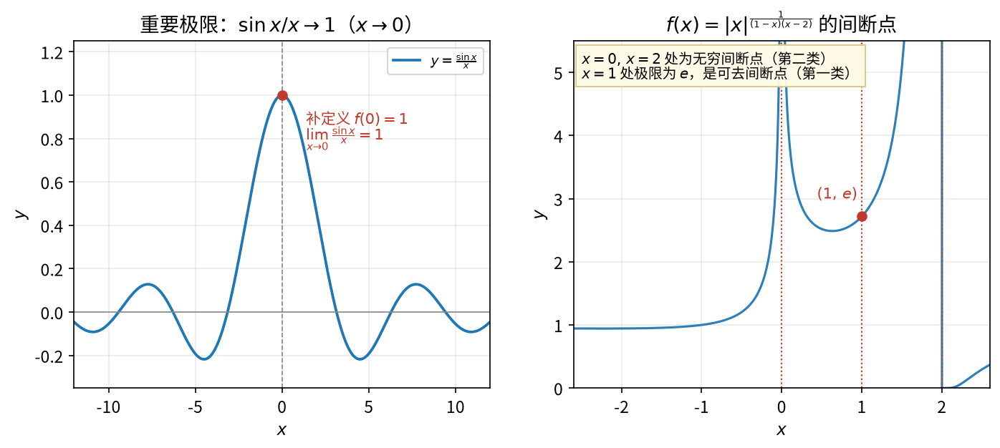
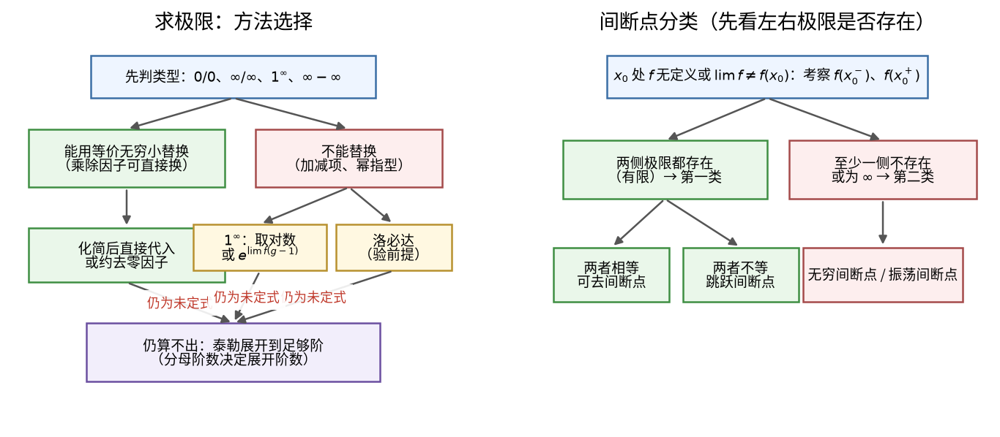
查看该图源码
flowchart TD
S["求极限"] --> T{"先判断未定式类型"}
T -->|"0/0 型或无穷比无穷型"| L{"洛必达三条前提是否都满足"}
L -->|"都满足"| R["洛必达 再判断新极限"]
L -->|"有一条不满足"| E["改用等价无穷小或泰勒展开"]
T -->|"0 乘无穷、无穷减无穷、1 的无穷次幂"| C["先化归为 0/0 型或无穷比无穷型"]
C --> L
T -->|"不是未定式"| D["直接代入 或用连续性"]
G["判断间断点类型"] --> P{"该点两侧极限是否都存在"}
P -->|"都存在"| A["第一类 可去或跳跃"]
P -->|"至少有一侧不存在"| B["第二类 无穷或振荡"]
易错点
错在哪 · 正确是什么- 错在见到 $\frac00$ 型就直接洛必达，忘记核对前提。正确做法是先验证去心邻域内 $f$ 与 $g$ 可导、$g'(x)\neq 0$、导数之比的极限存在；若 $\lim\frac{f'}{g'}$ 振荡不存在，只能换方法，不能断言原极限不存在，例如 $\lim_{x\to\infty}\frac{x+\sin x}{x}=1$。
- 错在加减法中随手用等价无穷小替换，把 $\frac{\tan x-\sin x}{x^3}$ 里的两项都换成 $x$ 而算出极限 0。正确结果是 $\frac12$，因为替换后发生了同阶相消，此时必须升到三阶用 $\tan x-\sin x\sim\frac{x^3}{2}$。
- 错在认为极限存在必须要求函数在该点有定义。正确结论是极限只与去心邻域有关，$f(x_0)$ 是否存在、等于多少都不影响 $\lim_{x\to x_0}f(x)$，这正是可去间断点的来源。
- 错在只算一侧极限就把间断点归入第一类。正确做法是两侧都要算：只要有一侧极限为无穷大或振荡不存在，该点就是第二类间断点。
真题示例
题干 · 解析2024 年数二第 1 题（选择题，5 分）
函数 $f(x)=|x|^{\frac{1}{(1-x)(x-2)}}$ 的第一类间断点的个数为（ ）
A. 3
B. 2
C. 1
D. 0
解析：间断点只可能出现在 $x=0,1,2$ 三处（$x=0$ 使幂函数失去意义，$x=1,2$ 使指数没有定义）。
$x\to 0$ 时
$$\frac{\ln|x|}{(1-x)(x-2)}\to+\infty$$
故 $f(x)\to+\infty$，两侧极限都不存在，$x=0$ 是第二类间断点。
$x\to 1$ 时记 $x=1+\varepsilon$。
此时 $(1-x)(x-2)\approx\varepsilon$、$\ln|x|\approx\varepsilon$，指数与 $\ln|x|$ 之积趋于 1。
故 $f(x)\to e$，左右极限都存在且相等，$x=1$ 是可去间断点。
$x\to 2^-$ 时 $f(x)\to+\infty$。
$x\to 2^+$ 时 $f(x)\to 0$，$x=2$ 也是第二类间断点。
所以第一类间断点只有 $x=1$ 一个，选 C。
导数与微分 高频
考频统计
历年命题分布考察次数 4 次；涉及年份：2023、2024（2023—2024 年数二真题逐题定章统计）；分数占比约 15%；主要题型：选择、填空为主（高阶导数、参数方程求导、曲率）。
核心讲解
定义 · 公式 · 适用条件【导数的定义与可导性判定】
- 导数是差商的极限，表示函数在该点的瞬时变化率。
- 几何意义是曲线在点 $(x_0,f(x_0))$ 处切线的斜率。
- 可导必连续，连续不一定可导，所以验证可导性只有定义与公式两条路。
- 能化为基本初等函数复合的，用求导公式直接算。
- 含分段点、绝对值或最值符号的，必须在分界点用定义算左右导数。
- 分段的求导公式只在各自的开区间内成立，分界点必须单独验证。
【核心公式】
$$ f'(x_0)=\lim_{\Delta x\to 0}\frac{f(x_0+\Delta x)-f(x_0)}{\Delta x} $$
$$ f'(x_0)\ \text{存在}\iff f'_-(x_0)=f'_+(x_0) $$
【适用条件】
- $f$ 在 $x_0$ 的某邻域内有定义；
- 左导数与右导数都存在；
- 两者相等，这个公共值才是 $f'(x_0)$。
⚠️ 易错点：把连续当成可导的充分条件。$|x|$ 在 $x=0$ 处连续，但左右导数分别为 $-1$ 与 $1$，故不可导。
【四类函数的求导法则】
- 求导前先辨认函数形式：四则运算、复合、隐函数、参数方程、幂指函数、反函数，形式决定方法。
- 复合结构用链式法则，由外向内逐层求导，不要漏乘内层导数。
- 隐函数把 $y$ 看作 $x$ 的函数，两边对 $x$ 求导后再解出 $y'$。
- 参数方程先求一阶导，再对 $t$ 求导后除以 $x'(t)$ 得二阶导。
- 幂指函数先取对数化积，再两边求导，最后乘回原函数。
- 反函数的导数与原函数的导数互为倒数，且自变量要换成对应的值。
| 函数形式 | 求导方法 | 适用条件 | 关键提醒 |
|---|---|---|---|
| 四则运算 | 和差积商的求导法则 | 各函数在该点可导 | 商的法则要求分母不为 0 |
| 复合函数 | 链式法则 | 内层与外层都可导 | 由外向内逐层求导，不漏乘内层导数 |
| 隐函数 | 两边对 $x$ 求导 | $y$ 是 $x$ 的可导函数 | 求导后把 $y'$ 当作未知量解出 |
| 参数方程 | 参数求导公式 | $x'(t)$ 不为 0 | 二阶导要对 $t$ 求导后除以 $x'(t)$ |
| 幂指函数 | 对数求导法 | $u(x)>0$ 且 $u$ 与 $v$ 都可导 | 先取对数化积，再两边求导 |
| 反函数 | 反函数求导公式 | 直接函数单调可导且导数不为 0 | 导数互为倒数，求完别忘了换回自变量 |
【核心公式】
$$ \{f[\varphi(x)]\}'=f'[\varphi(x)]\varphi'(x) $$
$$ \frac{\mathrm{d}y}{\mathrm{d}x}=\frac{y'(t)}{x'(t)},\qquad \frac{\mathrm{d}^2y}{\mathrm{d}x^2}=\frac{x'(t)y''(t)-y'(t)x''(t)}{[x'(t)]^3} $$
$$ y=u(x)^{v(x)}\ \Longrightarrow\ y'=y\left(v'\ln u+v\frac{u'}{u}\right) $$
【适用条件】
- 链式法则要求内层与外层都可导；
- 隐函数求导要求 $y$ 是 $x$ 的可导函数；
- 参数方程求导要求 $x'(t)$ 不为 0；
- 对数求导法要求 $u(x)>0$。
⚠️ 易错点：把参数方程的二阶导写成 $\frac{y''(t)}{x''(t)}$。正确公式是 $\frac{\mathrm{d}^2y}{\mathrm{d}x^2}=\frac{x'y''-y'x''}{(x')^3}$，例如 $x=t^2$、$y=t^3$ 在 $t=1$ 处 $\frac{\mathrm{d}y}{\mathrm{d}x}=\frac32$、$\frac{\mathrm{d}^2y}{\mathrm{d}x^2}=\frac34$。
【高阶导数与莱布尼茨公式】
- 高阶导数只需记住几个通项公式与莱布尼茨公式。
- 乘积求高阶导用莱布尼茨公式，它与二项式展开的形式完全平行。
- 当乘积中一个因子是多项式时，求和自动只剩有限几项。
- 求高阶导之前常先做部分分式分解或有理化，把函数拆成便于逐阶求导的形式。
- $n$ 阶导的通项既可以用数学归纳法证明，也可以由逐阶求导观察规律得到。
【核心公式】
$$ (uv)^{(n)}=\sum_{k=0}^{n}C_n^k u^{(k)}v^{(n-k)} $$
$$ (\sin x)^{(n)}=\sin\left(x+\frac{n\pi}{2}\right),\qquad \left(\ln(1+x)\right)^{(n)}=\frac{(-1)^{n-1}(n-1)!}{(1+x)^n} $$
【适用条件】
- $u$ 与 $v$ 都具有 $n$ 阶导数；
- 其中一个因子为多项式时，它的高阶导恒等于 0，求和自动截断；
- 组合数与求导次序无关，展开式两端分别只含 $u^{(n)}$ 与 $v^{(n)}$。
⚠️ 秒杀技：乘积中见到多项式因子 $x^m$，只算到 $k=m$ 项即可 —— 更高阶导全为 $0$，能省掉大半计算量。
【微分与曲率】
- 微分是函数增量的线性主部，一元函数中可导与可微等价。
- 曲率刻画曲线的弯曲程度，曲率半径与曲率互为倒数。
- 曲率圆的圆心在曲线凹向一侧的法线上，半径等于曲率半径。
- 竖直切线处 $y'$ 为无穷大，直接套曲率公式会失效，此时按参数方程计算。
- 求曲率前先确认曲线在该点二阶可导，否则改走参数方程路线。
【核心公式】
$$ \mathrm{d}y=f'(x)\,\mathrm{d}x $$
$$ K=\frac{|y''|}{(1+y'^2)^{3/2}},\qquad R=\frac1K $$
$$ y^2=x\ \text{在原点处}:\quad K=2,\qquad R=\frac12,\qquad \text{曲率圆为}\ x^2+y^2=x $$
【适用条件】
- $f$ 在 $x$ 处可导，微分才存在；
- 曲率公式要求 $y$ 具有二阶导数，且分母不为 0；
- $y'$ 不存在或为无穷大时，必须改用参数方程形式的曲率公式。
⚠️ 易错点：把曲率与曲率半径混用，或忘记分母是 $(1+y'^2)^{3/2}$。正确关系是 $R=\frac1K$；$y^2=x$ 在原点处 $K=2$、$R=\frac12$，圆心在凹向一侧的法线上，即 $\left(\frac12,0\right)$。
关键结论速记
考前最后扫一眼- $(x^{\mu})'=\mu x^{\mu-1}$，$(e^x)'=e^x$，$(\ln x)'=\frac1x$ —— 最常用的基本导数，一切求导最终都归结到基本导数表。
- 参数方程：$\frac{dy}{dx}=\frac{y'(t)}{x'(t)}$，$\frac{d^2y}{dx^2}=\frac{x'y''-y'x''}{(x')^3}$ —— 二阶导必须再对 $t$ 求导后除以 $x'(t)$，不能上下分别求二阶导。
- $(uv)^{(n)}=\sum_{k=0}^{n}C_n^k u^{(k)}v^{(n-k)}$ —— 莱布尼茨公式，含多项式因子时只有前几项非零。
- $(\sin x)^{(n)}=\sin\left(x+\frac{n\pi}{2}\right)$，$(\ln(1+x))^{(n)}=\frac{(-1)^{n-1}(n-1)!}{(1+x)^n}$ —— 高阶导数通项，$n$ 阶导直接代入。
- 可导必连续，连续不一定可导 —— $|x|$ 在 $x=0$ 处连续但不可导，分界点必须单独验证。
- $dy=f'(x)dx$，一元函数可导与可微等价 —— 微分是函数增量的线性主部。
- $K=\frac{|y''|}{(1+y'^2)^{3/2}}$，$R=\frac1K$ —— 曲率与曲率半径，如 $y^2=x$ 在原点 $K=2$、$R=\frac12$，曲率圆为 $x^2+y^2=x$。
示意图
几何直观与判定流程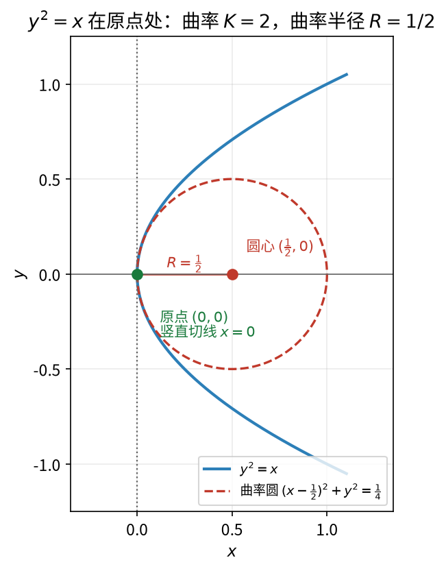
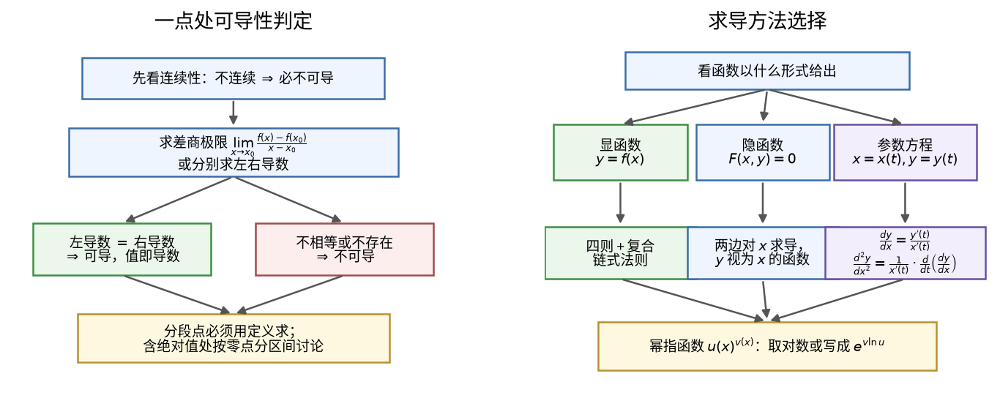
查看该图源码
flowchart TD
S["求 f 在 x0 处的导数"] --> Q1{"函数是否由分段式或绝对值给出"}
Q1 -->|"是 且 x0 是分界点"| D1["用定义算左导数与右导数"]
Q1 -->|"否"| Q2{"函数以何种形式给出"}
Q2 -->|"显函数 含复合结构"| M1["链式法则 由外向内逐层求导"]
Q2 -->|"隐函数 F 等于零"| M2["两边对 x 求导 把 y 视为 x 的函数 再解出 y 的一阶导"]
Q2 -->|"参数方程 x 与 y 都由 t 给出"| M3["先求 dy 比 dx 再对 t 求导后除以 x 对 t 的导数"]
Q2 -->|"幂指函数 u 的 v 次幂"| M4["取对数化积 再两边求导"]
D1 --> R{"左导数与右导数是否相等"}
R -->|"相等"| Y["可导 导数值即该极限值"]
R -->|"不等或至少一侧不存在"| N["不可导"]
易错点
错在哪 · 正确是什么- 错在把连续当成可导的充分条件。正确结论是可导必连续、连续不一定可导，例如 $|x|$ 在 $x=0$ 处连续但左右导数分别为 $-1$ 与 $1$，不可导。
- 错在分段函数在分界点处先分段求导再代入。正确做法是分界点必须用定义算左右导数（或验证 $f'$ 在该点的左右极限与定义值是否一致），因为分段的求导公式只在各自的开区间内成立。
- 错在参数方程的二阶导写成 $\frac{y''(t)}{x''(t)}$。正确公式是 $\frac{d^2y}{dx^2}=\frac{x'y''-y'x''}{(x')^3}$，例如 $x=t^2$、$y=t^3$ 在 $t=1$ 处 $\frac{dy}{dx}=\frac32$、$\frac{d^2y}{dx^2}=\frac34$。
- 错在曲率与曲率半径混用，或忘记分母是 $(1+y'^2)^{3/2}$。正确关系是 $R=\frac1K$，如 $y^2=x$ 在原点 $K=2$、$R=\frac12$，圆心在凹向一侧的法线上，即 $\left(\frac12,0\right)$。
真题示例
题干 · 解析2024 年数二第 14 题（填空题，5 分）
已知函数 $f(x)=(e^x+1)x^2$，则 $f^{(5)}(1)=$ ______。
解析：
$x^2$ 的三阶及以上导数恒为零，故 $f^{(5)}(x)=(x^2e^x)^{(5)}+0$。
对 $u=x^2$、$v=e^x$ 用莱布尼茨公式，利用 $v^{(k)}=e^x$ 得
$$(x^2e^x)^{(5)}=C_5^0x^2e^x+C_5^1\cdot 2x\cdot e^x+C_5^2\cdot 2\cdot e^x=e^x(x^2+10x+20)$$
$x^2$ 的三阶导为零使 $k\ge 3$ 的项全部消失。
代入 $x=1$ 得 $f^{(5)}(1)=31e$。
中值定理与导数应用 高频
考频统计
历年命题分布考察次数 4 次；涉及年份：2023、2024（2023—2024 年数二真题逐题定章统计）；分数占比约 13%；主要题型：选择、解答（证明题常出于此）。
核心讲解
定义 · 公式 · 适用条件【三大中值定理】
- 共同条件：闭区间 $[a,b]$ 上连续、开区间 $(a,b)$ 内可导，端点处只要求连续。
- 罗尔定理比另外两条多一个端点值相等的条件。
- 拉格朗日中值定理只去掉端点相等这一条，是罗尔定理的推广。
- 柯西中值定理把两个函数放在一起，取 $g(x)=x$ 时就退化为拉格朗日中值定理。
- 三条定理都只断言 $\xi$ 的存在性，不给出 $\xi$ 的具体位置。
| 定理 | 适用条件 | 结论 |
|---|---|---|
| 罗尔定理 | $[a,b]$ 上连续，$(a,b)$ 内可导，且 $f(a)=f(b)$ | 存在 $\xi\in(a,b)$ 使 $f'(\xi)=0$ |
| 拉格朗日中值定理 | $[a,b]$ 上连续，$(a,b)$ 内可导 | 存在 $\xi\in(a,b)$ 使 $f(b)-f(a)=f'(\xi)(b-a)$ |
| 柯西中值定理 | $f$ 与 $g$ 在 $[a,b]$ 上连续、在 $(a,b)$ 内可导，且 $g'(x)\neq 0$ | 存在 $\xi\in(a,b)$ 使两个函数的增量之比等于导数之比 |
| 泰勒中值定理 | $f$ 在含 $x_0$ 的区间内具有 $n+1$ 阶导数 | 展开到 $n$ 阶，余项含 $f^{(n+1)}(\xi)$，$\xi$ 介于 $x_0$ 与 $x$ 之间 |
【核心公式】
$$ f'(\xi)=0 $$
$$ f(b)-f(a)=f'(\xi)(b-a) $$
$$ \frac{f(b)-f(a)}{g(b)-g(a)}=\frac{f'(\xi)}{g'(\xi)} $$
【适用条件】
- $f$ 在闭区间 $[a,b]$ 上连续；
- $f$ 在开区间 $(a,b)$ 内可导；
- 罗尔定理还需 $f(a)=f(b)$，柯西中值定理还需 $g'(x)\neq 0$（保证分母不为 0）。
⚠️ 易错点：不验证条件就套用中值定理。$f(x)=|x|$ 在 $[-1,1]$ 上连续，但在 $x=0$ 处不可导，对它用拉格朗日中值定理是错误的。
【泰勒中值定理】
- 泰勒中值定理是拉格朗日定理的推广，把函数写成多项式与余项之和。
- 条件是 $f$ 在含 $x_0$ 的区间内具有 $n+1$ 阶导数。
- 余项中的 $\xi$ 介于 $x_0$ 与 $x$ 之间，随 $x$ 而变，形式与拉格朗日余项一致。
- 最常用的是 $n=1$ 的形式，即在 $x_0$ 处展开到一阶。
- 当题设只给到二阶导数连续时，余项可由积分余项配合积分中值定理得到。
【核心公式】
$$ f(x)=\sum_{k=0}^{n}\frac{f^{(k)}(x_0)}{k!}(x-x_0)^k+\frac{f^{(n+1)}(\xi)}{(n+1)!}(x-x_0)^{n+1} $$
$$ f(x)=f(x_0)+f'(x_0)(x-x_0)+\frac{f''(\xi)}{2}(x-x_0)^2 $$
$$ \int_{x_0}^{x}(x-t)f''(t)\,\mathrm{d}t $$
【适用条件】
- $f$ 在含 $x_0$ 的区间内具有 $n+1$ 阶导数；
- 余项中的 $\xi$ 介于 $x_0$ 与 $x$ 之间，可写成 $\xi=x_0+\theta(x-x_0)$，其中 $0<\theta<1$；
- 题设只给到二阶导连续时，改用积分余项加积分中值定理，结论形式不变。
⚠️ 秒杀技：结论含 $f''(\xi)$ 时，就在极值点或区间中点处展开 —— 这两处的奇数阶项在相加减时正好抵消，能把要证的等式凑出来。
【单调性、极值与凹凸性】
- 三条判定各看一个符号：单调性看 $f'$ 的符号，极值看 $f'$ 的零点与两侧符号，凹凸看 $f''$ 的符号。
- $f'(x_0)=0$ 或 $f'(x_0)$ 不存在只是极值点的必要条件，不是充分条件。
- $f''(x_0)=0$ 或 $f''(x_0)$ 不存在只是拐点的必要条件，不是充分条件。
- 第一充分条件：$f'$ 在 $x_0$ 两侧变号。
- 第二充分条件：$f'(x_0)=0$ 且 $f''(x_0)\neq 0$。
| 判定对象 | 条件 | 结论 |
|---|---|---|
| 单调增 | 区间上 $f'(x)>0$ | $f$ 在该区间上严格单调增 |
| 单调减 | 区间上 $f'(x)<0$ | $f$ 在该区间上严格单调减 |
| 极值点（第一充分条件） | $f'$ 在 $x_0$ 两侧变号 | $x_0$ 为极值点 |
| 极值点（第二充分条件） | $f'(x_0)=0$ 且 $f''(x_0)\neq 0$ | $f''(x_0)>0$ 时为极小值点，$f''(x_0)<0$ 时为极大值点 |
| 拐点 | $f''$ 在 $x_0$ 两侧变号 | 点 $(x_0,f(x_0))$ 为拐点 |
【核心公式】
$$ f'(x)>0\ \Longrightarrow\ f\ \text{严格单调增},\qquad f'(x)<0\ \Longrightarrow\ f\ \text{严格单调减} $$
$$ f'(x_0)=0,\quad f''(x_0)\neq 0\ \Longrightarrow\ x_0\ \text{为极值点} $$
$$ f''(x)>0\ \Longrightarrow\ \text{曲线是凹的};\qquad f''\ \text{在}\ x_0\ \text{两侧变号}\ \Longrightarrow\ x_0\ \text{为拐点} $$
【适用条件】
- 判定单调性与极值要求 $f$ 在区间上可导；
- 判定凹凸性与使用第二充分条件要求 $f$ 具有二阶导数；
- 当 $f''(x_0)=0$ 时第二充分条件失效，必须回到 $f'$ 是否变号来判断。
⚠️ 易错点：由 $f'(x_0)=0$ 直接断言 $x_0$ 是极值点。$y=x^3$ 在 $x=0$ 处 $f'(0)=0$ 却不是极值点；由 $f''(x_0)=0$ 直接断言拐点同样错，$y=x^4$ 在 $x=0$ 处 $f''(0)=0$，而 $f''=12x^2$ 在两侧同号。
【渐近线】
- 渐近线分三类：水平渐近线、竖直渐近线、斜渐近线。
- 水平渐近线来自 $x\to\infty$ 时函数趋于有限值。
- 竖直渐近线来自 $x\to x_0$ 时函数趋于无穷大。
- 斜渐近线要先求斜率，再求截距，两者都存在时才有斜渐近线。
- 斜率不存在时就没有斜渐近线，不必再算截距。
【核心公式】
$$ y=A\ \text{为水平渐近线}\iff \lim_{x\to\infty}f(x)=A $$
$$ x=x_0\ \text{为竖直渐近线}\iff \lim_{x\to x_0}f(x)=\infty $$
$$ k=\lim_{x\to\infty}\frac{f(x)}{x},\qquad b=\lim_{x\to\infty}[f(x)-kx],\qquad y=kx+b $$
$$ y=x\ln\left(e+\frac{1}{x-1}\right)\ \text{的斜渐近线为}\ y=x+\frac1e $$
【适用条件】
- 求水平渐近线要分别看 $x\to+\infty$ 与 $x\to-\infty$，两侧可以不同；
- 求竖直渐近线先找函数的无定义点与分段函数的分界点；
- 斜渐近线要求斜率与截距都存在且为有限值。
⚠️ 秒杀技：先算 $k=\lim_{x\to\infty}\frac{f(x)}{x}$。算出的 $k=0$ 时斜渐近线退化为水平渐近线；$k$ 不存在就直接排除斜渐近线。
【证明题的辅助函数构造】
- 核心思路：把结论中的中值点看成某个辅助函数的驻点。
- 要证 $f'(\xi)=0$：构造满足 $F(a)=F(b)$ 的辅助函数 $F$，再用罗尔定理。
- 要证含 $f(b)-f(a)$ 的等式：用拉格朗日中值定理。
- 要证含两组函数值增量之比的等式：用柯西中值定理。
- 要证含 $f''(\xi)$ 的等式：在极值点或区间中点处用泰勒公式。
- 常用构造：要证 $f'(\xi)+\lambda f(\xi)=0$ 就取 $F(x)=e^{\lambda x}f(x)$，这是原函数法。
【核心公式】
$$ F(x)=e^{\lambda x}f(x),\qquad F'(\xi)=0\ \Longrightarrow\ f'(\xi)+\lambda f(\xi)=0 $$
【适用条件】
- 辅助函数 $F$ 必须在 $[a,b]$ 上连续、在 $(a,b)$ 内可导；
- 必须验证 $F(a)=F(b)$ 才能使用罗尔定理；
- 两个不同的中值点必须分别记为不同字母，并写清各自所在的开区间。
⚠️ 易错点：证明题中两个不同的中值点共用一个字母。正确做法是先得 $\xi_1\in(0,a)$、$\xi_2\in(-a,0)$，再在 $(\xi_2,\xi_1)$ 内用介值定理。
关键结论速记
考前最后扫一眼- 罗尔定理：闭区间连续 + 开区间可导 + $f(a)=f(b)$ $\Rightarrow$ 存在 $\xi\in(a,b)$ 使 $f'(\xi)=0$ —— 三个条件缺一不可，端点处只要求连续。
- 拉格朗日：$f(b)-f(a)=f'(\xi)(b-a)$ —— 见到两端函数值之差就用它，$f(x)=|x|$ 在 $[-1,1]$ 上当反例。
- 柯西：$\frac{f(b)-f(a)}{g(b)-g(a)}=\frac{f'(\xi)}{g'(\xi)}$ —— 两个函数增量之比，前提是 $g'(x)\neq 0$。
- $f'(x_0)=0$ 且 $f''(x_0)>0$ $\Rightarrow$ $x_0$ 为极小值点 —— 第二充分条件，$f''(x_0)=0$ 时失效，要回到 $f'$ 是否变号判断。
- 拐点判定：$f''$ 在 $x_0$ 两侧变号 —— $f''(x_0)=0$ 只是必要条件，$y=x^4$ 在 $x=0$ 处 $f''=12x^2$ 不变号，不是拐点。
- 斜渐近线 $y=kx+b$：$k=\lim_{x\to\infty}\frac{f(x)}{x}$，$b=\lim_{x\to\infty}[f(x)-kx]$ —— $k$ 不存在时没有斜渐近线。
- 构造辅助函数：要证 $f'(\xi)+\lambda f(\xi)=0$ 就取 $F(x)=e^{\lambda x}f(x)$ —— 原函数法，$F$ 的端点值相等即可用罗尔定理。
示意图
几何直观与判定流程

查看该图源码
flowchart TD
S["中值定理证明题"] --> Q1{"结论中是否出现 f 在区间内取极值"}
Q1 -->|"是"| F1["先用费马引理 极值点处一阶导为零"]
F1 --> Q3{"结论是否含二阶导"}
Q1 -->|"否"| Q2{"结论的形式是哪一种"}
Q2 -->|"只含 f 的一阶导为零"| R1["罗尔定理 构造端点值相等的辅助函数"]
Q2 -->|"含两端的函数值之差"| L1["拉格朗日中值定理"]
Q2 -->|"含两组函数值增量之比"| C1["柯西中值定理"]
Q2 -->|"含二阶导或高阶项"| T1["泰勒中值定理 在极值点或中点展开"]
Q3 -->|"是"| T1
Q3 -->|"否"| L1
R1 --> H1["常用构造 用积分因子或原函数法凑出 F"]
H1 --> Z1["验证闭区间连续与开区间可导后写出结论"]
T1 --> Z1
L1 --> Z1
C1 --> Z1
易错点
错在哪 · 正确是什么- 错在不验证条件就套用中值定理，例如对 $f(x)=|x|$ 在 $[-1,1]$ 上使用拉格朗日中值定理。正确做法是先核对闭区间上连续与开区间内可导，此处 $x=0$ 处不可导，定理失效（事实上 $\frac{f(1)-f(-1)}{2}=0$ 却不存在使 $f'(\xi)=0$ 的点）。
- 错在由 $f'(x_0)=0$ 直接断言 $x_0$ 是极值点，例如 $y=x^3$ 在 $x=0$ 处 $f'(0)=0$ 但不是极值点。正确做法是看 $f'$ 在 $x_0$ 两侧是否变号，或验证 $f''(x_0)\neq 0$。
- 错在由 $f''(x_0)=0$ 直接断言 $x_0$ 是拐点，例如 $y=x^4$ 在 $x=0$ 处 $f''(0)=0$ 而 $f''=12x^2$ 在两侧同号。正确做法是验证 $f''$ 在 $x_0$ 两侧变号，或者验证 $f'''$ 存在且 $f'''(x_0)\neq 0$。
- 错在证明题中两个不同的中值点共用一个字母。正确做法是分区间使用时分别记为 $\xi$ 与 $\eta$，并写清各自所在的开区间，例如先得 $\xi_1\in(0,a)$、$\xi_2\in(-a,0)$，再在 $(\xi_2,\xi_1)$ 内用介值定理。
真题示例
题干 · 解析2023 年数二第 21 题（解答题，12 分）
设函数 $f(x)$ 在 $[-a,a]$ 上具有 2 阶连续导数，证明：
（I）若 $f(0)=0$，则存在 $\xi\in(-a,a)$，使得 $f''(\xi)=\frac{1}{a^2}[f(a)+f(-a)]$；
（II）若 $f(x)$ 在 $(-a,a)$ 内取得极值，则存在 $\eta\in(-a,a)$，使得 $|f''(\eta)|\ge\frac{1}{2a^2}|f(a)-f(-a)|$。
解析：
（I） 由 $f''$ 连续，对 $f$ 用带拉格朗日余项的泰勒公式：
在 $x=0$ 处展开，分别取 $x=a$ 与 $x=-a$，得
$$f(a)=f(0)+f'(0)a+\frac{f''(\xi_1)}{2}a^2$$
$$f(-a)=f(0)-f'(0)a+\frac{f''(\xi_2)}{2}a^2$$
其中 $\xi_1\in(0,a)$、$\xi_2\in(-a,0)$。两式相加并用 $f(0)=0$ 得
$$f(a)+f(-a)=\frac{a^2}{2}[f''(\xi_1)+f''(\xi_2)]$$
再由 $f''$ 的连续性用介值定理：存在 $\xi\in(\xi_2,\xi_1)\subset(-a,a)$ 使
$$f''(\xi)=\frac{f''(\xi_1)+f''(\xi_2)}{2}=\frac{f(a)+f(-a)}{a^2}$$
（II） 设 $f$ 在 $c\in(-a,a)$ 处取得极值，由费马引理知 $f'(c)=0$。
在 $x=c$ 处展开得
$$f(a)=f(c)+\frac{f''(\eta_1)}{2}(a-c)^2$$
$$f(-a)=f(c)+\frac{f''(\eta_2)}{2}(a+c)^2$$
两式相减并取绝对值，记 $M=\max\{|f''(\eta_1)|,|f''(\eta_2)|\}$，则
$$|f(a)-f(-a)|\le\frac{M}{2}[(a-c)^2+(a+c)^2]=M(a^2+c^2)\le 2a^2M$$
于是 $M\ge\frac{|f(a)-f(-a)|}{2a^2}$，取使 $|f''(\eta)|=M$ 的那个点即得结论。
不定积分 常规
考频统计
历年命题分布考察次数 考频待补充；涉及年份：见下方说明；分数占比约 7%；主要题型：少单独命题，多为定积分与微分方程解答题的中间步骤。
考频说明：本章在 2023—2024 年样本中未单独命题：官方从不公布考频，本资料亦无法核实其独立考察次数，故标注「考频待补充」。但基本积分表、换元法与分部积分法是定积分、微分方程与二重积分计算的必备前置，不可跳过。
核心讲解
定义 · 公式 · 适用条件【原函数与基本积分表】
- 原函数的定义：若 $F'(x)=f(x)$ 在区间 $I$ 上处处成立，则称 $F$ 是 $f$ 在 $I$ 上的一个原函数。
- 原函数存在定理给出的是充分条件：$f$ 在区间 $I$ 上连续时必有原函数。
- 此时变限积分就是一个原函数，同一被积函数的任意两个原函数只相差一个常数。
- 所以不定积分表示的是函数族，结果必须写成 $F(x)+C$。
- 不定积分的计算完全建立在基本积分表上，基本公式必须背到条件反射。
| 间断点类型 | 是否有原函数 | 理由 |
|---|---|---|
| 连续（无间断点） | 必有原函数 | 变限积分即为一个原函数 |
| 第一类间断点（可去、跳跃） | 没有原函数 | 导数不可能出现第一类间断点 |
| 无穷间断点（第二类） | 没有原函数 | 原函数在该点附近无界，与可导矛盾 |
| 振荡间断点（第二类） | 可能有原函数 | 振荡不影响原函数的存在性 |
【核心公式】
$$ \int f(x)\,\mathrm{d}x=F(x)+C,\qquad F'(x)=f(x) $$
$$ \int x^{\mu}\,\mathrm{d}x=\frac{x^{\mu+1}}{\mu+1}+C\ (\mu\neq-1),\qquad \int\frac{\mathrm{d}x}{x}=\ln|x|+C $$
$$ \int e^x\,\mathrm{d}x=e^x+C,\qquad \int\frac{\mathrm{d}x}{1+x^2}=\arctan x+C,\qquad \int\frac{\mathrm{d}x}{\sqrt{1-x^2}}=\arcsin x+C $$
$$ y=\frac{x^2}{2}+C\ \text{是}\ f(x)=x\ \text{的原函数族}:\quad C=-1,0,1\ \text{三条曲线在}\ x=1\ \text{处的切线斜率都等于}\ f(1)=1 $$
【适用条件】
- $F'(x)=f(x)$ 要在区间 $I$ 上处处成立；
- 求不定积分时被积函数应在区间上连续，以保证原函数存在；
- 含第一类间断点或无穷间断点的函数，在含该点的区间上没有原函数。
⚠️ 易错点：漏写任意常数 $C$，或把两个不同的常数写成同一个。不定积分是函数族而不是单个函数；分段函数求原函数时，两段的常数不能取成同一个，要由分段点处原函数连续解出两段常数之差。
【换元积分法】
- 第一类换元法（凑微分）的依据是复合函数求导公式的逆用。
- 操作上就是把被积表达式整体凑成复合函数与微分的乘积。
- 线性代换是最常用的一条，结果中不要漏掉系数。
- 第二类换元法用来消去根式，算完必须把 $t$ 回代为 $x$。
- 三角代换有固定对应：平方差用正弦、平方和用正切、被减平方用正割。
- 选路原则：能把微分凑进去就用第一类，凑不进去就作第二类代换。
| 换元方法 | 适用情形 | 关键要求 | 典型形式 |
|---|---|---|---|
| 第一类换元（凑微分） | 被积式能整体凑成复合函数与微分的乘积 | $\varphi(x)$ 可导，$f$ 有原函数 | 把被积式凑成 $f(\varphi(x))\,\mathrm{d}\varphi(x)$ |
| 第二类换元（三角代换） | 被积函数含 $\sqrt{a^2-x^2}$、$\sqrt{a^2+x^2}$、$\sqrt{x^2-a^2}$ 三类根式 | 代换 $x=\psi(t)$ 单调可导且 $\psi'(t)$ 不为 0 | 分别令 $x=a\sin t$、$x=a\tan t$、$x=a\sec t$ |
| 第二类换元（根式代换） | 被积函数含 $\sqrt[n]{ax+b}$ 一类的整根式 | 代换后必须能回代为 $x$ | 令 $t=\sqrt[n]{ax+b}$，把根式化为有理式 |
【核心公式】
$$ \int f(\varphi(x))\varphi'(x)\,\mathrm{d}x=\int f(u)\,\mathrm{d}u=F(u)+C=F(\varphi(x))+C $$
$$ \int f(ax+b)\,\mathrm{d}x=\frac1aF(ax+b)+C $$
$$ \sqrt{a^2-x^2}\ \to\ x=a\sin t,\qquad \sqrt{a^2+x^2}\ \to\ x=a\tan t,\qquad \sqrt{x^2-a^2}\ \to\ x=a\sec t $$
$$ \int\frac{\mathrm{d}x}{x(1+\ln x)}=\ln|1+\ln x|+C,\qquad \int xe^{x^2}\,\mathrm{d}x=\frac12e^{x^2}+C $$
$$ \int\sqrt{4-x^2}\,\mathrm{d}x=\frac x2\sqrt{4-x^2}+2\arcsin\frac x2+C $$
【适用条件】
- 第一类换元要求 $\varphi(x)$ 可导且 $f$ 有原函数；
- 线性代换中 $a$ 不为 0，结果必须带因子 $\frac1a$；
- 第二类换元要求 $x=\psi(t)$ 单调可导且 $\psi'(t)$ 不为 0；
- 算完必须用反函数把 $t$ 回代为 $x$，结果可以直接求导自检。
⚠️ 易错点：凑微分时把 $\int f(ax+b)\,\mathrm{d}x$ 写成 $F(ax+b)+C$。正确结果是 $\frac1aF(ax+b)+C$，例如 $\int e^{2x}\,\mathrm{d}x=\frac12e^{2x}+C$ 而不是 $e^{2x}+C$。
【分部积分与有理函数积分】
- 分部积分处理的是两类不同函数相乘的被积函数。
- 选 $u$ 的次序为“反三角、对数、幂函数、指数、三角”，谁排在前面谁作 $u$。
- 选 $u$ 的原则是：求导后变简单的作 $u$，容易积分的作 $\mathrm{d}v$。
- 有理函数有固定路线：假分式先做多项式除法拆出整式。
- 真分式按分母的因式分解拆成部分分式，再逐项积分。
- 因此有理函数的不定积分一定可以用初等函数表出。
【核心公式】
$$ \int u\,\mathrm{d}v=uv-\int v\,\mathrm{d}u $$
$$ \int(x+1)\cos x\,\mathrm{d}x=(x+1)\sin x+\cos x+C,\qquad \int\ln x\,\mathrm{d}x=x\ln x-x+C $$
【适用条件】
- 被积函数是两类不同函数的乘积；
- $u$ 与 $v$ 都可导，且 $\int v\,\mathrm{d}u$ 要比原积分更容易算；
- 有理函数拆分前必须先把假分式化为整式与真分式之和。
⚠️ 秒杀技：按“反、对、幂、指、三”的次序选 $u$。例如 $\int\ln x\,\mathrm{d}x$ 必须把 $\ln x$ 当作 $u$，否则会绕回原积分。
关键结论速记
考前最后扫一眼- $\int f(ax+b)\,\mathrm{d}x=\frac1aF(ax+b)+C$ —— 线性代换只差常数因子 $\frac1a$，是最常见的凑微分。
- $\int u\,\mathrm{d}v=uv-\int v\,\mathrm{d}u$ —— 选 $u$ 按“反、对、幂、指、三”，排在前面的一律放进 $u$。
- $\int\frac{\mathrm{d}x}{x^2+a^2}=\frac1a\arctan\frac xa+C$，$\int\frac{\mathrm{d}x}{\sqrt{x^2\pm a^2}}=\ln\left|x+\sqrt{x^2\pm a^2}\right|+C$ —— 比基本积分表更常用的两条补充公式。
- $\int\sqrt{a^2-x^2}\,\mathrm{d}x=\frac x2\sqrt{a^2-x^2}+\frac{a^2}{2}\arcsin\frac xa+C$ —— 三角代换的标准产物，结果同时含根式与反正弦。
- 连续函数必有原函数，含第一类或无穷间断点的函数无原函数 —— 判断原函数是否存在，只看间断点的类型。
- 分段函数的原函数必须在分段点连续 —— 各段分别积分后，用分段点的连续性定出两段常数之差，两段只允许相差一个常数。
- 初等函数在其定义区间上连续因而有原函数，但原函数未必是初等函数 —— 如 $\int e^{-x^2}\,\mathrm{d}x$、$\int\frac{\sin x}{x}\,\mathrm{d}x$ 都不能用初等函数表出。
示意图
几何直观与判定流程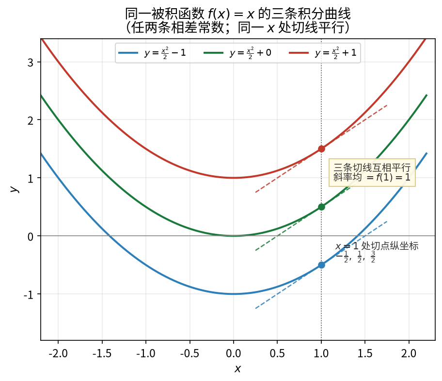
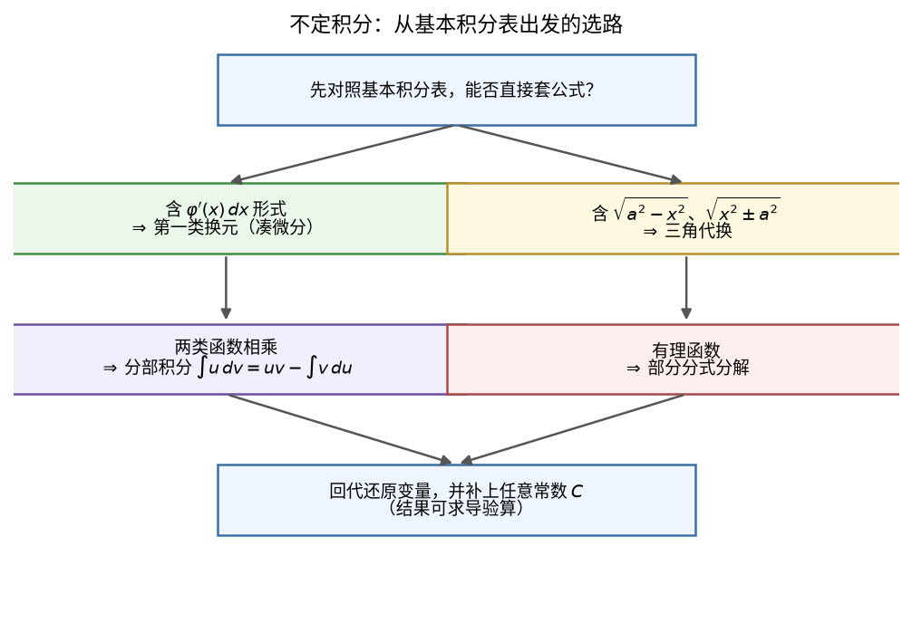
查看该图源码
flowchart TD
A["被积函数 f 与积分变量 x"] --> B{"能否查基本积分表"}
B -->|"能"| C["直接写出原函数并加任意常数 C"]
B -->|"不能"| D{"能否整体凑成复合函数与微分的乘积"}
D -->|"能"| E["第一类换元：凑微分"]
D -->|"不能"| F{"是否含根式"}
F -->|"含 a 方减 x 方等根式"| G["第二类换元：三角代换后回代"]
F -->|"不含根式"| H{"是否为两类函数相乘"}
H -->|"是"| I["分部积分：按反对幂指三选 u"]
H -->|"否"| J["有理函数：拆部分分式后逐项积分"]
C --> K["求导自检，结果补上任意常数 C"]
E --> K
G --> K
I --> K
J --> K
易错点
错在哪 · 正确是什么- 漏写任意常数 $C$，或把两个不同的常数写成同一个。 错在把不定积分当成一个函数：$\int f(x)\,\mathrm{d}x$ 是函数族，必须写 $+C$；分段函数求原函数时，两段的常数不能取成同一个，要由分段点处原函数连续解出两段常数之差。
- 凑微分时把 $\int f(ax+b)\,\mathrm{d}x$ 写成 $F(ax+b)+C$。 正确结果是 $\frac1aF(ax+b)+C$，因为 $\mathrm{d}(ax+b)=a\,\mathrm{d}x$，例如 $\int e^{2x}\,\mathrm{d}x=\frac12e^{2x}+C$ 而不是 $e^{2x}+C$。
- 第二类换元后忘记把 $t$ 回代为 $x$，或忽略代换必须单调可导。 正确做法是算完立即用 $t=\arcsin\frac xa$ 等反函数回代，并在作代换时说明 $t$ 的取值范围，保证 $x=\psi(t)$ 单调、$\psi'(t)\neq0$。
- 认为分段函数的原函数就是把两段分别积分。 错在忽略了原函数必须可导、从而必须连续：分别在两段上积分后要补一个常数修正，使左右极限相等，例如右支积出 $(x+1)\sin x+\cos x+C_2$（在 $x=0$ 处值为 $1+C_2$）时，左支的常数必须是 $C_1=1+C_2$，否则原函数在 $x=0$ 处间断。
真题示例
题干 · 解析2023 年数二第 2 题（选择题，5 分）
函数 $f(x)=\begin{cases}\dfrac{1}{\sqrt{1+x^2}},& x\leqslant 0,\\ (x+1)\cos x,& x>0\end{cases}$ 的一个原函数是（ ）
解析：
- 原函数 $F(x)$ 必须在 $(-\infty,+\infty)$ 上可导且 $F'(x)=f(x)$。
可导必连续，所以先分段积分，再在 $x=0$ 处拼接。
- 分段求原函数：$x\leqslant0$ 时
$$\int\frac{\mathrm{d}x}{\sqrt{1+x^2}}=\ln\left(x+\sqrt{1+x^2}\right)+C_1$$
$x>0$ 时
$$\int(x+1)\cos x\,\mathrm{d}x=(x+1)\sin x+\cos x+C_2$$
- 由 $x=0$ 处连续得 $\ln 1+C_1=1+C_2$，即 $C_1=1+C_2$。
取 $C_2=-1$，则 $F(0)=0$，此时
$$F(x)=\begin{cases}\ln\left(x+\sqrt{1+x^2}\right),& x\leqslant 0,\\ (x+1)\sin x+\cos x-1,& x>0.\end{cases}$$
- 检验可导。左右导数分别为
$$F'_{-}(0)=\left.\frac{1}{\sqrt{1+x^2}}\right|_{x=0}=1\qquad F'_{+}(0)=(0+1)\cos 0=1$$
两段在 $x=0$ 处光滑拼接，故 $F(x)$ 确为 $f(x)$ 的一个原函数。代入可验：
$$F(1)=2\sin1+\cos1-1\approx1.2232$$
结论：原函数在分段点必须连续，正确选项就是上面这段 $F(x)$。
定积分与反常积分 高频
考频统计
历年命题分布考察次数 5 次；涉及年份：2023、2024（2023—2024 年数二真题逐题定章统计）；分数占比约 21%；主要题型：选择、填空、解答（反常积分敛散性、变限积分）。
核心讲解
定义 · 公式 · 适用条件【定积分的定义与可积条件】
- 本质：定积分是一个确定的数，只与 $f$ 和区间 $[a,b]$ 有关，与积分变量用什么字母无关。
- 可积的必要条件：$f(x)$ 在 $[a,b]$ 上有界。
- 可积的充分条件：$f(x)$ 在 $[a,b]$ 上连续；或 $f(x)$ 在 $[a,b]$ 上有界且只有有限个间断点。
- 几何意义：$f(x)\geqslant 0$ 时等于曲边梯形面积；$f$ 变号时是面积的代数和。
【核心公式】
$$ \int_a^b f(x)\,\mathrm{d}x=\lim_{\lambda\to 0}\sum_{i=1}^{n}f(\xi_i)\Delta x_i $$
其中 $\lambda$ 是所有子区间的最大长度（不是个数）。
$$ \left|\int_a^b f(x)\,\mathrm{d}x\right|\leqslant\int_a^b|f(x)|\,\mathrm{d}x $$
⚠️ 易错点：$\lambda\to 0$ 不能写成 $n\to\infty$。分割再细，只要有一个子区间长度不趋于 $0$，黎曼和就不保证收敛。
【变限积分与牛顿-莱布尼茨公式】
变限积分 $\Phi(x)=\int_a^xf(t)\,\mathrm{d}t$ 在 $f$ 连续时可导，且 $\Phi'(x)=f(x)$。
【核心公式】
$$ \frac{\mathrm{d}}{\mathrm{d}x}\int_{\alpha(x)}^{\beta(x)}f(t)\,\mathrm{d}t=f\bigl(\beta(x)\bigr)\beta'(x)-f\bigl(\alpha(x)\bigr)\alpha'(x) $$
【适用条件】
- $f$ 连续；
- $\alpha(x)$ 与 $\beta(x)$ 都可导；
- 下限为常数时，第二项为 $0$。
牛顿-莱布尼茨公式：
$$ \int_a^bf(x)\,\mathrm{d}x=F(b)-F(a) $$
【适用条件】$f(x)$ 在 $[a,b]$ 上连续，且 $F'(x)=f(x)$ 在 $[a,b]$ 上处处成立。
⚠️ 易错点：区间含瑕点或为无穷区间时不能直接代端点，必须先按定义取极限。用牛顿-莱布尼茨硬算一个发散的反常积分，会得到一个看似正确的错误答案。
【定积分中值定理】
【适用条件】$f(x)$ 在闭区间 $[a,b]$ 上连续。
$$ \int_a^bf(x)\,\mathrm{d}x=f(\xi)(b-a),\qquad \xi\in[a,b] $$
推广形式：$f$ 在 $[a,b]$ 上连续、$g$ 在 $[a,b]$ 上可积且不变号（恒 $\geqslant 0$ 或恒 $\leqslant 0$），则
$$ \int_a^bf(x)g(x)\,\mathrm{d}x=f(\xi)\int_a^bg(x)\,\mathrm{d}x $$
⚠️ 易错点：$g$ 不变号这一条最容易漏。若 $g$ 变号，结论不成立。
【对称性与周期性】
- 偶函数（$f$ 在对称区间上可积）：$\displaystyle\int_{-a}^{a}f(x)\,\mathrm{d}x=2\int_0^{a}f(x)\,\mathrm{d}x$
- 奇函数：$\displaystyle\int_{-a}^{a}f(x)\,\mathrm{d}x=0$
- 周期函数（以 $T$ 为周期且可积）：$\displaystyle\int_a^{a+T}f(x)\,\mathrm{d}x=\int_0^{T}f(x)\,\mathrm{d}x$
⚠️ 秒杀技：先看奇偶性再算积分。对称区间上的奇函数直接写 $0$，比硬算省一半时间——但必须先确认区间关于原点对称。
【反常积分：两类与敛散性】
做题时必须先把区间内的无穷限与瑕点全部找出，再逐个讨论。
| 类型 | 定义式 | 收敛判据 | 常见错误 |
|---|---|---|---|
| 无穷限积分 | $\displaystyle\int_a^{+\infty}f\,\mathrm{d}x=\lim_{b\to+\infty}\int_a^{b}f\,\mathrm{d}x$ | 极限存在则收敛 | 忘记取极限，直接代 $+\infty$ |
| 瑕积分（$b$ 为瑕点） | $\displaystyle\int_a^{b}f\,\mathrm{d}x=\lim_{\varepsilon\to0^+}\int_a^{b-\varepsilon}f\,\mathrm{d}x$ | 极限存在则收敛 | 没先找瑕点就用牛顿-莱布尼茨 |
| $p$ 积分（无穷限） | $\displaystyle\int_1^{+\infty}\frac{\mathrm{d}x}{x^{p}}$ | $p>1$ 收敛，值为 $\dfrac{1}{p-1}$ | 记成 $p<1$ |
| $p$ 积分（瑕点） | $\displaystyle\int_0^{1}\frac{\mathrm{d}x}{x^{p}}$ | $p<1$ 收敛，值为 $\dfrac{1}{1-p}$ | 与无穷限的方向记反 |
⚠️ 易错点：两个 $p$ 积分的方向正好相反——无穷限要 $p>1$，瑕点要 $p<1$。这是最容易被记反的一对结论。
比较判别法：设 $f,g$ 在 $[a,+\infty)$ 上连续且 $0\leqslant f(x)\leqslant g(x)$。
- $\int_a^{+\infty}g$ 收敛 $\Rightarrow$ $\int_a^{+\infty}f$ 收敛；
- $\int_a^{+\infty}f$ 发散 $\Rightarrow$ $\int_a^{+\infty}g$ 发散。
极限形式：$\lim_{x\to+\infty}x^{p}f(x)=\lambda$ 时
- $0<\lambda<+\infty$：与 $\int_1^{+\infty}\frac{\mathrm{d}x}{x^{p}}$ 同敛散；
- $\lambda=0$：还需 $p>1$ 才收敛；
- $\lambda=+\infty$：$p\leqslant 1$ 时发散。
变号函数：用 $\int_a^{+\infty}|f(x)|\,\mathrm{d}x$ 收敛推出 $\int_a^{+\infty}f(x)\,\mathrm{d}x$ 收敛。
对照实例（记数值比记符号更牢）：
$$ \int_1^{+\infty}\frac{\mathrm{d}x}{x^2}=1,\qquad \int_0^1\frac{\mathrm{d}x}{\sqrt{x}}=2,\qquad \int_1^{10}\frac{\mathrm{d}x}{x}=\ln 10\approx 2.303\ (\text{上限增大仍无界}) $$
⚠️ 秒杀技：判断敛散先找主导阶。把被积函数在瑕点或无穷远处等价成 $x^{-p}$，直接套 $p$ 积分结论，不必列比较判别法的完整不等式。
关键结论速记
考前最后扫一眼- $\int_1^{+\infty}\frac{\mathrm{d}x}{x^p}$ 收敛当且仅当 $p>1$，值为 $\frac1{p-1}$ —— 无穷限情形的比较基准。
- $\int_0^1\frac{\mathrm{d}x}{x^p}$ 收敛当且仅当 $p<1$，值为 $\frac1{1-p}$ —— 瑕点在端点时的比较基准，与上式条件相反。
- $\int_2^{+\infty}\frac{\mathrm{d}x}{x(\ln x)^p}$ 收敛当且仅当 $p>1$ —— 出现对数因子时的基准，如 $\int_2^{+\infty}\frac{\mathrm{d}x}{x(\ln x)^2}=\frac1{\ln2}\approx1.443$。
- $0\leqslant f\leqslant g$ 时，大收敛推小收敛、小发散推大发散 —— 比较判别法只能朝这两个方向用。
- $\lim_{x\to+\infty}x^pf(x)=\lambda$：$0<\lambda<+\infty$ 时与 $\int_1^{+\infty}x^{-p}\mathrm{d}x$ 同敛散 —— 极限形式；$\lambda=0$ 时还必须 $p>1$ 才收敛。
- $\left(\int_a^xf(t)\,\mathrm{d}t\right)'=f(x)$（$f$ 连续） —— 变限积分把积分与求导接通，是处理“积分上限函数”的钥匙。
- $\int_a^bf(x)\,\mathrm{d}x=f(\xi)(b-a)$（$f$ 在 $[a,b]$ 上连续） —— 中值定理把积分换成“函数值乘区间长”，证明题常用。
- 偶函数在对称区间上积分为 $2\int_0^af$，奇函数积分为 $0$ —— 前提是 $f$ 在 $[-a,a]$ 上可积，先化简再计算。
示意图
几何直观与判定流程

查看该图源码
flowchart TD
A["被积函数与积分区间"] --> B{"区间是否为无穷区间"}
B -->|"是"| C["无穷限反常积分：先求原函数，再令积分上限趋于无穷"]
B -->|"否"| D{"区间内是否存在瑕点"}
D -->|"有"| E["瑕积分：以瑕点为界拆成两个极限"]
D -->|"无"| F["普通定积分：直接用牛顿莱布尼茨公式"]
C --> G{"被积函数是否非负"}
E --> G
G -->|“非负”| H["与 p 积分基准作比较"]
G -->|"变号"| I["先判断绝对收敛"]
H --> J{"极限形式中的 p 是否大于 1"}
J -->|"是且极限为正的有限数"| K["收敛"]
J -->|"否"| L["发散或改用其他方法"]
I --> M["绝对收敛则原积分收敛"]
易错点
错在哪 · 正确是什么- 把两个 $p$ 积分的条件记混。 错在认为“$p$ 大就收敛”：无穷远处要 $p>1$ 才收敛，而瑕点处要 $p<1$ 才收敛（$x\to0^+$ 时 $\frac1{x^p}$ 增长得更慢才可积），例如 $\int_1^{+\infty}\frac{\mathrm{d}x}{x^{0.5}}$ 发散而 $\int_0^1\frac{\mathrm{d}x}{x^{0.5}}=2$ 收敛。
- 对含瑕点的积分直接用牛顿-莱布尼茨公式。 错在把 $\int_{-1}^1\frac{\mathrm{d}x}{x^2}$ 算成 $\left[-\frac1x\right]{-1}^{1}=-2$：$x=0$ 是瑕点，必须拆成 $\int{-1}^0$ 与 $\int_0^1$ 两个极限，二者都发散，所以原积分发散，绝不能代端点相减。
- 用比较判别法时漏掉“非负”或“区间上处处成立”的条件。 正确用法是：只对 $f(x)\geqslant0$ 的积分作比较，不等式 $f\leqslant g$ 要在 $[a,+\infty)$（或某个 $[X,+\infty)$）上成立；变号函数先看 $\int|f|$，绝对收敛才能断言原积分收敛。
- 用定积分中值定理时不写全条件。 错在直接对含变号的 $g$ 使用 $\int fg=f(\xi)\int g$：推广形式要求 $f$ 在 $[a,b]$ 上连续、$g$ 在 $[a,b]$ 上可积且不变号，少一个条件结论就可能不成立。
真题示例
题干 · 解析2024 年数二第 7 题（选择题，5 分）
设非负函数 $f(x)$ 在 $[0,+\infty)$ 上连续，给定以下三个命题：
（1）若 $\int_0^{+\infty}f^2(x)\,\mathrm{d}x$ 收敛，则 $\int_0^{+\infty}f(x)\,\mathrm{d}x$ 收敛；
（2）若存在 $p>1$，使极限 $\lim_{x\to+\infty}x^pf(x)$ 存在，则 $\int_0^{+\infty}f(x)\,\mathrm{d}x$ 收敛；
（3）若 $\int_0^{+\infty}f(x)\,\mathrm{d}x$ 收敛，则存在 $p>1$，使极限 $\lim_{x\to+\infty}x^pf(x)$ 存在。
其中正确的个数为（ ）
A. 0 B. 1 C. 2 D. 3
解析：
- 命题（1）错：取 $f(x)=\frac{1}{x+1}$（在 $[0,+\infty)$ 上非负连续），则
$$\int_0^{+\infty}f^2(x)\,\mathrm{d}x=\int_0^{+\infty}\frac{\mathrm{d}x}{(x+1)^2}=1$$
收敛，但
$$\int_0^{+\infty}\frac{\mathrm{d}x}{x+1}$$
发散，可见 $f^2$ 收敛推不出 $f$ 收敛。
- 命题（2）对：设 $\lim_{x\to+\infty}x^pf(x)=\lambda$ 存在且 $p>1$。
若 $\lambda>0$，则 $f(x)\sim\frac{\lambda}{x^p}$，由极限形式比较判别法（$p>1$）知积分收敛；
若 $\lambda=0$，则存在 $X>0$，
当 $x>X$ 时 $x^pf(x)<1$，即
$$0\leqslant f(x)<\frac1{x^p}$$
由比较判别法知积分收敛。
- 命题（3）错：收敛推不出 $x^pf(x)$ 存在极限。
反例：令 $f$ 在每个区间 $[n,n+n^{-3}]$（$n=1,2,\cdots$）
上取值为 $1$（端点光滑过渡），其余点取 $e^{-x}$，则
$$\int_0^{+\infty}f(x)\,\mathrm{d}x\leqslant1+\sum_{n=1}^{\infty}\frac1{n^3}=1+\zeta(3)\approx2.202$$
收敛，而 $x^pf(x)$ 沿 $x=n$ 趋于 $+\infty$、
沿 $x=n+\frac12$ 趋于 $0$，极限不存在。
结论：三个命题中只有（2）正确，正确的个数为 $1$，选 B。
定积分的几何与物理应用 高频
考频统计
历年命题分布考察次数 2 次；涉及年份：2023、2024（2023—2024 年数二真题逐题定章统计）；分数占比约 9%；主要题型：选择、填空、解答（面积、体积、弧长、平均值、物理量）。
核心讲解
定义 · 公式 · 适用条件【微元法：四步框架与定限】
- 本质：把所求量 $Q$ 写成 $\int_a^b\mathrm{d}Q$，即"分割、近似、求和、取极限"四步的浓缩形式。
- 可加性：$Q$ 对区间必须可加——大区间上的量等于各小区间上量之和，这是能用定积分表示的前提。
- 微元精度：微元 $\mathrm{d}Q=f(x)\,\mathrm{d}x$ 与小区间上真实部分量之差必须是 $\mathrm{d}x$ 的高阶无穷小。
- 定限：上限必须大于下限，且微元 $\mathrm{d}Q$ 不变号（取正），否则算出的不是几何量或物理量。
- 通式：$\displaystyle Q=\int_a^b\mathrm{d}Q$，其中 $\mathrm{d}Q$ 按所求量的几何或物理意义确定。
【核心公式】
$$ Q=\int_a^b\mathrm{d}Q $$
【适用条件】
- $Q$ 对区间具有可加性；
- 微元与真实部分量之差是 $\mathrm{d}x$ 的高阶无穷小；
- 积分上限大于下限，微元不变号。
四类常见量的微元与定限对照（画图定性、按量选微元）：
| 所求量 | 微元 $\mathrm{d}Q$ | 定限方式 | 易错处 |
|---|---|---|---|
| 面积 $A$ | $[f(x)-g(x)]\,\mathrm{d}x$（上减下） | 解 $f(x)=g(x)$ 定交点，再定积分限 | 不先求交点，或全程只用一个"上减下" |
| 旋转体体积 $V_x$ | $\pi[f^2(x)-g^2(x)]\,\mathrm{d}x$（圆盘法） | 沿 $x$ 轴定限，取 $x\in[a,b]$ | 写成 $\pi\left(\int_a^bf\,\mathrm{d}x\right)^2$，先积分后平方 |
| 旋转体体积 $V_y$ | $2\pi xf(x)\,\mathrm{d}x$（柱壳法） | 沿 $x$ 轴定限，要求 $a\geqslant0$、$f(x)\geqslant0$ | 漏掉因子 $x$（壳的周长） |
| 弧长 $s$ | $\sqrt{1+y'^2}\,\mathrm{d}x$ | 沿 $x$ 定限；参数式沿 $t$ 定限 | 忘开根号，或把它写成 $\mathrm{d}x+\mathrm{d}y$ |
| 功与压力 | $F(x)\,\mathrm{d}x$；$\rho g\,y\,w(y)\,\mathrm{d}y$ | 沿位移定限；水深从水面量起 | 水深起点取错，$F$ 与位移反向时忘取负号 |
⚠️ 秒杀技：先画图求交点、再按所求量选微元、最后定限。微元选对之后上下限只是"看图写数"，真正的难点全在选微元这一步。
【平面图形的面积与旋转体体积】
- 面积：直角坐标下"上减下"，若 $f(x)\geqslant g(x)$ 在 $[a,b]$ 上成立，则 $A=\int_a^b[f(x)-g(x)]\,\mathrm{d}x$。
- $y$ 型区域：同一区域若改按 $y$ 定限，面积写成"右减左" $\int_c^d[\varphi(y)-\psi(y)]\,\mathrm{d}y$。
- 面积实例：$y=\sqrt{x}$ 与 $y=x^2$ 交于 $(0,0)$、$(1,1)$，故 $A=\int_0^1(\sqrt{x}-x^2)\,\mathrm{d}x=\frac13$。
- 代数和陷阱：曲线在区间内穿过 $x$ 轴时必须分段计算或对 $|f(x)|$ 积分，否则得到的是面积的代数和。
- 圆盘法与柱壳法：曲边梯形 $0\leqslant g(x)\leqslant f(x)$、$x\in[a,b]$ 绕 $x$ 轴旋转用 $V_x=\pi\int_a^b[f^2(x)-g^2(x)]\,\mathrm{d}x$；绕 $y$ 轴旋转用 $V_y=2\pi\int_a^bxf(x)\,\mathrm{d}x$。
- 已知截面面积：若立体在 $x$ 处垂直于 $x$ 轴的截面面积为 $A(x)$，则 $V=\int_a^bA(x)\,\mathrm{d}x$。
- 体积实例：$y=\sqrt{x}$ 与 $y=x^2$ 围成的图形绕 $x$ 轴旋转，$V_x=\pi\int_0^1(x-x^4)\,\mathrm{d}x=\frac{3\pi}{10}\approx0.9425$。
【核心公式】
$$ A=\int_a^b[f(x)-g(x)]\,\mathrm{d}x,\qquad V_x=\pi\int_a^b[f^2(x)-g^2(x)]\,\mathrm{d}x,\qquad V_y=2\pi\int_a^bxf(x)\,\mathrm{d}x $$
$$ V=\int_a^bA(x)\,\mathrm{d}x $$
【适用条件】
- 面积公式要求 $f(x)$ 与 $g(x)$ 在 $[a,b]$ 上连续且 $f(x)\geqslant g(x)$；
- 计算前必须先解 $f(x)=g(x)$ 求出交点，并由交点确定积分限；
- 柱壳法要求 $a\geqslant0$、$f(x)\geqslant0$（否则 $2\pi xf(x)$ 变号，"壳"失去意义）；
- 圆盘法要求外层曲线 $f$ 与内层曲线 $g$ 满足 $0\leqslant g(x)\leqslant f(x)$；
- 曲线在区间内变号时必须分段计算或改用 $|f(x)|$。
两条路线的选择对照：
| 情形 | 选法 | 公式 | 前提 |
|---|---|---|---|
| 图形绕 $x$ 轴旋转 | 圆盘法（切片） | $V_x=\pi\int_a^b[f^2(x)-g^2(x)]\,\mathrm{d}x$ | 半径沿 $x$ 方向可读出 |
| 图形绕 $y$ 轴旋转 | 柱壳法 | $V_y=2\pi\int_a^bxf(x)\,\mathrm{d}x$ | $a\geqslant0$、$f(x)\geqslant0$ |
| 截面面积已知 | 切片法 | $V=\int_a^bA(x)\,\mathrm{d}x$ | $A(x)$ 在 $[a,b]$ 上连续 |
⚠️ 易错点：柱壳法漏掉因子 $x$ 是最高频失分点。$2\pi x$ 是壳的周长、$f(x)$ 是壳的高、$\mathrm{d}x$ 是厚度，三项缺一不可；另外 $\pi\left(\int_a^bf(x)\,\mathrm{d}x\right)^2$ 是错的，正确写法是 $\pi\int_a^bf^2(x)\,\mathrm{d}x$——先平方再积分。
【弧长、极坐标面积与平均值】
- 直角坐标弧长：$y=y(x)$ 在 $[a,b]$ 上有一阶连续导数时，$s=\int_a^b\sqrt{1+y'^2}\,\mathrm{d}x$。
- 参数方程弧长：曲线由 $x=x(t),y=y(t)$（$\alpha\leqslant t\leqslant\beta$）给出且 $x'(t),y'(t)$ 连续、不同时为零时，$s=\int_\alpha^\beta\sqrt{x'^2(t)+y'^2(t)}\,\mathrm{d}t$。
- 实例：上半圆 $y=\sqrt{1-x^2}$ 在 $[-1,1]$ 上的弧长为 $\pi$。
- 极坐标曲边扇形：由 $r=r(\theta)$、$\theta\in[\alpha,\beta]$ 围成时，$A=\frac12\int_\alpha^\beta r^2(\theta)\,\mathrm{d}\theta$。
- 平均值：连续函数 $f$ 在 $[a,b]$ 上的平均值是 $\bar y=\frac1{b-a}\int_a^bf(x)\,\mathrm{d}x$，即"总量除以区间长度"。
- 平均值实例：$v(t)=t+k\sin\pi t$ 在 $[0,3]$ 上的平均速度是 $\frac13\int_0^3v(t)\,\mathrm{d}t$，不是 $\frac{v(0)+v(3)}{2}$。
【核心公式】
$$ s=\int_a^b\sqrt{1+y'^2}\,\mathrm{d}x,\qquad s=\int_\alpha^\beta\sqrt{x'^2(t)+y'^2(t)}\,\mathrm{d}t $$
$$ A=\frac12\int_\alpha^\beta r^2(\theta)\,\mathrm{d}\theta,\qquad \bar y=\frac1{b-a}\int_a^bf(x)\,\mathrm{d}x $$
【适用条件】
- 弧长公式要求 $y(x)$ 在 $[a,b]$ 上有一阶连续导数；
- 参数式弧长要求 $x'(t)$ 与 $y'(t)$ 连续且不同时为零（否则曲线出现尖点或静止点）；
- 极坐标面积公式要求 $r(\theta)$ 在 $[\alpha,\beta]$ 上连续，且 $\alpha<\beta$；
- 平均值公式要求 $f$ 在 $[a,b]$ 上连续（可积），且 $a\neq b$。
⚠️ 秒杀技：平均值的分母是区间长度不是取样个数。填空题里凡出现"平均速度""平均浓度"，一律写成 $\frac1{b-a}\int_a^b(\cdot)\,\mathrm{d}x$，比逐段求算术平均稳得多。
【物理应用：变力做功、水压力与形心】
- 变力做功：$W=\int_a^bF(x)\,\mathrm{d}x$，其中 $F$ 取位移方向为正。
- 水压力：$P=\int_0^h\rho g\,y\,w(y)\,\mathrm{d}y$，其中 $y$ 是水深（水面取 $0$、向下为正），$w(y)$ 是该深度处平板的宽度，$\rho$ 是水的密度，$g$ 是重力加速度。
- 水压力实例：斜边长为 $2a$ 的等腰直角三角形平板铅直放入水中、斜边与水面相齐，深度 $y$ 处宽度为 $w(y)=2(a-y)$，故 $P=2\rho g\int_0^a y(a-y)\,\mathrm{d}y=\frac13\rho ga^3$。
- 形心横坐标：均匀薄片可用 $\bar x=\frac{\int_a^bx f(x)\,\mathrm{d}x}{\int_a^bf(x)\,\mathrm{d}x}$ 求。
- 形心纵坐标：$\bar y=\frac{\frac12\int_a^bf^2(x)\,\mathrm{d}x}{\int_a^bf(x)\,\mathrm{d}x}$，对应 $f(x)\geqslant0$ 时曲线与 $x$ 轴所夹的曲边梯形。
- 列式套路：微元乘以力臂即得矩微元，分子是矩、分母是总量（面积）。
【核心公式】
$$ W=\int_a^bF(x)\,\mathrm{d}x,\qquad P=\int_0^h\rho g\,y\,w(y)\,\mathrm{d}y,\qquad \bar x=\frac{\int_a^bx f(x)\,\mathrm{d}x}{\int_a^bf(x)\,\mathrm{d}x},\qquad \bar y=\frac{\frac12\int_a^bf^2(x)\,\mathrm{d}x}{\int_a^bf(x)\,\mathrm{d}x} $$
【适用条件】
- 做功要求 $F(x)$ 在位移区间上连续，且 $F$ 与位移同向时取正、反向时取负；
- 水压力要求平板铅直置于液体中，$y$ 一律从水面量起、向下为正；
- $w(y)$ 是该深度处平板的水平宽度，必须由几何关系先求出；
- 形心公式要求 $f(x)$ 在 $[a,b]$ 上连续且 $f(x)\geqslant0$，分母 $\int_a^bf(x)\,\mathrm{d}x$ 不为 0。
⚠️ 易错点：水压力公式里 $y$ 是水深而不是坐标值，水深一律从水面量起；宽度函数 $w(y)$ 写错（例如把三角形斜边当成竖直边）会让结果整体差一个系数，列式前先在图上标出 $y$ 与 $w(y)$ 的关系。
关键结论速记
考前最后扫一眼- $A=\int_a^b[f(x)-g(x)]\,\mathrm{d}x$（$f\geqslant g$ 于 $[a,b]$） —— 面积永远“上减下”，与 $x$ 轴的位置无关。
- $V_x=\pi\int_a^b[f^2(x)-g^2(x)]\,\mathrm{d}x$ —— 绕 $x$ 轴旋转用圆盘法，微元是圆环面积 $\pi(f^2-g^2)\,\mathrm{d}x$。
- $V_y=2\pi\int_a^bxf(x)\,\mathrm{d}x$ —— 绕 $y$ 轴旋转用柱壳法，$2\pi x$ 是壳的周长，$f(x)$ 是高，$\mathrm{d}x$ 是厚度。
- $s=\int_a^b\sqrt{1+y'^2}\,\mathrm{d}x=\int_\alpha^\beta\sqrt{x'^2+y'^2}\,\mathrm{d}t$ —— 弧长微元 $\mathrm{d}s=\sqrt{\mathrm{d}x^2+\mathrm{d}y^2}$，两种写法同源。
- $\bar y=\frac1{b-a}\int_a^bf(x)\,\mathrm{d}x$ —— 平均值是“总量除以区间长度”，不是两端点的算术平均。
- $P=\int_0^h\rho g\,y\,w(y)\,\mathrm{d}y$ —— 水压力微元等于压强 $\rho gy$ 乘面积微元 $w(y)\,\mathrm{d}y$，水深一律从水面量起。
- $W=\int_a^bF(x)\,\mathrm{d}x$ —— 变力做功；$F(x)$ 与位移方向相反时取负号。
示意图
几何直观与判定流程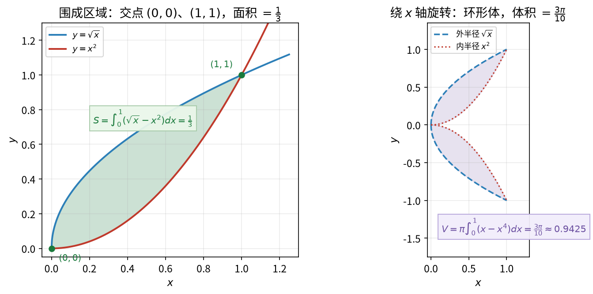
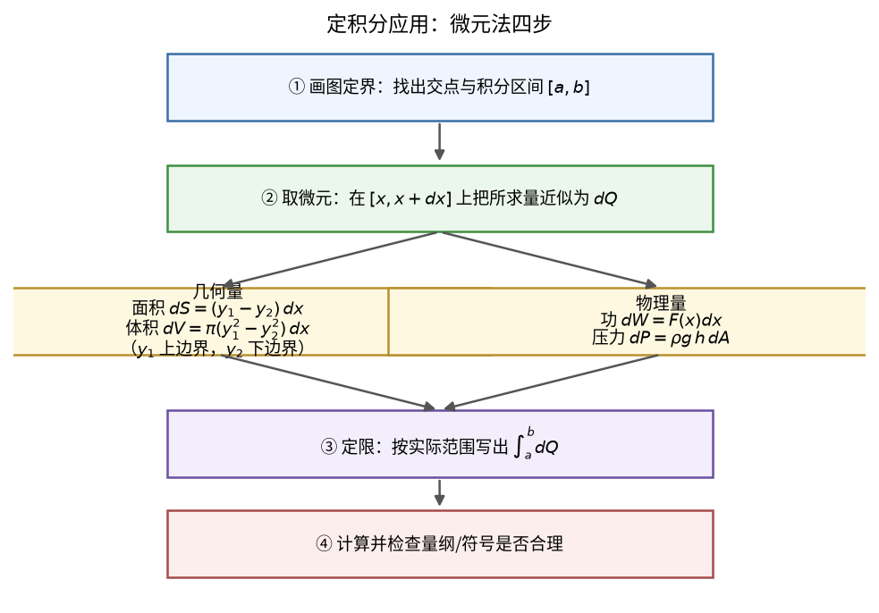
查看该图源码
flowchart TD
A["几何或物理应用问题"] --> B["画图：求交点，确定区域与边界"]
B --> C{"所求的是什么量"}
C -->|"面积"| D["取微元 dA 等于上减下乘 dx"]
C -->|"旋转体体积"| E["圆盘法取 pi 乘 y 方乘 dx，或柱壳法取 2 pi x y dx"]
C -->|"弧长"| F["取 ds 等于根号下 1 加 y 导数平方再乘 dx"]
C -->|"平均值"| G["先积分，再除以区间长度"]
C -->|"功、压力、形心"| H["按物理公式写微元，如压力取 rho g y w dy"]
D --> I["定限：上限大于下限，微元非负"]
E --> I
F --> I
G --> I
H --> I
I --> J["算出结果，检验量纲与对称性"]
易错点
错在哪 · 正确是什么- 求面积时不先求交点、不判断上下关系。 错在把两条曲线围成的面积写成 $\int_a^b[f(x)+g(x)]\,\mathrm{d}x$，或全程只用同一个“上减下”；正确做法是先解 $f(x)=g(x)$ 定出积分限，再逐段确认谁在上，用 $\int(\text{上}-\text{下})\,\mathrm{d}x$。
- 把旋转体体积写成 $\pi\left(\int_a^bf(x)\,\mathrm{d}x\right)^2$，或漏掉内圈。 正确是 $V_x=\pi\int_a^bf^2(x)\,\mathrm{d}x$，先平方后积分；两条曲线围成的图形绕 $x$ 轴旋转时，微元是圆环面积 $\pi[f^2(x)-g^2(x)]\,\mathrm{d}x$。
- 用柱壳法求 $V_y$ 时漏掉因子 $x$。 正确是 $V_y=2\pi\int_a^bxf(x)\,\mathrm{d}x$：$2\pi x$ 是壳的周长、$f(x)$ 是壳的高、$\mathrm{d}x$ 是厚度，三项缺一不可。
- 把平均值当成两端点的算术平均。 正确是 $\bar y=\frac1{b-a}\int_a^bf(x)\,\mathrm{d}x$，例如 $v(t)=t+k\sin\pi t$ 在 $[0,3]$ 上的平均速度是 $\frac13\int_0^3v(t)\,\mathrm{d}t$，而不是 $\frac{v(0)+v(3)}{2}$。
真题示例
题干 · 解析2024 年数二第 15 题（填空题，5 分）
某物体以速度 $v(t)=t+k\sin\pi t$ 做直线运动，若它从 $t=0$ 到 $t=3$ 的时间段内平均速度是 $\frac52$，则 $k=$ ________。
解析：
平均速度是速度函数在时间区间上的平均值：$\bar v=\frac1{3-0}\int_0^3v(t)\,\mathrm{d}t$。
计算积分：$\int_0^3\left(t+k\sin\pi t\right)\mathrm{d}t=\left[\frac{t^2}{2}-\frac{k}{\pi}\cos\pi t\right]_0^3=\frac92+\frac{2k}{\pi}$。
由 $\frac13\left(\frac92+\frac{2k}{\pi}\right)=\frac52$ 得 $\frac{2k}{3\pi}=1$，故 $k=\frac{3\pi}{2}\approx4.712$。
结论：$k=\frac{3\pi}{2}$；此时总位移为 $\int_0^3v(t)\,\mathrm{d}t=\frac{15}{2}$，平均速度恰为 $\frac52$。
微分方程 高频
考频统计
历年命题分布考察次数 3 次；涉及年份：2023、2024（2023—2024 年数二真题逐题定章统计）；分数占比约 8%；主要题型：选择、填空、解答（一阶与二阶常系数、几何应用）。
核心讲解
定义 · 公式 · 适用条件【一阶微分方程：三种类型与通解】
- 可分离变量方程：形如 $\frac{dy}{dx}=f(x)g(y)$，把两个变量分到等号两侧后分别积分。
- 齐次方程：形如 $\frac{dy}{dx}=\varphi\left(\frac{y}{x}\right)$，令 $u=\frac{y}{x}$（即 $y=ux$、$y'=u+xu'$）后化为可分离变量方程。
- 一阶线性方程：形如 $y'+P(x)y=Q(x)$，通解由公式直接给出。
- 准齐次型：凡形如 $y'=f(ax+by+c)$ 的方程，令 $u=ax+by+c$ 即可化为可分离变量方程。
- 定常数：求出通解后必须用初始条件定出 $C$；初始条件里含 $y'$ 的要先求导再代入。
- 判类型优先：拿到方程先判类型再套公式，比硬凑积分快得多。
【核心公式】
$$ y=e^{-\int P(x)\,dx}\left(\int Q(x)e^{\int P(x)\,dx}\,dx+C\right) $$
$$ \frac{dy}{dx}=f(x)g(y)\ \Longrightarrow\ \frac{dy}{g(y)}=f(x)\,dx,\qquad \frac{dy}{dx}=\varphi\left(\frac{y}{x}\right)\ \xrightarrow{\ u=y/x\ }\ u+xu'=\varphi(u) $$
【适用条件】
- $P(x)$、$Q(x)$ 在求解区间上连续；
- 方程已写成 $y'$ 的系数为 $1$ 的标准形 $y'+P(x)y=Q(x)$；
- 可分离变量在分离前先检查 $g(y)=0$ 是否给出常数解；
- 齐次方程要求右端只含 $\frac{y}{x}$ 的组合；
- 求出通解后必须用初始条件定出 $C$。
⚠️ 易错点：没化成标准形就套通解公式。例如 $xy'+y=x^2$ 必须先除以 $x$ 写成 $y'+\frac{1}{x}y=x$，此时 $P(x)=\frac{1}{x}$；直接用原式的系数当 $P$ 会取错，算 $\int P\,dx$ 时也只需在最后写一个常数 $C$。
【可降阶的高阶方程（三种标准形）】
- $y''=f(x)$ 型：右端只含 $x$，连续积分两次即可。
- $y''=f(x,y')$ 型：方程中不出现 $y$，令 $p=y'$，化为关于 $p$ 的一阶方程 $p'=f(x,p)$。
- $y''=f(y,y')$ 型：方程中不出现 $x$，仍令 $p=y'$，但必须把 $p$ 看成 $y$ 的函数。
- 关键替换：缺 $x$ 型要用 $y''=p\frac{dp}{dy}$ 代入，这一步写错整个方程就解不下去。
- 通解常数个数：二阶方程的通解含两个任意常数，缺一个就说明积分漏了一次。
【核心公式】
$$ y''=f(x)\ \Longrightarrow\ y'=\int f(x)\,dx+C_1,\qquad y''=f(x,y')\ \xrightarrow{\ p=y'\ }\ p'=f(x,p),\qquad y''=f(y,y')\ \xrightarrow{\ p=y',\ y''=p\frac{dp}{dy}}\ p\frac{dp}{dy}=f(y,p) $$
【适用条件】
- 只有上述三种标准形可以直接降阶，其它高阶方程先尝试别的办法；
- 缺 $x$ 型必须把 $p$ 视为 $y$ 的函数，不能把 $y''$ 写成 $p'$；
- 每积分一次补一个任意常数，二阶方程最后应有两个任意常数。
⚠️ 易错点：解 $y''=f(y,y')$ 时把 $y''$ 写成 $p'$，等于凭空多出一个自变量 $x$，方程无法求解；正确写法是 $y''=p\frac{dp}{dy}$，其中 $p$ 是 $y$ 的函数。
【二阶常系数齐次线性方程：特征根三种情形】
- 特征方程：由 $y''+py'+qy=0$ 写出 $\lambda^2+p\lambda+q=0$，解出两个特征根。
- 相异实根：通解由两个指数项相加。
- 二重实根：通解在指数项前乘一次多项式，即在 $e^{\lambda x}$ 之外补一个 $x$。
- 共轭复根：通解是指数因子 $e^{\alpha x}$ 乘三角函数的组合。
- 先看判别式：$p^2-4q$ 的符号直接决定走哪一支，写通解前先算它。
【核心公式】
$$ \lambda^2+p\lambda+q=0 $$
| 特征根情形 | 通解形式 | 记忆要点 |
|---|---|---|
| 相异实根 $\lambda_1\neq\lambda_2$ | $y=C_1e^{\lambda_1x}+C_2e^{\lambda_2x}$ | 两个根各配一个指数项 |
| 二重实根 $\lambda_1=\lambda_2=\lambda$ | $y=(C_1+C_2x)e^{\lambda x}$ | 重根要补一个 $x$ |
| 共轭复根 $\alpha\pm\beta i$ | $y=e^{\alpha x}(C_1\cos\beta x+C_2\sin\beta x)$ | 实部进指数、虚部进三角 |
【适用条件】
- 方程必须是常系数且右端为 $0$ 的齐次线性方程；
- $p$、$q$ 为实常数，特征方程是二次方程，必有两个根（含重根）；
- 复根情形中 $\alpha$ 是实部、$\beta$ 是虚部且 $\beta\neq0$；
- 通解必须出现两个任意常数 $C_1$、$C_2$，其中 $C_1,C_2$ 为任意常数。
⚠️ 易错点：二重根情形写成 $C_1e^{\lambda x}+C_2e^{\lambda x}$ 等于只有一个任意常数，通解必须补上因子 $x$，写成 $(C_1+C_2x)e^{\lambda x}$。
【二阶常系数非齐次线性方程：特解设法】
- 通解结构：$y''+py'+qy=f(x)$ 的通解是 $y=Y+y^*$，其中 $Y$ 是相应齐次方程的通解、$y^*$ 是原方程的一个特解。
- 自由项为指数型：$f(x)=P_m(x)e^{\lambda x}$ 时设 $y^*=x^{k}Q_m(x)e^{\lambda x}$，$Q_m$ 是与 $P_m$ 同次的多项式。
- 重数决定 $k$：$k$ 取 $\lambda$ 作为特征根的重数——不是特征根取 $k=0$，是单根取 $k=1$，是二重根取 $k=2$。
- 自由项为三角型：$f(x)=e^{\alpha x}\left[P_l(x)\cos\beta x+Q_n(x)\sin\beta x\right]$ 时设 $y^*=x^{k}e^{\alpha x}\left[R_m(x)\cos\beta x+S_m(x)\sin\beta x\right]$。
- 次数取大：三角型中 $m=\max\{l,n\}$，$R_m$ 与 $S_m$ 都是 $m$ 次多项式且系数待定。
- 叠加原理：自由项是几项之和时分别求特解再相加。
【核心公式】
$$ y=Y+y^* $$
$$ f(x)=P_m(x)e^{\lambda x}\ \Longrightarrow\ y^*=x^{k}Q_m(x)e^{\lambda x},\qquad f(x)=e^{\alpha x}\left[P_l(x)\cos\beta x+Q_n(x)\sin\beta x\right]\ \Longrightarrow\ y^*=x^{k}e^{\alpha x}\left[R_m(x)\cos\beta x+S_m(x)\sin\beta x\right] $$
| 自由项类型 | 特解设法 | $k$ 的取法 | 典型错误 |
|---|---|---|---|
| $P_m(x)e^{\lambda x}$ | $y^*=x^{k}Q_m(x)e^{\lambda x}$ | $\lambda$ 作为特征根的重数（$0,1,2$） | $y''-y=e^{x}$ 中 $\lambda=1$ 是单根却设 $Ae^{x}$，应设 $Axe^{x}$ |
| $e^{\alpha x}\left[P_l\cos\beta x+Q_n\sin\beta x\right]$ | $y^*=x^{k}e^{\alpha x}\left[R_m\cos\beta x+S_m\sin\beta x\right]$ | $\alpha\pm\beta i$ 是特征根取 $k=1$，不是取 $k=0$ | 只设 $\cos$ 项不设 $\sin$ 项，或误取 $m=\min\{l,n\}$ |
【适用条件】
- $p$、$q$ 为实常数，右端 $f(x)$ 属于上表两种可设型；
- $Q_m(x)$ 与 $P_m(x)$ 同次，$R_m$、$S_m$ 的次数 $m=\max\{l,n\}$；
- 指数型的 $k$ 由 $\lambda$ 与特征根的关系定，三角型的 $k$ 由 $\alpha\pm\beta i$ 是否为特征根决定；
- 求出 $y^*$ 后必须代回原方程比较系数，定出全部待定系数；
- 通解必须写全 $Y+y^*$，缺一项都不完整。
⚠️ 易错点：非齐次方程只写 $Y$ 或只写 $y^*$ 都不对，通解必须是 $Y+y^*$；自由项的 $\lambda$ 恰是特征根时特解必须乘 $x^{k}$，例如 $y''-y=e^{x}$ 中 $\lambda=1$ 是单根，应设 $Axe^{x}$ 而不是 $Ae^{x}$。
【几何与物理应用：把题面翻译成方程】
- 切线斜率：题面给出某点切线斜率就等价于给出 $y'$。
- 坐标轴截距：切线在 $y$ 轴上的截距是 $y-xy'$，在 $x$ 轴上的截距是 $x-\frac{y}{y'}$。
- 列式套路：设所求曲线为 $y=y(x)$，把题面中关于切线斜率、截距、面积、旋转体体积、速度的每一句话翻译成含 $y'$ 或含变限积分的等式，再化成微分方程求解。
- 变限积分条件：由 $\int_0^xf(t)\,dt=g(x)$ 定义的条件两边对 $x$ 求导即得 $f(x)=g'(x)$。
- 隐含初始条件：题中未直接给出的初始条件往往藏在积分下限处，即 $x=0$ 时 $g(0)=0$。
- 回代定常数：解出含 $C$ 的通解后必须代回定出 $C$，否则答案不唯一。
【核心公式】
$$ b_y=y-xy',\qquad b_x=x-\frac{y}{y'},\qquad \int_0^xf(t)\,dt=g(x)\ \Longrightarrow\ f(x)=g'(x) $$
【适用条件】
- 求截距时要求 $y'$ 不为 0（切线不与坐标轴平行）；
- 变限积分上限是变量，求导前先确认被积函数对 $t$ 连续；
- 列式前先设 $y=y(x)$，把题面每一句话都翻译成含 $y'$ 或含变限积分的等式；
- 曲线过某点、某时刻的位移与速度都是初始条件，最后必须代回定出 $C$。
⚠️ 秒杀技：几何应用题的翻译只需抓住两句话——截距就是"切线方程里令另一个坐标为 $0$"，条件里有变限积分就两边对 $x$ 求导。翻译成等式之后再判类型，比边翻译边解方程稳。
关键结论速记
考前最后扫一眼一阶线性通解—— $y=e^{-\int P\,dx}\left(\int Qe^{\int P\,dx}dx+C\right)$。使用前必须把 $y'$ 的系数化成 $1$，否则 $P$ 会取错。可分离变量—— $\frac{dy}{dx}=f(x)g(y)$ 分离为 $\frac{dy}{g(y)}=f(x)\,dx$ 后两边积分；积分前先单独检查 $g(y)=0$ 是否给出被丢掉的常数解。齐次方程—— $\frac{dy}{dx}=\varphi\left(\frac{y}{x}\right)$ 令 $u=\frac{y}{x}$，得 $u+xu'=\varphi(u)$，分离变量解出 $u$ 后回代。特征方程—— $\lambda^2+p\lambda+q=0$。相异实根 $\Rightarrow C_1e^{\lambda_1x}+C_2e^{\lambda_2x}$；二重根 $\Rightarrow (C_1+C_2x)e^{\lambda x}$；共轭复根 $\alpha\pm\beta i\Rightarrow e^{\alpha x}(C_1\cos\beta x+C_2\sin\beta x)$。非齐次通解—— $y=Y+y^*$。特解形式必须乘 $x^{k}$，$k$ 等于自由项中的 $\lambda$（或 $\alpha\pm\beta i$）作为特征根的重数。缺 x 型降阶—— $y''=f(y,y')$ 令 $p=y'$，并用 $y''=p\frac{dp}{dy}$；若写成 $y''=p'$ 就凭空多出一个自变量，方程无法求解。几何应用—— 切线在 $y$ 轴上的截距是 $y-xy'$，在 $x$ 轴上的截距是 $x-\frac{y}{y'}$；把题给的等量关系写成这类式子即可列出方程。
示意图
几何直观与判定流程图 1 画的是方程 $y'+y=x$ 的解曲线族 $y=x-1+Ce^{-x}$：四条曲线分别取 $C=-1,0,1,2$，其中 $C=1$ 的那条是过点 $(0,0)$ 的特解，它在 $x=1$ 处取值为 $e^{-1}\approx0.3679$；直线 $y=x-1$（图中虚线，即 $C=0$ 的解）是全部解曲线的斜渐近线，任何一条解曲线与它的竖直距离都是 $Ce^{-x}$，当 $x\to+\infty$ 时趋于 $0$ 但永不等于 $0$。
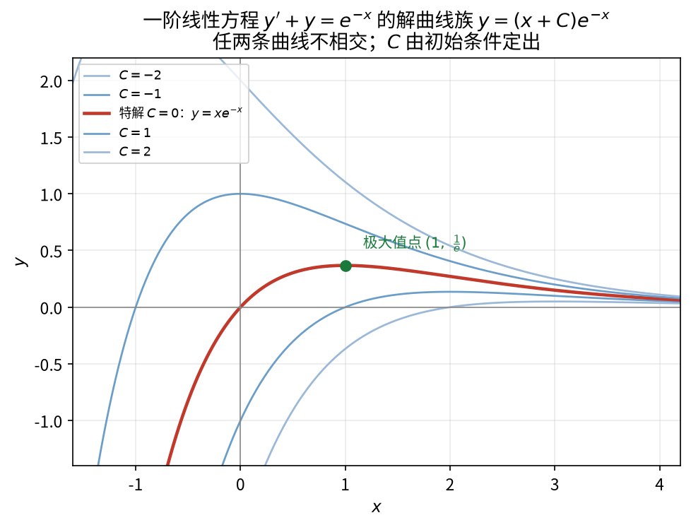
图 2 是拿到方程后判定类型、选择解法的流程。
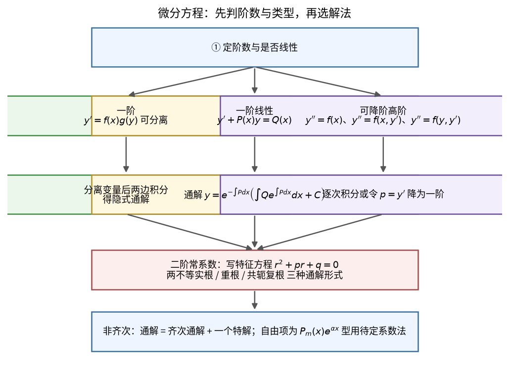
查看该图源码
flowchart TD
A["给出一个微分方程"] --> B{"能把 y 与 x 分到等号两边吗"}
B -->|"能"| C["可分离变量 两边积分并检查常数解"]
B -->|"不能"| D{"右端只含 y 比 x 的组合吗"}
D -->|"能"| E["齐次方程 令 u = y 比 x"]
D -->|"不能"| F{"能写成 y' + P(x)y = Q(x) 吗"}
F -->|"能"| G["一阶线性 套通解公式"]
F -->|"不能"| H{"是二阶常系数吗"}
H -->|"是"| I["写特征方程 定通解"]
H -->|"否"| J["看能否降阶 令 p = y'"]
易错点
错在哪 · 正确是什么- 错在解可分离变量方程时直接除以 $g(y)$，漏掉常数解。 正确做法是先检查 $g(y)=0$：若 $g(y_0)=0$，则 $y\equiv y_0$ 也是解，它常常在通解中取不到（因为解出通解时除以了 $g(y)$）。
- 错在没把方程化成标准形就用通解公式。 例如 $xy'+y=x^2$ 必须先除以 $x$ 写成 $y'+\frac{1}{x}y=x$，此时 $P=\frac{1}{x}$；若直接用原式的 $P$ 就取错了。另外算 $\int P\,dx$ 时不要漏掉积分常数以外的化简，$C$ 只需在最后写一个。
- 错在非齐次方程只写 $Y$ 或只写 $y^*$。 通解必须是 $Y+y^*$；当自由项的 $\lambda$ 恰是特征根时，特解必须乘 $x^{k}$——例如 $y''-y=e^{x}$ 中 $\lambda=1$ 是单根，应设 $Axe^{x}$ 而不是 $Ae^{x}$。
- 错在几何应用题里丢掉初始条件或单位。 曲线过某点、某时刻的位移与速度都是初始条件，列式时先设 $y=y(x)$ 再翻译题面；解出含 $C$ 的通解后必须代回定出 $C$，否则答案不唯一。
真题示例
题干 · 解析2024 年数二第 13 题（填空题，5 分）
微分方程 $y'=\dfrac{1}{(x+y)^2}$ 满足 $y(1)=0$ 的解为 ______。
解析：
- 方程右端只依赖 $x+y$，属 $y'=f(ax+by+c)$ 型。
令 $u=x+y$，则 $y=u-x$、$y'=u'-1$，方程化为
$$u'-1=\frac{1}{u^2}$$
即
$$\frac{du}{dx}=\frac{u^2+1}{u^2}$$
- 分离变量得
$$\frac{u^2}{u^2+1}\,du=dx$$
两边积分（左边拆项为 $1-\frac{1}{u^2+1}$）得 $u-\arctan u=x+C$。
- 回代 $u=x+y$，得隐式通解 $y=\arctan(x+y)+C$。
代入 $x=1,y=0$（此时 $u=1$）得
$$1-\frac{\pi}{4}=1+C$$
故 $C=-\frac{\pi}{4}$。
- 结论：所求特解为 $\displaystyle y=\arctan(x+y)-\frac{\pi}{4}$（隐式解），也可写成等价形式 $\tan\left(y+\frac{\pi}{4}\right)=x+y$。
验证：对 $y=\arctan(x+y)-\frac{\pi}{4}$ 两边求导得
$$y'=\frac{1+y'}{1+(x+y)^2}$$
整理即
$$y'=\frac{1}{(x+y)^2}$$
且 $x=1,y=0$ 时 $\arctan(1)-\frac{\pi}{4}=0$，初始条件成立。
数二高数综合与证明专题 常规
考频统计
历年命题分布考察次数 考频待补充；涉及年份：综合性专题，不单独命题；分数占比约 0%；主要题型：跨章综合题与中值定理证明题的解题框架。
核心讲解
定义 · 公式 · 适用条件【综合题的三步框架】
- 第一步 逐句翻译：把几何语言（切线、截距、面积、旋转体）换成含 $y'$ 或变限积分的等式，把"某点处取得最值"换成 $f'=0$。
- 第二步 定工具：见到变限积分就求导，见到数列极限就用单调有界准则或夹逼准则，见到被积函数含 $x^2+y^2$ 就换极坐标，见到证明题就找中值定理。
- 第三步 回头验条件：把用到的定理前提（连续、可导、$F_z\neq0$、区间开闭）逐条对照。
- 两段式结构：数二的跨章综合题基本是"先由题给条件求出某个函数，再拿这个函数去算极限、极值、面积或积分"。
- 求函数的手段：解微分方程、由变限积分求导、由几何条件列式。
- 失分位置：综合题的失分多数不在计算，而在第二步选错工具或第三步漏验条件。
【核心公式】
$$ \text{题给条件}\ \Longrightarrow\ y=y(x)\ \text{或}\ F(x)\ \Longrightarrow\ \lim,\ \text{极值},\ \int_a^bf\,\mathrm{d}x $$
【适用条件】
- 每一步翻译都必须可逆，题面中的量要与式子中的量一一对应；
- 用中值定理前逐条核对连续与可导的区间要求；
- 隐函数相关结论要求 $F_z\neq0$，变限积分求导要求被积函数连续；
- 最后一步必须把结论代回原题的几何或物理背景检验量纲与符号。
⚠️ 秒杀技：拿到综合题先问一句"题目要我求的那个函数从哪来"——条件里给什么就翻译什么，函数一旦求出，后面的极限、极值、面积都是常规题。
【中值定理与辅助函数构造】
- 总原则：把待证结论整理成"某个函数在 $\xi$ 处导数为 $0$"，再对这个函数用罗尔定理。
- 待证式形如 $f'(\xi)+g(\xi)f(\xi)=0$ 时，取辅助函数 $F(x)=e^{\int g(x)\,dx}f(x)$。
- 等价性：由于指数因子恒正，$F'(\xi)=0$ 与待证式完全等价。
- 思想来源：这就是"把一阶线性方程 $f'+gf=0$ 的积分因子乘上去"的想法。
- 含 $\xi$ 因子：结论中出现 $f(\xi)$ 与 $f'(\xi)$ 之外还要出现 $\xi$ 本身时，先把含 $\xi$ 的因子并进 $g(\xi)$ 或并进 $\frac{1}{\varphi'(\xi)}$（柯西中值定理的分母），不要硬套罗尔定理。
【核心公式】
$$ F(x)=e^{\int g(x)\,dx}f(x),\qquad F'(x)=e^{\int g(x)\,dx}\left[f'(x)+g(x)f(x)\right] $$
常用辅助函数对照（按待证结论的形状直接取用）：
| 待证结论的形状 | 取的辅助函数 $F(x)$ | 对应的积分因子 |
|---|---|---|
| $f'+f=0$ | $e^{x}f(x)$ | $e^{\int 1\,dx}=e^{x}$ |
| $f'-f=0$ | $e^{-x}f(x)$ | $e^{\int(-1)\,dx}=e^{-x}$ |
| $f'+\frac{1}{x}f=0$ | $xf(x)$ | $e^{\int\frac{1}{x}dx}=x$ |
| $f'-\frac{1}{x}f=0$ | $\frac{f(x)}{x}$ | $e^{\int\left(-\frac{1}{x}\right)dx}=\frac{1}{x}$ |
| $f'+\xi f=0$ | $e^{\frac{x^2}{2}}f(x)$ | $e^{\int x\,dx}=e^{\frac{x^2}{2}}$ |
【适用条件】
- 辅助函数必须在 $[a,b]$ 上连续、在 $(a,b)$ 内可导；
- 指数因子恒正，不改变零点位置，但少了它推不出结论；
- 使用罗尔定理前必须先凑出 $F(a)=F(b)$ 两个等值点；
- 结论里多出的因子要靠 $g(\xi)$ 或柯西中值定理的分母吸收，凑形在先、选定理在后。
⚠️ 易错点：构造辅助函数时漏掉积分因子 $e^{\int g\,dx}$。结论含 $f'(\xi)+g(\xi)f(\xi)=0$ 时直接取 $F=f$ 得不到要证的形式，必须乘上这个恒正的指数因子。
【中值定理的选择与多中值点处理】
- 罗尔定理：结论能整理成"某函数在两个等值点处函数值相等"时用，得到 $f'(\xi)=0$。
- 拉格朗日中值定理：结论含函数差 $f(b)-f(a)$、$b-a$ 或 $|f(x)-f(y)|$ 时用。
- 柯西中值定理：结论里带 $\xi^2$、$b-a$、$e^{\xi}$ 这类因子时，把待证式整理成 $\frac{f(b)-f(a)}{g(b)-g(a)}=\frac{f'(\xi)}{g'(\xi)}$ 的形状，取 $g(x)=x^2$、$e^x$ 等作分母函数。
- 泰勒公式：条件里出现 $|f''(x)|\le M$ 这类整体界时用。
- 两个中值点：把 $[a,b]$ 分成两段，在每段上分别用拉格朗日（或罗尔）中值定理，得到两个互不相同的中值点。
- 凑形原则：让分母函数的导数正好是结论里多出来的那个因子。
【核心公式】
$$ f(b)-f(a)=f'(\xi)(b-a),\qquad \frac{f(b)-f(a)}{g(b)-g(a)}=\frac{f'(\xi)}{g'(\xi)} $$
| 待证结论的形状 | 选择定理 | 核心式子 | 辅助函数或关键动作 |
|---|---|---|---|
| 结论可整理成某函数在两点取值相等 | 罗尔定理 | $f'(\xi)=0$ | 先凑 $F(a)=F(b)$，常取 $F(x)=f(x)-f(a)-\frac{f(b)-f(a)}{b-a}(x-a)$ |
| 含 $f(b)-f(a)$、$b-a$ 或 $\lvert f(x)-f(y)\rvert$ | 拉格朗日 | $f(b)-f(a)=f'(\xi)(b-a)$ | 无需另造辅助函数，直接对 $f$ 用 |
| 含 $\xi^2$、$e^{\xi}$ 等多余因子 | 柯西 | $\frac{f(b)-f(a)}{g(b)-g(a)}=\frac{f'(\xi)}{g'(\xi)}$ | 取 $g(x)=x^2$、$e^x$，让 $g'(\xi)$ 正好是那个因子 |
| 含两个中值点 | 拆区间 + 拉格朗日或罗尔 | 两段各用一次 | 把 $[a,b]$ 分成两段，得到两个互不相同的 $\xi$ |
| 条件含 $\lvert f''(x)\rvert\le M$ 或 $f'(0)=f'(1)$ | 泰勒公式 | 展开到二阶并加余项 | 两个端点各写一次展开，再用 $(1-x)$ 与 $x$ 加权相加，让含未知 $f'$ 的项自动抵消 |
【适用条件】
- 罗尔定理要求闭区间连续、开区间可导、两端点函数值相等，三条缺一不可；
- 拉格朗日与柯西中值定理要求闭区间连续、开区间可导，柯西还要求 $g'(x)$ 不为 0；
- 用柯西时分子分母必须是同一个 $\xi$，不能拆成两个不同的中值点；
- 拆区间时要在每段上分别核对定理条件，两段的分界点处只要求连续；
- 泰勒展开点选在端点或区间中点，并写明余项中的 $\eta$ 落在哪两个数之间。
⚠️ 易错点：把中值定理保证的 $\xi$ 的取值范围写宽或写窄。微分中值定理保证 $\xi$ 在开区间 $(a,b)$ 内，而积分中值定理给的是闭区间 $[a,b]$；后续放缩常常依赖这个范围，写错就得不到正确的界。
【不等式证明：四条通道】
- 通道一 移项作差：令 $F(x)$ 等于左减右，求导判 $F$ 的单调性。
- 通道二 求最值：求 $F$ 在区间上的最小值并证明最小值非负。
- 通道三 拉格朗日放大：由拉格朗日中值定理得 $|f(x)-f(y)|=|f'(\xi)||x-y|$，再用 $|f'|\le M$ 放大，专门处理含绝对值的差式。
- 通道四 泰勒公式：用带拉格朗日余项的泰勒公式，适合条件里带二阶导界的情形。
- 含定积分的不等式：先用积分中值定理，或把被积函数逐点放大成常数，再用 $\int_a^b x(1-x)\,dx$ 这类可直接算出的积分收尾。
- 选通道的依据：看题给条件是单调性、最值、一阶导的界还是二阶导的界。
【核心公式】
$$ |f(x)-f(y)|=|f'(\xi)||x-y|\le M|x-y|,\qquad f(x)=f(x_0)+f'(x_0)(x-x_0)+\frac{f''(\eta)}{2}(x-x_0)^2 $$
【适用条件】
- 移项作差与最值法要求 $F$ 在区间上连续、在区间内可导；
- 通道三要求 $f$ 在闭区间连续、开区间可导，且 $|f'|\le M$ 在区间上成立；
- 通道四要求 $f$ 具有二阶导数，并写明余项中 $\eta$ 的取值范围；
- 含定积分的不等式要求被积函数连续才能用积分中值定理。
⚠️ 秒杀技：见到 $|f''(x)|\le M$、$f'(0)=f'(1)$ 这类整体界或对称条件，标准做法是在两个端点各写一次带拉格朗日余项的泰勒展开，再用 $(1-x)$ 与 $x$ 加权相加，含未知 $f'$ 的项自动抵消，剩下的项直接用界放大即可。
关键结论速记
考前最后扫一眼罗尔定理—— 条件为闭区间连续、开区间可导、两端点函数值相等，结论是存在 $\xi\in(a,b)$ 使 $f'(\xi)=0$；三个条件缺一不可，端点相等常常要靠辅助函数自己凑。拉格朗日中值定理—— $f(b)-f(a)=f'(\xi)(b-a)$，$\xi\in(a,b)$。它是"把函数差换成导数"的桥梁，证明不等式时最常用。柯西中值定理—— $\frac{f(b)-f(a)}{g(b)-g(a)}=\frac{f'(\xi)}{g'(\xi)}$；结论里出现 $\xi^2$、$e^{\xi}$ 等因子时选它。辅助函数（核心套路）—— 结论为 $f'(\xi)+g(\xi)f(\xi)=0$ 时取 $F(x)=e^{\int g(x)dx}f(x)$，因为 $F'=e^{\int g}(f'+gf)$，指数因子恒正，故零点等价。二阶泰勒公式—— $f(x)=f(x_0)+f'(x_0)(x-x_0)+\frac{f''(\eta)}{2}(x-x_0)^2$，带拉格朗日余项；证明 $|f''|\le M$ 型不等式的主力。积分中值定理—— $\int_a^bf(x)\,dx=f(\xi)(b-a)$，要求 $f$ 在 $[a,b]$ 上连续，$\xi\in[a,b]$。单调有界准则—— 判定数列极限存在：先用数学归纳法或作差证明单调，再证明有界；两者都证到才能断言极限存在。
示意图
几何直观与判定流程图 1 是拉格朗日中值定理的几何示意，取 $f(x)=x^3-3x+1$、区间 $[0,2]$：两端点为 $(0,1)$ 与 $(2,3)$，弦是直线 $y=x+1$，弦的斜率为 $1$；令 $f'(x)=3x^2-3=1$ 解得 $[0,2]$ 内的中值点 $\xi=\frac{2\sqrt{3}}{3}\approx1.1547$，对应切点 $\left(\frac{2\sqrt{3}}{3},\ 1-\frac{10\sqrt{3}}{9}\right)\approx(1.1547,-0.9245)$，该点处的切线 $y=x+1-\frac{16\sqrt{3}}{9}$ 与弦平行。
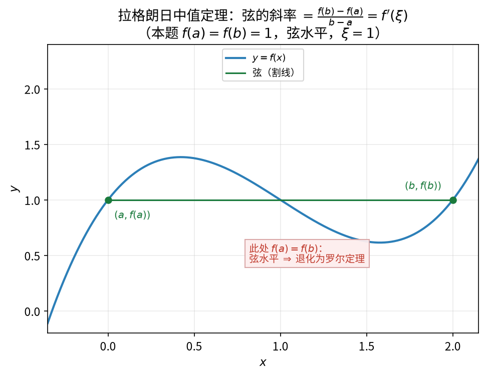
图 2 是证明题的辅助函数选择与定理匹配流程。
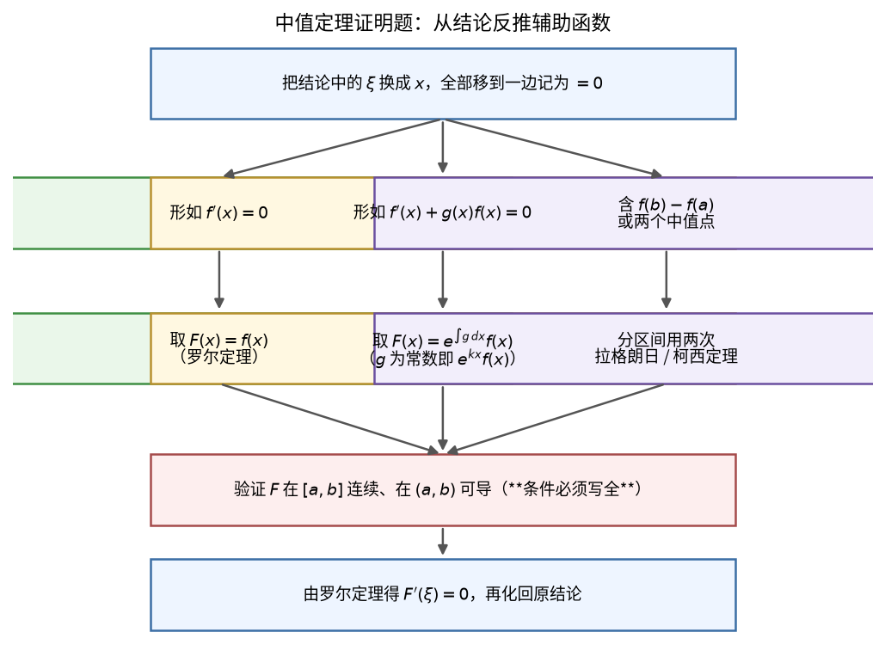
查看该图源码
flowchart TD
A["读待证结论"] --> B{"结论能整理成 F 的导数为 0 吗"}
B -->|"能"| C["凑出 F 的两个等值点 用罗尔定理"]
B -->|"不能"| D{"结论含 f 导与 f 的线性组合吗"}
D -->|"含"| E["乘积分因子 e 的 g 积分次方 构造 F"]
D -->|"不含"| F{"结论含两个中值点吗"}
F -->|"含"| G["拆区间分别用拉格朗日或柯西中值定理"]
F -->|"不含"| H{"条件里有 f 二阶导的界吗"}
H -->|"有"| I["两端点各写一次泰勒 加权相加消去 f 导"]
H -->|"没有"| J["移项作差 用单调性或最值证明"]
C --> K["回头核对定理的连续与可导条件"]
E --> K
G --> K
I --> K
J --> K
易错点
错在哪 · 正确是什么- 错在硬套罗尔定理而不检查端点条件。 罗尔定理要求 $f(a)=f(b)$，而题给条件往往不是这个（例如只给了 $f(b)-f(a)$）。正确做法是先构造辅助函数把端点值拉平，例如令 $F(x)=f(x)-f(a)-\frac{f(b)-f(a)}{b-a}(x-a)$，此时 $F(a)=F(b)=0$，再对 $F$ 用罗尔定理。
- 错在构造辅助函数时漏掉指数因子。 结论含 $f'(\xi)+g(\xi)f(\xi)=0$ 时必须乘 $e^{\int g\,dx}$，直接取 $F=f$ 得不到要证的形式；这个因子恒正，不改变零点位置，但少了它就推不出结论。
- 错在用泰勒公式时展开点与余项写法不匹配。 已知 $|f''(x)|\le M$ 时应在端点或区间中点展开，并明确写出余项中的 $\eta$ 落在哪两个数之间；余项项数写错、或把 $\eta$ 当成与 $x$ 无关的常数，都会导致放缩失效。
- 错在把 $\xi$ 的取值范围写宽或写窄。 中值定理保证的 $\xi$ 在开区间 $(a,b)$ 内（积分中值定理给的是闭区间 $[a,b]$）；后续放缩常常依赖这个范围，写错就得不到正确的界。
真题示例
题干 · 解析2024 年数二第 21 题（解答题，12 分）
设函数 $f(x)$ 具有 2 阶导数，$f'(0)=f'(1)$，$|f''(x)|\le 1$。
（1）当 $x\in(0,1)$ 时，$\left|f(x)-f(0)(1-x)-f(1)x\right|\le\dfrac{x(1-x)}{2}$；
（2）$\left|\displaystyle\int_0^1 f(x)\,dx-\dfrac{f(0)+f(1)}{2}\right|\le\dfrac{1}{12}$。
解析：
- 在左端点写带拉格朗日余项的泰勒公式：
$$f(x)=f(0)+f'(0)x+\frac{f''(\xi_1)}{2}x^2$$
其中 $\xi_1$ 介于 $0$ 与 $x$ 之间；在右端点再写一次：
$$f(x)=f(1)+f'(1)(x-1)+\frac{f''(\xi_2)}{2}(x-1)^2$$
- 把第一式乘 $(1-x)$、第二式乘 $x$ 后相加，左端得 $(1-x)f(x)+xf(x)=f(x)$。
一阶项之和为 $f'(0)(1-x)x+f'(1)x(x-1)$，由 $f'(0)=f'(1)$ 知它等于
$$f'(0)\left[x(1-x)+x(x-1)\right]=0$$
于是
$$\displaystyle f(x)=f(0)(1-x)+f(1)x+\frac{(1-x)x^2}{2}f''(\xi_1)+\frac{x(1-x)^2}{2}f''(\xi_2)$$
- 取绝对值并用 $|f''(x)|\le1$ 放大：
$$\left|f(x)-f(0)(1-x)-f(1)x\right|\le\frac{(1-x)x^2+x(1-x)^2}{2}=\frac{x(1-x)\left[(1-x)+x\right]}{2}=\frac{x(1-x)}{2}$$
第（1）问得证。
- 对第（1）问的结论在 $[0,1]$ 上积分，注意
$$\int_0^1\left[f(0)(1-x)+f(1)x\right]dx=\frac{f(0)+f(1)}{2}$$
于是
$$\left|\int_0^1f(x)\,dx-\frac{f(0)+f(1)}{2}\right|=\left|\int_0^1\left[f(x)-f(0)(1-x)-f(1)x\right]dx\right|\le\int_0^1\frac{x(1-x)}{2}\,dx=\frac{1}{12}$$
第（2）问得证。
多元函数微积分学 高频
考频统计
历年命题分布考察次数 7 次；涉及年份：2023、2024（2023—2024 年数二真题逐题定章统计）；分数占比约 14%；主要题型：选择、填空、解答（偏导数、全微分、极值、二重积分）。
核心讲解
定义 · 公式 · 适用条件【二元函数的极限与连续】
- 极限的定义：$\lim\limits_{(x,y)\to(x_0,y_0)}f(x,y)=A$ 要求点按任意路径趋近 $(x_0,y_0)$ 时函数值都趋于同一个 $A$。
- 否定判据：找两条不同路径得到两个不同的极限，即可断定极限不存在。
- 典型反例：$\frac{xy}{x^2+y^2}$ 沿直线 $y=kx$ 的极限是 $\frac{k}{1+k^2}$，随 $k$ 变化，故该极限不存在。
- 连续的定义：$f$ 在 $(x_0,y_0)$ 的某去心邻域内有定义，且 $\lim\limits_{(x,y)\to(x_0,y_0)}f(x,y)=f(x_0,y_0)$。
- 最值定理：有界闭区域上连续的二元函数一定取到最大值与最小值。
- 两步法依据：多元最值问题"内部驻点 + 边界"的做法正来自最值定理。
【核心公式】
$$ \lim_{(x,y)\to(x_0,y_0)}f(x,y)=A,\qquad \frac{xy}{x^2+y^2}\Big|_{y=kx}=\frac{k}{1+k^2} $$
【适用条件】
- 讨论极限要求 $(x_0,y_0)$ 的某去心邻域内有定义；
- 断言极限存在必须证明任意路径都趋于同一个值，只验证一条路径不算证明；
- 断言极限不存在只需给出两条路径的两个不同极限；
- 连续要求极限值恰好等于该点的函数值 $f(x_0,y_0)$。
⚠️ 易错点：用一条路径的极限就断言二元极限存在。一元函数只需两侧趋近，二元函数要沿任意路径；沿 $y=kx$ 算出 $\frac{xy}{x^2+y^2}\to\frac{k}{1+k^2}$ 随 $k$ 变化，就足以断定该极限不存在。
【偏导数、全微分与隐函数求导】
- 偏导数：$f_x(x_0,y_0)=\lim\limits_{\Delta x\to0}\frac{f(x_0+\Delta x,y_0)-f(x_0,y_0)}{\Delta x}$，是把 $y$ 固定后的一元导数。
- 分段函数求偏导：在分界点处求偏导必须回到定义式去算。
- 全微分的定义：$\Delta z=A\Delta x+B\Delta y+o(\rho)$，其中 $\rho=\sqrt{\Delta x^2+\Delta y^2}$。
- 可微的必要结论：可微时必有 $A=f_x(x_0,y_0)$、$B=f_y(x_0,y_0)$。
- 判定链条：偏导数在点附近存在且连续 $\Rightarrow$ 可微 $\Rightarrow$ 偏导数存在且函数连续，两个反向箭头都不成立。
- 混合偏导：二阶混合偏导 $f_{xy}$ 与 $f_{yx}$ 在区域内都连续时相等。
- 复合函数求导：用链式法则，先画出变量关系图，再沿每条通路相乘、把所有通路相加。
- 隐函数求导：由 $F(x,y,z)=0$ 确定的隐函数 $z=z(x,y)$ 满足 $\frac{\partial z}{\partial x}=-\frac{F_x}{F_z}$、$\frac{\partial z}{\partial y}=-\frac{F_y}{F_z}$。
【核心公式】
$$ \Delta z=A\Delta x+B\Delta y+o(\rho),\qquad \rho=\sqrt{\Delta x^2+\Delta y^2},\qquad \frac{\partial z}{\partial x}=-\frac{F_x}{F_z},\qquad \frac{\partial z}{\partial y}=-\frac{F_y}{F_z} $$
【适用条件】
- 偏导数存在只要求沿坐标轴方向的两条路径，不能推出可微或连续；
- 可微的充分条件是偏导数在点附近存在且连续；
- $f_{xy}=f_{yx}$ 要求两个混合偏导在区域内都连续；
- 隐函数求导要求 $F$ 有连续偏导且 $F_z$ 不为 0；
- 全微分定义中的 $A$、$B$ 与 $x$、$y$ 无关，$o(\rho)$ 是对 $\rho$ 的高阶无穷小。
⚠️ 易错点：把"偏导存在"当成"可微"。典型反例是 $f(x,y)=\frac{xy}{\sqrt{x^2+y^2}}$（补 $f(0,0)=0$），原点处两个偏导都为 $0$，但沿 $y=x$ 有 $\frac{\Delta z-f_x\Delta x-f_y\Delta y}{\rho}=\frac{1}{2}\not\to0$，故不可微；判别时可算 $\Delta z-f_x\Delta x-f_y\Delta y$ 是否为 $\rho$ 的高阶无穷小。
【二元函数的极值与最值】
- 必要条件：二元函数无条件极值的必要条件是 $f_x(x_0,y_0)=f_y(x_0,y_0)=0$。
- 三个记号：求出驻点后记 $A=f_{xx}$、$B=f_{xy}$、$C=f_{yy}$ 在该点的值。
- 极值判别：由 $AC-B^2$ 的符号判定，$AC-B^2=0$ 时判别法失效、须回到定义讨论。
- 判别实例：$f(x,y)=2x^3-9x^2-6y^4+12x+24y$ 只有 $(1,1)$ 与 $(2,1)$ 两个驻点，在 $(1,1)$ 处 $A=-6,B=0,C=-72$，$AC-B^2=432>0$ 且 $A<0$，是极大值点；在 $(2,1)$ 处 $A=6,B=0,C=-72$，$AC-B^2=-432<0$，不是极值点。
- 有界闭区域上的最值：把内部驻点的函数值与边界上的最大值、最小值放在一起比较，边界条件代入后化为一元函数的最值问题。
- 条件极值：带约束 $\varphi(x,y)=0$ 时用拉格朗日乘数法，作 $L=f+\lambda\varphi$，解方程组 $L_x=0,L_y=0,L_\varphi=0$，再比较全部候选点的函数值。
- 嫌疑点：拉格朗日乘数法给出的只是"嫌疑点"，结论必须靠比较（或由实际意义）得出。
【核心公式】
$$ A=f_{xx},\qquad B=f_{xy},\qquad C=f_{yy},\qquad L=f+\lambda\varphi,\qquad L_x=L_y=L_\varphi=0 $$
| $AC-B^2$ 的情形 | 判定结论 | 附加条件 | 处理办法 |
|---|---|---|---|
| $AC-B^2>0$ | 是极值点 | $A<0$ 为极大值点，$A>0$ 为极小值点 | 直接写出极值与极值点坐标 |
| $AC-B^2<0$ | 不是极值点 | 无需再看 $A$ 的符号 | 直接排除该驻点 |
| $AC-B^2=0$ | 判别法失效 | 二阶判别式给不出信息 | 回到定义讨论（比较该点邻域内函数值） |
【适用条件】
- 求无条件极值先解 $f_x=f_y=0$ 求出全部驻点，再逐点算 $A$、$B$、$C$；
- $AC-B^2$ 判别法要求 $f$ 在驻点附近有二阶连续偏导数；
- $AC-B^2=0$ 时不能下结论，必须回到定义或改用其它方法；
- 求有界闭区域上的最值必须同时处理内部驻点与边界，两者都算完才能比较；
- 拉格朗日乘数法要求约束 $\varphi$ 有连续偏导且 $\nabla\varphi$ 不为 0，最后必须比较候选点函数值。
⚠️ 秒杀技：先在驻点处算 $A$、$B$、$C$ 三个数，只盯 $AC-B^2$ 的符号——正号看 $A$ 定极大极小，负号直接排除，零号回去用定义。
【二重积分：直角坐标与极坐标】
- X 型区域：若 $D$ 满足 $a\le x\le b$、$\varphi_1(x)\le y\le\varphi_2(x)$，则先对 $y$ 积分。
- Y 型区域：若 $D$ 满足 $c\le y\le d$、$\psi_1(y)\le x\le\psi_2(y)$，则先对 $x$ 积分。
- 定限口诀：外层是常数限、内层是函数限，内层上限减下限。
- 画图：画图是唯一可靠的办法，交换积分次序时必须重新用不等式描述同一区域再重新定限。
- 禁止操作：绝不能把两个积分号连同上下限直接对调。
- 极坐标变换：$x=r\cos\theta$、$y=r\sin\theta$ 下面积元素为 $dxdy=r\,drd\theta$，那个雅可比因子 $r$ 不能漏。
- 优先用极坐标：区域是圆、扇形、圆环，或被积函数含 $x^2+y^2$ 时优先用极坐标。
- 对称性：若 $D$ 关于 $x$ 轴对称且 $f(x,-y)=-f(x,y)$，则积分为 $0$；若 $D$ 关于直线 $y=x$ 对称，则 $\iint_Df(x,y)\,dxdy=\iint_Df(y,x)\,dxdy$，可把被积函数换成 $\frac{1}{2}\left[f(x,y)+f(y,x)\right]$ 后再算。
【核心公式】
$$ \iint_Df(x,y)\,dxdy=\int_a^bdx\int_{\varphi_1(x)}^{\varphi_2(x)}f(x,y)\,dy=\int_\alpha^\beta d\theta\int_{r_1(\theta)}^{r_2(\theta)}f(r\cos\theta,r\sin\theta)\,r\,dr $$
$$ \iint_Df(x,y)\,dxdy=\iint_Df(y,x)\,dxdy\ \ (D\ \text{关于}\ y=x\ \text{对称}) $$
| 坐标系 / 区域类型 | 适用情形 | 定限方式 | 注意点 |
|---|---|---|---|
| 直角坐标 X 型 | $D$ 可写成 $a\le x\le b$、$\varphi_1(x)\le y\le\varphi_2(x)$ | 外层 $x$ 取常数限，内层 $y$ 取函数限 | 内层上限减下限，先对 $y$ 积分 |
| 直角坐标 Y 型 | $D$ 可写成 $c\le y\le d$、$\psi_1(y)\le x\le\psi_2(y)$ | 外层 $y$ 取常数限，内层 $x$ 取函数限 | 先对 $x$ 积分；交换次序必须重新定限 |
| 极坐标 | 区域是圆、扇形、圆环，或被积函数含 $x^2+y^2$ | 外层 $\theta\in[\alpha,\beta]$，内层 $r\in[r_1(\theta),r_2(\theta)]$ | 面积元素是 $r\,drd\theta$，因子 $r$ 不能漏 |
【适用条件】
- 化累次积分前先画出区域图，判断是 X 型还是 Y 型（或需要分块）；
- X 型要求 $\varphi_1(x)\le\varphi_2(x)$ 在 $[a,b]$ 上成立，Y 型同理；
- 极坐标要求 $r_1(\theta)\le r_2(\theta)$ 在 $[\alpha,\beta]$ 上成立，且变换是一一的；
- 用对称性时先确认区域确实关于相应直线对称，再确认被积函数的奇偶性；
- 交换积分次序必须重新用不等式描述同一区域，不能把两个积分号连同上下限直接对调。
⚠️ 易错点：极坐标换元时漏掉雅可比因子 $r$。面积元素是 $dxdy=r\,drd\theta$ 而不是 $drd\theta$，漏掉 $r$ 会让结果整体差一个量级；另一个高频错误是交换积分次序时不重新定限。
关键结论速记
考前最后扫一眼二元极限—— $\lim\limits_{(x,y)\to(x_0,y_0)}f(x,y)=A$ 要求沿任意路径极限都相同；找两条路径极限不同即可断定极限不存在（常用 $y=kx$）。可微的定义—— $\Delta z=f_x\Delta x+f_y\Delta y+o(\rho)$，$\rho=\sqrt{\Delta x^2+\Delta y^2}$；判别链条是"偏导连续 $\Rightarrow$ 可微 $\Rightarrow$ 偏导存在且函数连续"，两个反向箭头都不成立。隐函数求导—— 由 $F(x,y,z)=0$ 确定 $z=z(x,y)$ 时 $\frac{\partial z}{\partial x}=-\frac{F_x}{F_z}$、$\frac{\partial z}{\partial y}=-\frac{F_y}{F_z}$，条件是 $F_z\neq0$；分子的负号最易漏。二元极值判别—— 驻点处记 $A=f_{xx},B=f_{xy},C=f_{yy}$：$AC-B^2>0$ 是极值点（$A<0$ 极大、$A>0$ 极小），$AC-B^2<0$ 不是极值点，$AC-B^2=0$ 判别法失效。拉格朗日乘数法—— 作 $L=f+\lambda\varphi$，解 $L_x=L_y=L_\varphi=0$；解出的只是候选点，必须比较函数值后才能下结论。二重积分化累次积分—— $\iint_Df\,dxdy=\int_a^bdx\int_{\varphi_1(x)}^{\varphi_2(x)}f\,dy$（X 型，内层上下限是 $x$ 的函数）；交换次序必须重新画图定限。极坐标—— $\iint_Df\,dxdy=\int_\alpha^\beta d\theta\int_{r_1(\theta)}^{r_2(\theta)}f(r\cos\theta,r\sin\theta)\,r\,dr$，雅可比因子 $r$ 不能漏。对称性—— $D$ 关于 $x$ 轴对称且 $f(x,-y)=-f(x,y)$ 时积分为 $0$；关于 $y=x$ 对称时可把 $f(x,y)$ 换成 $\frac{1}{2}[f(x,y)+f(y,x)]$。
示意图
几何直观与判定流程图 1 是区域 $D=\left\{(x,y):\frac{1}{3}\le xy\le3,\ \frac{1}{3}\le\frac{y}{x}\le3,\ x>0,\ y>0\right\}$ 在第一象限的图像，四条边界曲线的交点为 $\left(\frac{1}{3},1\right)$、$\left(1,\frac{1}{3}\right)$、$(3,1)$、$(1,3)$：$\left(\frac{1}{3},1\right)$ 是 $xy=\frac{1}{3}$ 与 $y=3x$ 的交点，$\left(1,\frac{1}{3}\right)$ 是 $xy=\frac{1}{3}$ 与 $y=\frac{1}{3}x$ 的交点，$(3,1)$ 是 $xy=3$ 与 $y=\frac{1}{3}x$ 的交点，$(1,3)$ 是 $xy=3$ 与 $y=3x$ 的交点。图中同时画出 $u=xy$、$v=\frac{y}{x}$ 的等值线，这族双曲线与射线把 $D$ 映成 $uv$ 平面上以 $\frac{1}{3}$ 与 $3$ 为边的正方形。
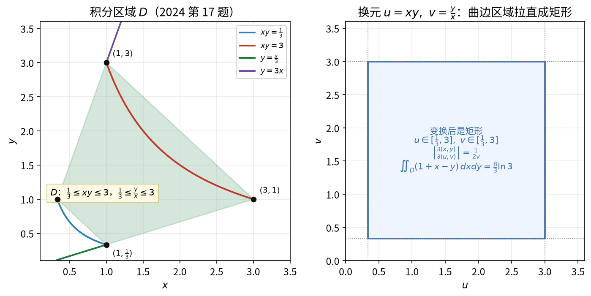
图 2 是多元函数极值判定与二重积分计算的路线图。
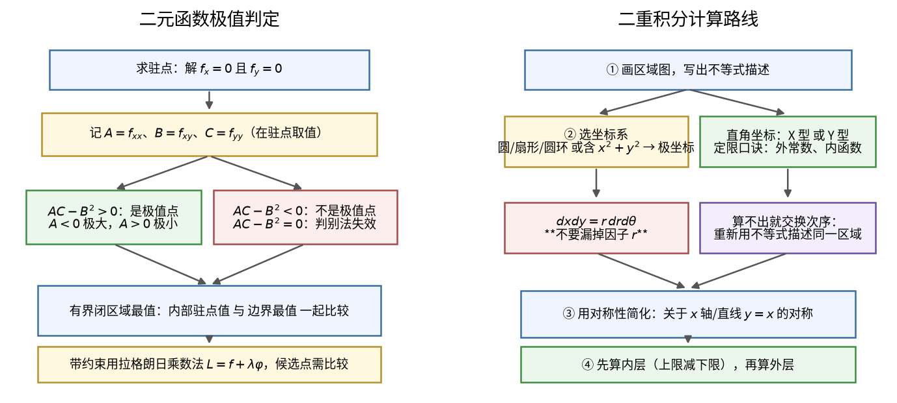
查看该图源码
flowchart TD
A["多元函数问题"] --> B{"是求极值还是算二重积分"}
B -->|"求极值"| C["解 f 对 x 与 f 对 y 同时为零 得驻点"]
C --> D["算驻点处的 A B C 三个二阶偏导"]
D --> E{"AC 减 B 平方的符号"}
E -->|"大于零"| F["A 小于零取极大 A 大于零取极小"]
E -->|"小于零"| G["非极值点 直接排除"]
E -->|"等于零"| H["判别法失效 回到定义讨论"]
B -->|"算二重积分"| I{"区域或被积函数含 x 平方加 y 平方吗"}
I -->|"含"| J["极坐标 补上雅可比因子 r"]
I -->|"不含"| K["直角坐标 画图定限或交换积分次序"]
F --> L["有界闭区域还要比较边界上的最值"]
G --> L
H --> L
J --> L
K --> L
易错点
错在哪 · 正确是什么- 错在用一条路径的极限就断言二元极限存在。 一元函数只需两侧趋近，二元函数要沿任意路径；沿 $y=kx$ 算出 $\frac{xy}{x^2+y^2}\to\frac{k}{1+k^2}$ 随 $k$ 变化，就足以断定该极限不存在。
- 错在把"偏导存在"当成"可微"。 偏导存在只保证沿坐标轴方向的两条路径，可微要求所有方向；典型反例是 $f(x,y)=\frac{xy}{\sqrt{x^2+y^2}}$（补 $f(0,0)=0$），原点处两个偏导都为 $0$，但沿 $y=x$ 有 $\frac{\Delta z-f_x\Delta x-f_y\Delta y}{\rho}=\frac{1}{2}\not\to0$，故不可微。判别时可算 $\Delta z-f_x\Delta x-f_y\Delta y$ 是否为 $\rho$ 的高阶无穷小。
- 错在极坐标换元时漏掉雅可比因子 $r$。 面积元素是 $dxdy=r\,drd\theta$，不是 $drd\theta$；漏掉 $r$ 会让结果整体差一个量级。
- 错在交换积分次序时不重新定限。 必须重新用不等式描述同一区域再定新的上下限，不能把两个积分号连同上下限直接对调；画图是唯一可靠的办法，定限口诀是"外层常数限、内层函数限，内层上限减下限"。
真题示例
题干 · 解析2024 年数二第 17 题（解答题，10 分）
设已知区域 $D$ 是第一象限内的有界区域，它由 $xy=\dfrac{1}{3}$、$xy=3$、$y=\dfrac{1}{3}x$、$y=3x$ 围成，计算 $\displaystyle\iint_D(1+x-y)\,dxdy$。
解析：
- 区域由两族双曲线 $xy=$ 常数与两族射线 $\frac{y}{x}=$ 常数围成。
作变换 $u=xy$、$v=\frac{y}{x}$，则 $D$ 的边界恰是
$$u=\frac{1}{3},u=3,v=\frac{1}{3},v=3$$
即 $D$ 被映成 $uv$ 平面上的矩形
$$D'=\left[\frac{1}{3},3\right]\times\left[\frac{1}{3},3\right]$$
- 反解 $x=\sqrt{\frac{u}{v}}$、$y=\sqrt{uv}$，由链式法则算得
$$\frac{\partial x}{\partial u}=\frac{1}{2\sqrt{uv}}$$
$$\frac{\partial x}{\partial v}=-\frac{1}{2}\sqrt{\frac{u}{v^3}}$$
$$\frac{\partial y}{\partial u}=\frac{1}{2}\sqrt{\frac{v}{u}}$$
$$\frac{\partial y}{\partial v}=\frac{1}{2}\sqrt{\frac{u}{v}}$$
于是雅可比行列式
$$\frac{\partial(x,y)}{\partial(u,v)}=\frac{1}{2\sqrt{uv}}\cdot\frac{1}{2}\sqrt{\frac{u}{v}}-\left(-\frac{1}{2}\sqrt{\frac{u}{v^3}}\right)\cdot\frac{1}{2}\sqrt{\frac{v}{u}}=\frac{1}{2v}>0$$
即 $dxdy=\frac{1}{2v}\,dudv$。
- 代入得
$$\iint_D(1+x-y)\,dxdy=\int_{1/3}^{3}\!\!\int_{1/3}^{3}\left(1+\sqrt{\frac{u}{v}}-\sqrt{uv}\right)\frac{1}{2v}\,du\,dv$$
其中常数项积分为
$$\frac{1}{2}\cdot\frac{8}{3}\cdot\ln 9=\frac{8}{3}\ln 3$$
而含 $\sqrt{\frac{u}{v}}$ 与含 $\sqrt{uv}$ 的两项分别为
$$\frac{1}{2}\int_{1/3}^{3}\sqrt{u}\,du\int_{1/3}^{3}v^{-3/2}dv$$
$$\frac{1}{2}\int_{1/3}^{3}\sqrt{u}\,du\int_{1/3}^{3}v^{-1/2}dv$$
两个 $v$ 积分都等于 $\frac{4\sqrt{3}}{3}$，故两项都等于 $\frac{104}{27}$ 而正负相消。
- 结论：$\displaystyle\iint_D(1+x-y)\,dxdy=\frac{8}{3}\ln 3\approx2.9296$。
线性代数 约 33 分 · 约 22%
本科目分值：约 33 分 / 150 分（约 22%） | 章节数：6 | 考频样本：2023—2024 年数二真题逐题定章统计
行列式 常规
考频统计
历年命题分布考察次数 0 次；涉及年份：2023—2024 年未单独命题（2023—2024 年数二真题逐题定章统计）；分数占比约 12%；主要题型：多为矩阵与方程组计算的中间步骤（按行按列展开、范德蒙德）。
核心讲解
定义 · 公式 · 适用条件【行列式定义与性质】
- 本质：$n$ 阶行列式是 $n!$ 项的代数和，每一项都从不同行不同列各取一个元素相乘。
- 通项符号：由列指标的逆序数决定，记作 $\varepsilon(j_1j_2\cdots j_n)$（偶排列取 $+$，奇排列取 $-$）。
- 转置不变：$|A^{T}|=|A|$，所以凡对「行」成立的性质对「列」同样成立。
- 换行变号：交换两行（列），行列式只改变符号。
- 提公因子：某行（列）有公因子 $k$ 时，$k$ 可提到行列式外。
- 倍加不变：把某行（列）的 $k$ 倍加到另一行（列），行列式的值不变。
- 成比例为零：两行（列）相同或成比例时，行列式等于 $0$。
【核心公式】
$$ |A^{T}|=|A|,\qquad |kA|=k^{n}|A|,\qquad |AB|=|A|\cdot|B| $$
三类行变换对行列式值的影响（对列同样成立）：
| 行变换 | 记号 | 对 $D$ 的影响 | 典型用途 |
|---|---|---|---|
| 互换两行 | $r_i\leftrightarrow r_j$ | 变号，$D\to -D$ | 把主元换到非零位置 |
| 某行 倍乘 $k$ | $r_i\to kr_i$ | 变成 $kD$，须在式外除以 $k$ | 把主元化为 $1$ |
| 某行 倍加 | $r_i\to r_i+kr_j$ | 值不变 | 造零，最常用且无副作用 |
| 拆行 | 两行之和拆成两个行列式 | 分成两个行列式之和 | 处理元素为和式的情形 |
| 两行 成比例 | —— | 直接得 $D=0$ | 一眼判零 |
【适用条件】
- $|kA|=k^{n}|A|$ 只对 $n$ 阶方阵 成立，$k$ 要取 $n$ 次幂；
- $|AB|=|A|\cdot|B|$ 要求 $A$、$B$ 是 同阶方阵，乘法可交换在数值上成立；
- 造零只能使用 倍加 变换，一旦用了换行或提公因子，必须把符号或倍数记在式外。
⚠️ 秒杀技：化三角形之前先观察——若某行（列）已有大量零元，直接按该行（列）展开降阶；若每行都有公共结构，先用倍加造出整行（列）为零，立刻判定 $D=0$，不必算到底。
【按行列展开】
- 余子式：$M_{ij}$ 是划去第 $i$ 行第 $j$ 列后留下的 $n-1$ 阶行列式。
- 代数余子式：$A_{ij}=(-1)^{i+j}M_{ij}$，符号由位置 $(i,j)$ 的奇偶决定。
- 展开定理：$D$ 等于任一行（列）各元素与自己的代数余子式之积的和。
- 异行错配为零：某行元素乘 另一行 的代数余子式，求和恒为 $0$。
- 造零优先：展开前先用性质把选定的行（列）化出尽可能多的零，是唯一值得练熟的固定手法。
【核心公式】
$$ D=\sum_{j=1}^{n}a_{ij}A_{ij}=a_{i1}A_{i1}+a_{i2}A_{i2}+\cdots+a_{in}A_{in} $$
异行错配为零的结论写成一行是：
$$ \sum_{j=1}^{n}a_{kj}A_{ij}=0\quad(k\neq i) $$
【适用条件】
- 行列式必须是 $n$ 阶方阵 对应的行列式；
- 按第 $i$ 行展开时，只有 第 $i$ 行 的元素参与相乘；
- 乘的却是其他行元素构成的余子式——这一步是符号与行列下标最容易错的地方。
⚠️ 易错点：漏掉 $(-1)^{i+j}$ 是最高频的失分点。$M_{ij}$ 与 $A_{ij}$ 只差一个符号，务必先写符号棋盘再代数值。
【特殊行列式】
- 分块三角：主对角块为 $A$（$m$ 阶）、$B$（$n$ 阶）时行列式为两块之积，与副对角块 $C$ 无关。
- 范德蒙德：列向量是同一组数的幂次 $1,x,x^{2},\dots,x^{n-1}$ 时直接套乘积公式。
- 上（下）三角：等于主对角线元素之连乘。
- 伴随矩阵行列式：$|A^{*}|=|A|^{n-1}$，由 $AA^{*}=|A|E$ 两端取行列式即得。
- 伴随矩阵母公式：$AA^{*}=A^{*}A=|A|E$，取逆公式 $A^{-1}=\frac{1}{|A|}A^{*}$ 只是它的推论。
【核心公式】
$$ \begin{vmatrix} A & C \\ O & B \end{vmatrix}=|A|\cdot|B|,\qquad \begin{vmatrix} A & O \\ C & B \end{vmatrix}=|A|\cdot|B| $$
$$ V=\begin{vmatrix}1&1&\cdots&1\\ x_1&x_2&\cdots&x_n\\ \vdots&\vdots&&\vdots\\ x_1^{n-1}&x_2^{n-1}&\cdots&x_n^{n-1}\end{vmatrix}=\prod_{1\le i 【适用条件】 ⚠️ 易错点：$|A|=0$ 只能说明 $A$ 不可逆，绝不能推出 $A^{*}=O$——当 $r(A)=n-1$ 时 $A^{*}\neq O$，这是伴随矩阵题目最容易丢分的分界点。
关键结论速记
考前最后扫一眼- $|A|=0 \iff A$ 不可逆 $\iff r(A)
- $|AB|=|A|\cdot|B|$，$|kA|=k^{n}|A|$，$|A^{T}|=|A|$，$|A^{-1}|=|A|^{-1}$ —— 行列式与矩阵运算的换算表，注意 $|kA|$ 的 $k$ 要取 $n$ 次幂
- $\begin{vmatrix} A & C \ O & B \end{vmatrix}=|A|\cdot|B|$ —— 分块三角阵，无论 $C$ 是什么
- $AA^{}=A^{}A=|A|E$，$|A^{*}|=|A|^{n-1}$ —— 伴随矩阵的两条母公式，其余结论都由它们推
- $\prod_{1\le i
- $|A|=a_{11}A_{11}+a_{12}A_{12}+\cdots+a_{1n}A_{1n}$ —— 按行展开的定义式，符号由位置 $(i,j)$ 的奇偶决定
示意图
几何直观与判定流程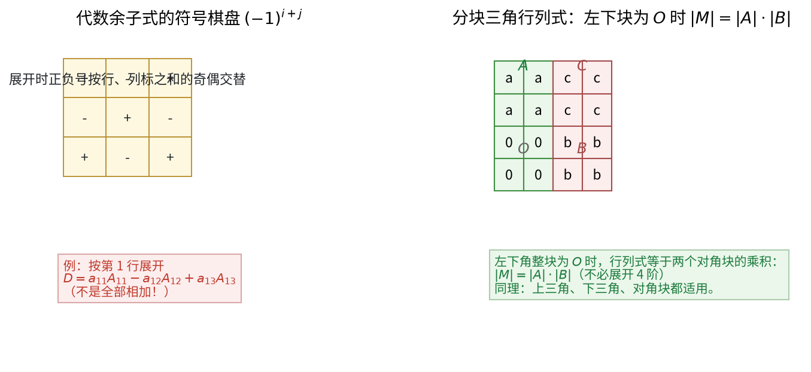
+-------------------------------+ +-------------------------------+
| + | - | + | | a11 a12 a13 | c11 c12 |
| - | + | - | | a21 a22 a23 | c21 c22 |
| + | - | + | | ------+-------+------------- |
| | | O | b11 b12 |
| sign of A(i,j) = (-1)^(i+j) | | | b21 b22 |
+-------------------------------+ +-------------------------------+
cofactor sign board block triangular partition
图左是代数余子式的符号棋盘，位置 $(i,j)$ 的符号为 $(-1)^{i+j}$；图右是分块上三角阵，其行列式等于两个主对角块行列式之积。
Step 1 pick a row (or column) with the most zeros
Step 2 use r_i <- r_i + k*r_j to create more zeros in it
Step 3 expand along that row : D = sum a(i,j) * A(i,j)
Step 4 repeat until 2x2 or triangular, then multiply the diagonal
查看该图源码
flowchart TD
A["n 阶行列式 D"] --> B{"某行某列零元素多？"}
B -->|"是"| C["按该行该列展开降阶"]
B -->|"否"| D["用 ri <- ri + k*rj 造零"]
D --> C
C --> E{"是否分块三角或三角？"}
E -->|"是"| F["D = 主对角块行列式之积"]
E -->|"否"| G{"是否范德蒙德型？"}
G -->|"是"| H["套用乘积公式"]
G -->|"否"| B
F --> I["得数值结果"]
H --> I
易错点
错在哪 · 正确是什么- 把「$|A|=0$」直接当成「$A$ 的所有子式全为零」。 错在混淆了行列式与秩。正确说法是 $|A|=0\iff r(A)\le n-1$；$A$ 完全可能有一个 $n-1$ 阶子式非零（此时 $r(A)=n-1$，$A^{*}\neq O$），这正是伴随矩阵相关题目的分界点。
- 代数余子式与余子式的符号搞混，或按行展开时误用了别的行的元素。 错在漏掉 $(-1)^{i+j}$，或写出 $\sum_j a_{kj}A_{ij}$（$k\neq i$）这种不成立的式子。正确做法：$A_{ij}=(-1)^{i+j}M_{ij}$，且按第 $i$ 行展开时只有第 $i$ 行的元素参与相乘，乘的却是其他行元素构成的余子式。
- 在行列式里做初等行变换时忘记倍加不改变值、换行要变号。 错在把矩阵的初等变换规则原样搬过来，或用「某行乘 $k$」后不把 $k$ 提出去。正确做法：倍加 $r_i+kr_j$ 不变值；交换两行提一个 $-1$；某行乘 $k$ 则必须在行列式外除以 $k$ 还原。
- 分块行列式一律写成 $|A||B|-|C||D|$ 之类。 错在把二阶行列式的展开式硬套到分块矩阵上。正确做法：只有分块三角（或分块对角）时才有 $|A||B|$ 这种干净结论，一般情形必须回到拉普拉斯展开或先消去一角。
真题示例
题干 · 解析2020 年真题改编（填空题，4 分）
计算行列式 $\begin{vmatrix} a & 0 & -1 & 1 \\ 0 & a & 1 & -1 \\ -1 & 1 & a & 0 \\ 1 & -1 & 0 & a \end{vmatrix}=$ ______。
解析：第 1 行只有三个非零元，直接按第 1 行展开，$D=aA_{11}+(-1)A_{13}+1\cdot A_{14}$。
三个三阶余子式都用「造零 + 展开」各降一阶，sympy 复算得 $M_{11}=a^{3}-2a$、$M_{13}=M_{14}=a^{2}$。
代回并注意符号 $A_{13}=(-1)^{1+3}M_{13}=a^{2}$、$A_{14}=(-1)^{1+4}M_{14}=-a^{2}$：
$$D=a(a^{3}-2a)+(-1)\cdot a^{2}+1\cdot(-a^{2})=a^{4}-4a^{2}.$$
sympy 复算：$\det = a^4-4a^2=a^2(a-2)(a+2)$，取 $a=3$ 数值为 $45=9\times 5$。
与 $a^{2}(a^{2}-4)$ 一致。结论 $a^{4}-4a^{2}$。
矩阵 高频
考频统计
历年命题分布考察次数 3 次；涉及年份：2023、2024（2023—2024 年数二真题逐题定章统计）；分数占比约 24%；主要题型：选择、填空（伴随矩阵、秩、初等变换、可逆判定）。
核心讲解
定义 · 公式 · 适用条件【矩阵运算】
- 结合律成立：$(AB)C=A(BC)$，多个矩阵连乘时可按方便的顺序结合。
- 分配律成立：$A(B+C)=AB+AC$，$(A+B)C=AC+BC$。
- 交换律不成立：一般 $AB\neq BA$，一切「先左乘还是先右乘」的区别都源于此。
- 转置反序：$(AB)^{T}=B^{T}A^{T}$，转置后两个因子的顺序必须交换。
- 求逆反序：$(AB)^{-1}=B^{-1}A^{-1}$，前提是 $A$、$B$ 都 可逆。
- 零因子现象：$AB=O$ 推不出 $A=O$ 或 $B=O$，这是后面秩不等式与 $AB=O$ 型结论的出发点。
【核心公式】
$$ (AB)C=A(BC),\qquad (AB)^{T}=B^{T}A^{T},\qquad (AB)^{-1}=B^{-1}A^{-1} $$
【适用条件】
- 乘法要求左矩阵的 列数 等于右矩阵的 行数；
- 转置公式对任意可乘矩阵成立；
- 求逆公式要求 $A$ 与 $B$ 均 可逆（同阶方阵）；
- 使用「$AB=O\Rightarrow$ 秩不等式」时，必须补上三者的阶数关系。
⚠️ 易错点：把 $(AB)^{T}$ 写成 $A^{T}B^{T}$ 是最常见的符号错误。只要记住「转置和求逆都让因子反序」，两个公式一起记就不会混。
【逆矩阵与伴随矩阵】
- 伴随矩阵定义：$A^{*}=(A_{ji})$，即把每个元素换成它的 代数余子式 之后再 转置。
- 母公式：$AA^{*}=A^{*}A=|A|E$，关于伴随的一切结论都由它推出。
- 求逆公式：$|A|\neq 0$ 时 $A^{-1}=\frac{1}{|A|}A^{*}$。
- 行列式结论：$|A^{*}|=|A|^{n-1}$。
- 可逆的判据群：见下表，解题时按题目条件挑最好用的一条。
- 参数题与秩题的分工：算参数通常用 $|A|\neq 0$，讨论秩通常用 $r(A)=n$。
【核心公式】
$$ AA^{*}=A^{*}A=|A|E,\qquad A^{-1}=\frac{1}{|A|}A^{*},\qquad |A^{*}|=|A|^{n-1} $$
可逆的等价条件（$A$ 为 $n$ 阶方阵）：
| 等价说法 | 表达形式 | 最适用的题型 |
|---|---|---|
| 行列式 不为 0 | $\lvert A\rvert\neq 0$ | 含参数的方阵求参数范围 |
| 满秩 | $r(A)=n$ | 抽象矩阵、秩的讨论 |
| 初等矩阵之积 | $A=P_1P_2\cdots P_s$ | 初等变换与等价标准形 |
| 齐次方程组只有零解 | $Ax=0$ 仅有 $x=0$ | 解的结构、基础解系 |
| 列（行）向量组 线性无关 | $r(\alpha_1,\dots,\alpha_n)=n$ | 向量组相关性判定 |
| 与单位阵等价 | $A\cong E$ | 初等变换化简 |
| 特征值全 不为 0 | $\lambda_i\neq 0$ | 相似、特征值综合题 |
伴随矩阵的秩（$A$ 为 $n$ 阶方阵，$n\ge 2$）：
| $r(A)$ 的情形 | $r(A^{*})$ | 关键理由 |
|---|---|---|
| $r(A)=n$（$A$ 可逆） | $r(A^{*})=n$ | $\lvert A^{*}\rvert=\lvert A\rvert^{n-1}\neq 0$ |
| $r(A)=n-1$ | $r(A^{*})=1$ | $A^{*}\neq O$ 但 $A^{*}A=\lvert A\rvert E=O$ |
| $r(A)\le n-2$ | $r(A^{*})=0$，即 $A^{*}=O$ | 所有 $n-1$ 阶子式全为 $0$ |
【适用条件】
- 定义 $A^{*}=(A_{ji})$ 中 转置 这一步不能漏，漏掉就全盘出错；
- $A^{-1}=\frac{1}{|A|}A^{*}$ 要求 $|A|\neq 0$，即 $A$ 可逆；
- $|A^{*}|=|A|^{n-1}$ 与 $r(A^{*})$ 的三段结论都要求 $A$ 是 $n$ 阶方阵；
- $r(A)=n-1$ 时 $A^{*}\neq O$ 且 $r(A^{*})=1$，此时 $A^{*}$ 的每一行都是 $A^{*}A=O$ 所对应方程组的解。
⚠️ 易错点：把「$|A|=0$」直接当成「$A^{*}=O$」。正确说法是 $r(A)=n-1$ 时 $r(A^{*})=1$，只有 $r(A)\le n-2$ 时才有 $A^{*}=O$——三段情形必须分清楚。
【初等变换与秩】
- 秩的定义：$r(A)$ 是 $A$ 中 非零子式 的最高阶数。
- 秩的算法：$r(A)$ 等于行阶梯形中 非零行的行数。
- 行秩等于列秩：$r(A)$ 同时等于行向量组的秩与列向量组的秩。
- 初等变换不变秩：$P$、$Q$ 可逆 时 $r(PAQ)=r(A)$，这是「初等变换不改变秩」的一般形式。
- 三条件用：求秩、求逆、求极大无关组，都可以通过初等行变换一次完成。
【核心公式】
$$ r(PAQ)=r(A)\quad(P,Q\ \text{可逆}) $$
$$ r(A+B)\le r(A)+r(B),\qquad r(AB)\le\min\{r(A),\,r(B)\} $$
$$ AB=O\ \Longrightarrow\ r(A)+r(B)\le n\quad(A\ \text{为}\ m\times n,\ B\ \text{为}\ n\times s) $$
【适用条件】
- $r(PAQ)=r(A)$ 要求 $P$、$Q$ 都 可逆；
- $r(A+B)\le r(A)+r(B)$ 对同型矩阵成立，等号一般不取；
- $r(AB)\le\min\{r(A),r(B)\}$ 对任意可乘矩阵成立；
- $AB=O$ 型不等式中的 $n$ 是 中间维数（$A$ 的列数、$B$ 的行数），不是 $A$ 或 $B$ 的阶数。
⚠️ 秒杀技：见到 $AB=O$ 立刻写 $r(A)+r(B)\le n$；见到 $A^{*}\neq O$ 立刻把 $r(A)$ 锁定在 $n-1$。这两条能把抽象秩的填空题压缩成一步。
【分块矩阵】
- 分块乘法：把大矩阵按相容的方式分块后，乘法规则与小矩阵完全一致。
- 分块转置：转置的同时 交换块的位置，即把 $A$、$B$、$C$、$D$ 四块按 $\begin{pmatrix}A&B\\ C&D\end{pmatrix}^{T}=\begin{pmatrix}A^{T}&C^{T}\\ B^{T}&D^{T}\end{pmatrix}$ 重排。
- 分块对角求逆：主对角块各自求逆，副对角块照抄位置。
- 分块对角行列式：等于各主对角块行列式之连乘。
- 适用场景：矩阵阶数较高、出现明显零块或重复结构时，分块能把高阶运算降成低阶运算。
【核心公式】
$$ \begin{pmatrix} A & O \\ O & B \end{pmatrix}^{-1}=\begin{pmatrix} A^{-1} & O \\ O & B^{-1} \end{pmatrix},\qquad \begin{vmatrix} A & O \\ O & B \end{vmatrix}=|A|\cdot|B| $$
$$ \begin{pmatrix} A & C \\ O & B \end{pmatrix}^{-1}=\begin{pmatrix} A^{-1} & -A^{-1}CB^{-1} \\ O & B^{-1} \end{pmatrix} $$
【适用条件】
- 分块乘法要求相应块的 阶数相容；
- 分块求逆要求每个对角块都 可逆；
- 分块行列式的干净结论只在 分块三角或分块对角 时成立；
- 副对角块情形要先通过换行换列把零块挪到正确位置，换一次记一个符号。
⚠️ 易错点：把分块行列式一律写成 $|A||B|-|C||D|$，等于把二阶行列式展开式硬套到分块矩阵上。一般情形必须回到拉普拉斯展开或先消去一角。
关键结论速记
考前最后扫一眼- $(AB)^{-1}=B^{-1}A^{-1}$，$(AB)^{T}=B^{T}A^{T}$ —— 一律反序，逆与转置混合时要先转置后取逆再反序
- $A$ 可逆 $\iff |A|\neq0 \iff r(A)=n \iff Ax=0$ 仅有零解 —— 可逆判定的四个同义说法
- $AA^{}=A^{}A=|A|E$，$|A^{}|=|A|^{n-1}$，$|A|\neq0$ 时 $A^{-1}=\frac{1}{|A|}A^{}$ —— 伴随矩阵的两条母公式
- $r(A^{})=n\ (r(A)=n)$，$=1\ (r(A)=n-1)$，$=0\ (r(A)\le n-2)$ —— 伴随矩阵秩的三段公式，$|A|=0$ 并不等于 $A^{}=O$
- $r(A+B)\le r(A)+r(B)$，$r(AB)\le\min{r(A),r(B)}$ —— 和与积的秩只能变小
- $AB=O \Rightarrow r(A)+r(B)\le n$ —— 零乘积给出的秩约束，$n$ 是 $A$ 的列数（即 $B$ 的行数）
- $P^{T}AP$ 与 $A$ 同秩 —— 可逆阵左乘右乘不改变秩，是初等变换不改变秩的一般形式
示意图
几何直观与判定流程
n columns r(A) = n -> r(A*) = n
+-------------------+ r(A) = n-1 -> r(A*) = 1
| Er | O | r rows r(A) <= n-2 -> A* = O
|-------+-----------|
| O | O | det(A) != 0 => A* = det(A) * inv(A)
+-------------------+ det(A) = 0 and A* != O is possible
rank = r
equivalent normal form
图左是 $m\times n$ 矩阵经初等变换得到的等价标准形，其中 $r=r(A)$；图右列出伴随矩阵的秩随 $r(A)$ 变化的三段结论。
+---------+---------+---------+---------+
| A11 | A21 | A31 | A41 | <- row 1 of adj(A)
+---------+---------+---------+---------+
| A12 | A22 | A32 | A42 | Aij = (-1)^(i+j) * Mij
+---------+---------+---------+---------+
| A13 | A23 | A33 | A43 | adj(A) = transpose of
+---------+---------+---------+---------+ the cofactor matrix
| A14 | A24 | A34 | A44 |
+---------+---------+---------+---------+
查看该图源码
flowchart TD
A["n 阶矩阵 A"] --> B{"|A| = 0 ?"}
B -->|"否"| C["A 可逆, r(A) = n, r(A*) = n"]
B -->|"是"| D{"r(A) 与 n-1 比较"}
D -->|"r(A) = n-1"| E["存在 n-1 阶非零子式, r(A*) = 1"]
D -->|"r(A) <= n-2"| F["所有 n-1 阶子式全为零, A* = O"]
C --> G["用 A* = |A| * A^-1 求伴随"]
E --> H["用 A A* = O 求 A* 的列向量"]
F --> I["伴随矩阵为零矩阵"]
易错点
错在哪 · 正确是什么- 由 $AB=O$ 直接推出 $A=O$ 或 $B=O$。 错在把数的乘法性质搬到矩阵上。正确结论只有秩的约束 $r(A)+r(B)\le n$。例如 $A=\begin{pmatrix}1&0\0&0\end{pmatrix}$、$B=\begin{pmatrix}0&0\0&1\end{pmatrix}$ 时 $AB=O$ 而两者都非零；进一步，若还知道 $A\neq O$ 且 $B\neq O$，只能推出 $r(A)
- 把 $A^{*}$ 写成代数余子式矩阵本身，漏掉转置。 错在记成 $A^{}=(A_{ij})$。正确的是 $A^{}=(A_{ji})$；相应地 $(A^{T})^{}=(A^{})^{T}$，而 $(kA)^{}=k^{n-1}A^{}$，指数是 $n-1$ 不是 $n$。
- 认为 $|A|=0$ 时一定有 $A^{*}=O$。 错在把行列式为零与伴随为零等同。正确的是 $r(A)=n-1$ 时 $A^{}\neq O$（此时 $r(A^{})=1$），只有 $r(A)\le n-2$ 才有 $A^{*}=O$。
- 求逆或转置时顺序写错。 错在写 $(AB)^{-1}=A^{-1}B^{-1}$ 或 $(AB)^{T}=A^{T}B^{T}$。正确是一律反序：$(AB)^{-1}=B^{-1}A^{-1}$，$(AB)^{T}=B^{T}A^{T}$。
真题示例
题干 · 解析2024 年数二第 9 题（单项选择题，5 分）
设 $A$ 为四阶矩阵，$A^{*}$ 为 $A$ 的伴随矩阵，若 $A(A-A^{*})=O$，且 $A\neq A^{*}$，则 $r(A)$ 的可能取值为（ ）
A. 0 或 1 B. 1 或 3 C. 2 或 3 D. 1 或 2
解析：第一步，化简条件。由 $AA^{*}=|A|E$：若 $|A|\neq0$，则 $A$ 可逆。
在 $A(A-A^{*})=O$ 两边左乘 $A^{-1}$ 得 $A=A^{*}$。
这与 $A\neq A^{*}$ 矛盾，故 $|A|=0$。
于是 $AA^{*}=O$，题设条件化为 $A^{2}=O$。
第二步，定出 $r(A)$ 的上界。
设 $A^{2}=O$，把 $A$ 按列分块为 $A=(\alpha_1,\alpha_2,\alpha_3,\alpha_4)$。
则每个 $\alpha_j$ 都满足 $A\alpha_j=0$，即
$$\operatorname{Col}(A)\subseteq\operatorname{Null}(A)$$
取维数得
$$r(A)\le 4-r(A)$$
故 $r(A)\le 2$。
这一步同时排除了 $r(A)=4$（此时 $A$ 可逆，与 $|A|=0$ 矛盾）。
也排除了 $r(A)=3$：秩 3 时 $\operatorname{Null}(A)$ 只有一维。
而 $\operatorname{Col}(A)$ 有三维，包含关系要求 $3\le 1$，不可能。
第三步，验证 $r(A)=1$ 与 $r(A)=2$ 都能取到。
取
$$A=\operatorname{diag}(1,0,0,0)$$
sympy 复算 $A^{*}=O$、$A^{2}=O$、$A\neq A^{*}$。
此时 $r(A)=1$。
再取
$$A=\begin{pmatrix}0&1&0&0\\0&0&0&0\\0&0&0&1\\0&0&0&0\end{pmatrix}$$
sympy 复算同样有 $|A|=0$、$A^{*}=O$、$A^{2}=O$。
此时 $A\neq A^{*}$，而 $r(A)=2$。
综上 $r(A)$ 的可能取值为 $1$ 或 $2$，选 D。
向量与向量组 高频
考频统计
历年命题分布考察次数 2 次；涉及年份：2023、2024（2023—2024 年数二真题逐题定章统计）；分数占比约 12%；主要题型：选择、填空（线性相关性、极大无关组、秩）。
核心讲解
定义 · 公式 · 适用条件【线性相关性】
- 线性组合：$\beta=k_1\alpha_1+\cdots+k_s\alpha_s$ 时称 $\beta$ 可由该向量组 线性表示。
- 线性表示的本质：存在系数 $k_1,\dots,k_s$ 使等式成立，等价于方程组 $(\alpha_1,\dots,\alpha_s)x=\beta$ 有解。
- 线性相关：存在 不全为零 的数 $k_1,\dots,k_s$ 使 $k_1\alpha_1+\cdots+k_s\alpha_s=0$。
- 线性无关：这样的系数只能全为 $0$，即只有零向量才能凑出零。
- 矩阵语言：以这些向量为列作矩阵 $A=(\alpha_1,\dots,\alpha_s)$，则相关与秩的关系是相关 $\iff r(A)
- 方阵特例：$n$ 个 $n$ 维向量 线性无关 $\iff$ 以它们为列的行列式 不为 0。
- 个数判据：$s>n$ 时 $n$ 维向量组必线性相关，即向量个数多于维数时必相关。
【核心公式】
$$ \beta=k_1\alpha_1+k_2\alpha_2+\cdots+k_s\alpha_s \iff (\alpha_1,\dots,\alpha_s)x=\beta\ \text{有解} $$
$$ \alpha_1,\dots,\alpha_s\ \text{线性相关}\iff r(A) 线性相关与线性无关对照（$A=(\alpha_1,\dots,\alpha_s)$，$s$ 为向量个数）： 【适用条件】 ⚠️ 易错点：把「线性相关」与「任意一个向量都能由其余向量表示」等同。相关只保证 至少一个 向量可由其余向量表示。 【核心公式】 $$ r(\alpha_1,\dots,\alpha_s)=r(\alpha_1,\dots,\alpha_s,\beta)\iff\beta\ \text{可由该组线性表示} $$ $$ B\ \text{可由}\ A\ \text{线性表示}\iff r(A)=r(A,B) $$ 【适用条件】 ⚠️ 秒杀技：把向量按列拼成矩阵后直接做行变换，数主元个数得秩，取主元列得极大无关组——求秩与求极大无关组一次变换同时完成。 【核心公式】 $$ (\alpha,\beta)=a_1b_1+a_2b_2+\cdots+a_nb_n,\qquad \|\alpha\|=\sqrt{(\alpha,\alpha)} $$ $$ \beta_2=\alpha_2-\frac{(\alpha_2,\beta_1)}{(\beta_1,\beta_1)}\beta_1,\qquad \beta_3=\alpha_3-\frac{(\alpha_3,\beta_1)}{(\beta_1,\beta_1)}\beta_1-\frac{(\alpha_3,\beta_2)}{(\beta_2,\beta_2)}\beta_2 $$ 【适用条件】 ⚠️ 易错点：只做正交化而忘记 单位化，拼出的矩阵 $Q$ 不满足 $Q^{T}Q=E$，正交变换的前提立刻失效。
对比项
线性相关
线性无关
定义
存在 不全为零 的 $k_i$ 使 $\sum k_i\alpha_i=0$
只有 $k_1=\cdots=k_s=0$ 才使 $\sum k_i\alpha_i=0$
秩判据
$r(A) $r(A)=s$
方程组语言
$Ax=0$ 有 非零解
$Ax=0$ 只有零解
方阵情形
$\lvert A\rvert=0$
$\lvert A\rvert\neq 0$
向量间关系
至少一个向量可由其余向量线性表示
任一向量都不能由其余向量表示
含零向量
必相关
不可能含零向量
与维数 $n$
$s>n$ 时必相关
必须有 $s\le n$
【极大无关组与秩】
【内积与正交化】
关键结论速记
考前最后扫一眼- $\alpha_1,\dots,\alpha_s$ 线性相关 $\iff r(A)
- $n$ 个 $n$ 维向量线性无关 $\iff |A|\neq 0$ —— 方阵情形才能用行列式判定
- $r(\alpha_1,\dots,\alpha_s)=r(\alpha_1,\dots,\alpha_s,\beta) \iff \beta$ 可由该组线性表示 —— 有解判定，判别「能否表示」只看向量组的秩变不变
- $r(A)=r(A,B) \iff$ 组 $B$ 可由组 $A$ 线性表示 —— 大矩阵就是两组向量按列拼起来
- $r(A)=r(B)$ 且其中一组能由另一组表示 $\Rightarrow$ 两组等价 —— 只有秩相等还不够
- $s>n$ 时 $n$ 维向量组必线性相关 —— 向量个数多于维数，必相关
- $\alpha_1,\dots,\alpha_s$ 相关 $\iff$ 其中至少一个向量可由其余向量线性表示（$s\ge 2$）—— 通过「有没有多余向量」来理解相关性
示意图
几何直观与判定流程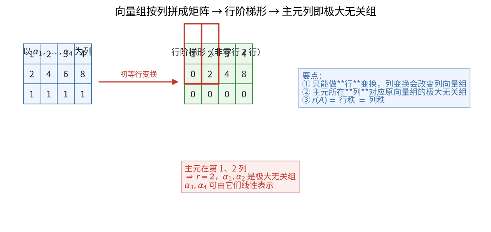
a1 a2 a3 ... as <- s column vectors
+-------+-------+-------+-------+-------+
| * | * | * | ... | * | step 1: write vectors
| * | * | * | ... | * | as columns
| * | * | * | ... | * | step 2: elementary ROW
+-------+-------+-------+-------+-------+ operations only
| * | * | * | ... | * |
+-------+-------+-------+-------+-------+
after row reduction to echelon form:
+-------+-------+-------+-------+-------+
| [1] | * | * | ... | * | [ ] = pivot column
| 0 | [1] | * | ... | * | pivots -> r(A) = r
| 0 | 0 | 0 | ... | * | pivot columns give a
| 0 | 0 | 0 | ... | 0 | maximal independent set
+-------+-------+-------+-------+-------+
主干元（方括号所在列）对应的原向量组构成极大线性无关组，其个数即该向量组的秩；非主元列对应的向量可由主元列向量线性表示。
查看该图源码
flowchart TD
A["向量组 a1 ... as"] --> B["按列拼成矩阵 A"]
B --> C["初等行变换化为行阶梯形"]
C --> D["数主元个数 r = 向量组的秩"]
D --> E{"r 与 s 的关系"}
E -->|"r = s"| F["线性无关"]
E -->|"r < s"| G["线性相关"]
D --> H["主元列对应的原向量组成极大无关组"]
易错点
错在哪 · 正确是什么- 把「线性相关」与「任意一个向量都能由其余向量表示」等同。 错在忽略「至少一个」与「每一个」的区别。正确说法是：相关只保证存在一个向量可由其余向量表示；像 $\alpha_1=(1,0)$、$\alpha_2=(2,0)$、$\alpha_3=(0,1)$ 这组中，$\alpha_3$ 就不能由 $\alpha_1,\alpha_2$ 表示。
- 用矩阵的初等列变换求极大无关组。 错在把行变换与列变换的效果混同。正确做法是只做初等行变换：行变换保持列向量之间的线性关系，主元列对应的原向量才是极大无关组；若对列做变换，列的位置被打乱，结论失效。
- 判定线性相关性时把矩阵的秩与向量个数或维数搞错。 错在拿 $r(A)$ 与 $n$（维数）比较。正确是与 $s$（向量个数）比较：$r(A)=s$ 无关，$r(A)
- 由「两组向量秩相等」直接推出「两组等价」。 错在漏掉线性表示这一步。正确做法：先由 $r(A)=r(A,B)$ 或 $r(B)=r(A,B)$ 验证其中一组能由另一组表示，再断言等价；秩相等只是等价的必要条件。
真题示例
题干 · 解析2024 年数二第 16 题（填空题，5 分）
设向量 $\alpha_1=\begin{pmatrix}a\\1\\-1\\1\end{pmatrix}$，$\alpha_2=\begin{pmatrix}1\\1\\b\\a\end{pmatrix}$，$\alpha_3=\begin{pmatrix}1\\a\\-1\\1\end{pmatrix}$，若 $\alpha_1,\alpha_2,\alpha_3$ 线性相关，且其中任意两个向量均线性无关，则 $ab=$ ______。
解析：三个 4 维向量线性相关 $\iff$ 以它们为列的矩阵 $A$ 的全部三阶子式为零。
其中四个三阶子式为 $-(a-1)(a+2)$、$-(a-1)(ab+b+2)$、$(a-1)(a+b)$（后两个各出现两次，仅在哪些行被取到上不同）。
第一步，用其中两个最简单的子式定位参数：由 $-(a-1)^{2}(a+2)=0$ 得 $a=1$ 或 $a=-2$。
若 $a=1$，则 $\alpha_1=\alpha_3$，两个向量线性相关，与「任意两个向量均线性无关」矛盾，故 $a=-2$。
第二步，把 $a=-2$ 代入其余子式：
$$(a-1)(ab+b+2)=(-3)(-2b+b+2)=-3(2-b)=0$$
得 $b=2$；同法
$$(a-1)(a+b)=(-3)(-2+b)=0$$
也得 $b=2$。两条方程一致，$a=-2,\ b=2$。
第三步，回代检验。sympy 复算：$a=-2,b=2$ 时三个向量为
$$\alpha_1=(-2,1,-1,1)^{T}$$
$$\alpha_2=(1,1,2,-2)^{T}$$
$$\alpha_3=(1,-2,-1,1)^{T}$$
全部四个三阶子式为零、$r=2$，三向量线性相关；且任意两列构成的矩阵秩均为 $2$，两两线性无关，完全符合题设。
结论 $ab=(-2)\times 2=-4$。
线性方程组 高频
考频统计
历年命题分布考察次数 1 次；涉及年份：2023、2024（2023—2024 年数二真题逐题定章统计）；分数占比约 15%；主要题型：选择、填空、解答（解的结构、基础解系、含参数讨论）。
核心讲解
定义 · 公式 · 适用条件【有解判定】
- 只看两个秩：$n$ 元线性方程组 $Ax=b$ 的有解性完全由 $r(A)$ 与 $r(A,b)$ 决定。
- 增广矩阵：$(A,b)$ 是把常数项列添到系数矩阵右侧得到的矩阵。
- 未知数个数：$r$ 与 $n$ 的比较决定解的 个数，与 $m$（方程个数）无关。
- 齐次的特权：齐次方程组 $Ax=0$ 永远有零解，因此永远属于「有解」的两种情形。
- 定理的作用：把「解方程组」彻底转化为「求两个矩阵的秩」。
【核心公式】
$$ Ax=b\ \text{有解}\iff r(A)=r(A,b)\iff b\in\operatorname{Col}(A) $$
$r(A)$ 与 $r(A,b)$ 的关系与解的情况对照如下（$n$ 为未知数个数）：
| $r(A)$ 与 $r(A,b)$ 的关系 | $r$ 与 $n$ 的关系 | 解的情况 | 自由未知量个数 |
|---|---|---|---|
$r(A)| —— |
无解 |
—— |
|
| $r(A)=r(A,b)=r$ | $r=n$ | 唯一解 | $0$ |
| $r(A)=r(A,b)=r$ | $r| 无穷多解 |
$n-r$ |
|
【适用条件】
- 必须先对增广矩阵 $(A,b)$ 整体做初等 行 变换，不能只变换系数矩阵 $A$；
- 「唯一解」的判据是 $r=n$，其中 $n$ 是 未知数个数；
- 「有无穷多解」时自由未知量的个数恒为 $n-r$；
- 方程个数 $m
⚠️ 易错点：把有解条件写成 $r(A)=r(A,b)=n$。有解条件只是 $r(A)=r(A,b)$，只有再加上 $r=n$ 才是唯一解。
【齐次解结构】
- 必有零解：$Ax=0$ 至少有一个解 $x=0$，问题只在于有没有 非零解。
- 解集是子空间：齐次方程组的解集对加法与数乘封闭，是 $\mathbb{R}^{n}$ 的一个子空间。
- 解空间维数：维数等于 $n-r(A)$，也就是基础解系中向量的个数。
- 基础解系：解空间的一组基，由 $n-r(A)$ 个 线性无关 的解向量组成。
- 通解形式：基础解系的任意线性组合就是全部解。
【核心公式】
$$ \dim\{x\mid Ax=0\}=n-r(A) $$
$$ x=k_1\xi_1+k_2\xi_2+\cdots+k_{n-r}\xi_{n-r}\quad(k_i\ \text{任意常数}) $$
【适用条件】
- 求基础解系的标准流程是对 $A$ 做初等行变换化为 行最简形；
- 主元变量用自由未知量表示，自由未知量依次取单位向量，即得基础解系；
- $Ax=0$ 只有零解 $\iff r(A)=n$，等价于 $A$ 的列向量组 线性无关；
- 自由未知量的个数与基础解系的维数一致，都等于 $n-r(A)$。
⚠️ 易错点：取自由未知量为单位向量之前必须把矩阵化成 行最简形，只在行阶梯形上取值会漏掉主元变量中的自由未知量成分。
【非齐次解结构】
- 解集不是子空间：$Ax=b$（$b\neq 0$）的解集对加法、数乘都不封闭。
- 结构定理：非齐次方程组的全部解 = 一个 特解 + 对应齐次方程组的 通解。
- 两步走：先求 $Ax=0$ 的基础解系，再找 $Ax=b$ 的一个特解，缺一不可。
- 特解不唯一：任意一个满足 $A\eta^{*}=b$ 的向量都可以充当特解。
- 与线性表示的同一性：矩阵方程与向量组的线性表示共用同一套判定。
【核心公式】
$$ x=\eta^{*}+k_1\xi_1+k_2\xi_2+\cdots+k_{n-r}\xi_{n-r}\quad(k_i\ \text{任意常数}) $$
其中 $\eta^{*}$ 是 $Ax=b$ 的一个特解，$\xi_1,\dots,\xi_{n-r}$ 是 $Ax=0$ 的基础解系。
【适用条件】
- 必须先判定 $r(A)=r(A,b)$，确认 有解 之后再求通解；
- 齐次通解部分与特解部分必须同时写出，并说明 $k_i$ 为任意常数；
- 特解可以由自由未知量全取 $0$ 得到，也可以取任何一组方便的值；
- 无穷多解时自由未知量的个数仍是 $n-r(A)$。
⚠️ 易错点：只写特解或只写齐次通解，都漏掉了解结构的一半。答案必须是「特解 $+$ 齐次通解」的完整形式。
【克拉默法则】
- 适用前提：方程个数等于未知数个数，且系数行列式 不为 0。
- 结论形式：每个未知量都能写成一个行列式之商。
- 分母固定：分母始终是 $|A|$，不随下标改变。
- 分子构造：$|A_j|$ 是把 $A$ 的第 $j$ 列换成 $b$ 所得的矩阵的行列式。
- 失效情形：$|A|=0$ 时克拉默法则完全失效，必须回到 秩 的判定。
【核心公式】
$$ |A|\neq 0\ \text{时}\quad x_j=\frac{|A_j|}{|A|}\quad(j=1,2,\dots,n) $$
$$ A_j=(\alpha_1,\dots,\alpha_{j-1},b,\alpha_{j+1},\dots,\alpha_n) $$
【适用条件】
- 系数矩阵 $A$ 必须是 $n$ 阶方阵，即方程个数等于未知数个数；
- 必须验证 $|A|\neq 0$ 才能使用；
- $|A|=0$ 时要分「无解」与「无穷多解」两类讨论，并对参数取值分类；
- 只有唯一解的情形才能用克拉默法则，无穷多解时它给不出答案。
⚠️ 秒杀技：只问某一个未知量时用克拉默法则最快——分子只需算 $|A_j|$ 一个行列式，不必把整个方程组解出来。
关键结论速记
考前最后扫一眼- $r(A)
- 齐次解空间维数 $=n-r(A)$ —— 基础解系中向量的个数，$n$ 是未知数个数
- $Ax=0$ 只有零解 $\iff r(A)=n$ —— 等价于 $A$ 的列向量组线性无关
- $Ax=b$ 的通解 $=\eta^{*}+$ 对应齐次方程组的通解 —— 非齐次解集是「平移过的子空间」
- $|A|\neq0$ 时 $x_j=\frac{|A_j|}{|A|}$ —— 克拉默法则，仅适用于方程个数等于未知数个数且系数行列式非零
- $r(A)=r(A,b)=r \Rightarrow$ 自由未知量个数为 $n-r$ —— 自由未知量个数与基础解系维数一致
- $Ax=b$ 有解 $\iff r(A)=r(A,b) \iff b\in\operatorname{Col}(A)$ —— 有解的三种同义说法
示意图
几何直观与判定流程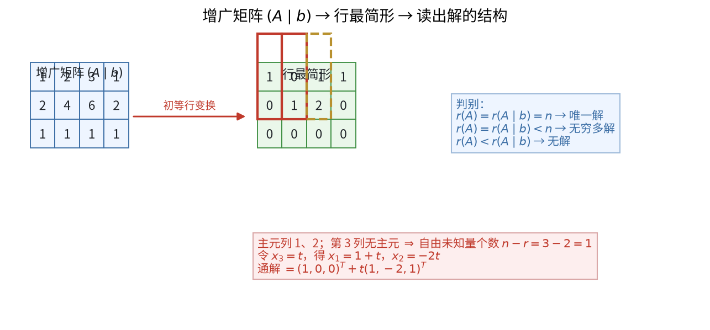
coefficient matrix A augmented matrix (A | b)
+----+----+----+ +----+----+----+----+
| a11| a12| a13| | a11| a12| a13| b1 |
+----+----+----+ +----+----+----+----+
| a21| a22| a23| ----> | a21| a22| a23| b2 |
+----+----+----+ +----+----+----+----+
| a31| a32| a33| | a31| a32| a33| b3 |
+----+----+----+ +----+----+----+----+
|
elementary row ops |
v
+----+----+----+----+ reduced row echelon form
| 1 | 0 | * | * | pivot columns -> basic vars
+----+----+----+----+ non-pivot -> free vars
| 0 | 1 | * | * | #free = n - r(A)
+----+----+----+----+
| 0 | 0 | 0 | 0 |
+----+----+----+----+
把常数项列添到系数矩阵右侧即得增广矩阵 $(A,b)$；对 $(A,b)$ 整体做初等行变换化为行最简形后，主元所在列对应基本未知量，其余列对应自由未知量，自由未知量的个数等于 $n-r(A)$。
查看该图源码
flowchart TD
A["线性方程组 Ax = b"] --> B["写出增广矩阵 (A|b)"]
B --> C["初等行变换化为行阶梯形"]
C --> D{"r(A) 与 r(A,b) 是否相等"}
D -->|"不相等"| E["无解"]
D -->|"相等"| F{"r(A) 与 n 的关系"}
F -->|"r(A) = n"| G["有唯一解"]
F -->|"r(A) < n"| H["有无穷多解, 自由未知量 n - r(A) 个"]
H --> I["先求 Ax = 0 的基础解系"]
I --> J["再取一个特解, 写成 eta* + 齐次通解"]
易错点
错在哪 · 正确是什么- 把有解条件写成 $r(A)=r(A,b)=n$。 错在把「有解」与「有唯一解」混为一谈。正确的有解条件只是 $r(A)=r(A,b)$，此时若 $r
- 认为「方程个数少于未知数个数」时方程组必有无穷多解。 错在漏掉无解的情形。正确的是：方程个数少只保证 $r(A)\le m
- $|A|=0$ 时仍用克拉默法则求 $x_j=\frac{|A_j|}{|A|}$。 错在分母为零时硬套公式。正确做法：$|A|=0$ 意味着 $r(A)
- 求非齐次通解时只写特解，或只写齐次通解。 错在漏掉结构的一半。正确形式必须是 $\eta^{}+k_1\xi_1+\cdots+k_{n-r}\xi_{n-r}$，且要说明 $k_i$ 为任意常数；另外特解不唯一，任意一个满足 $A\eta^{}=b$ 的向量都可以。
- 认为「方程个数少于未知数个数」时方程组必有无穷多解。 错在漏掉无解的情形。正确的是：方程个数少只保证 $r(A)\le m
真题示例
题干 · 解析2024 年数二第 22 题（解答题，12 分）
设矩阵 $A=\begin{pmatrix} 0 & 1 & a \\ 1 & 0 & 1 \end{pmatrix}$，$B=\begin{pmatrix} 1 & 1 \\ 1 & 1 \\ b & 2 \end{pmatrix}$，二次型 $f(x_1,x_2,x_3)=x^{T}BAx$，已知方程组 $Ax=0$ 的解是 $B^{T}x=0$ 的解，但两个方程组不同解。
（1）求 $a,b$ 的值；（2）求正交矩阵 $Q$，使变换 $x=Qy$ 将 $f(x_1,x_2,x_3)$ 化为标准形。
解析（本示例只解第（1）问；第（2）问见「二次型」一章）：
第一步，解 $Ax=0$，它的系数矩阵是 $2\times3$ 的，$r(A)=2$，
故解空间维数为 $3-2=1$。
由 $A$ 的两行解得 $x_1=-x_3$、$x_2=-ax_3$，
取自由未知量 $x_3=1$ 得基础解系
$$\xi=(-1,-a,1)^{T}$$
第二步，条件「$Ax=0$ 的解是 $B^{T}x=0$ 的解」即
$\xi$ 必须满足 $B^{T}\xi=0$。
计算
$$B^{T}=\begin{pmatrix}1&1&b\\1&1&2\end{pmatrix}$$
得
$$B^{T}\xi=\begin{pmatrix}b-a-1\\ 1-a\end{pmatrix}$$
令其为零向量，由第二式得 $a=1$，代回第一式得 $b=2$。
第三步，验证「两个方程组不同解」。
$a=1$ 时
$$B^{T}=\begin{pmatrix}1&1&2\\1&1&2\end{pmatrix}$$
两行相同，故 $r(B^{T})=1$；而 $r(A)=2$。
于是 $Ax=0$ 的解空间维数为 $3-2=1$，
$B^{T}x=0$ 的解空间维数为 $3-1=2$，维数不同，两个方程组确实不同解。
sympy 复算：$a=1,b=2$ 时 $A$ 的解空间为
$$\{t(-1,-1,1)^{T}\}$$
$B^{T}$ 的解空间为
$$\{s(-1,1,0)^{T}+t(-2,0,1)^{T}\}$$
前者是一维后者是二维，且 $\xi=(-1,-1,1)^{T}$ 同时满足两个方程。结论 $a=1,\ b=2$。
特征值与特征向量 高频
考频统计
历年命题分布考察次数 3 次；涉及年份：2023、2024（2023—2024 年数二真题逐题定章统计）；分数占比约 24%；主要题型：选择、解答（相似对角化、实对称矩阵）。
核心讲解
定义 · 公式 · 适用条件【特征值与特征向量】
- 定义：设 $A$ 为 $n$ 阶方阵，若存在数 $\lambda$ 与 非零 向量 $\alpha$ 使 $A\alpha=\lambda\alpha$，则 $\lambda$ 为特征值、$\alpha$ 为对应的特征向量。
- 特征方程：把定义式移项得 $(A-\lambda E)\alpha=0$，由 $\alpha\neq 0$ 推出系数行列式必为 $0$。
- 特征多项式：$|A-\lambda E|$ 是 $\lambda$ 的 $n$ 次多项式，它的根就是全部特征值。
- 求法固定两步：先解 $|A-\lambda E|=0$ 得到全部特征值（含重数），再把每个 $\lambda$ 代入求基础解系。
- 特征向量的封闭性：属于同一特征值的特征向量的任意 非零线性组合 仍是该特征值的特征向量。
- 重数概念：代数重数是 $\lambda$ 作为特征方程根的重数，几何重数是 $n-r(\lambda E-A)$。
【核心公式】
$$ A\alpha=\lambda\alpha\quad(\alpha\neq 0)\iff |A-\lambda E|=0 $$
$$ \lambda_1+\lambda_2+\cdots+\lambda_n=\operatorname{tr}(A),\qquad \lambda_1\lambda_2\cdots\lambda_n=|A| $$
【适用条件】
- $A$ 必须是 $n$ 阶方阵，非方阵没有特征值；
- 特征向量必须 非零，零向量不算特征向量；
- 把每个 $\lambda$ 代回 $(A-\lambda E)x=0$ 求基础解系，得到的是属于该 $\lambda$ 的线性无关特征向量；
- 两条速算恒等式可用来验算求出的特征值，也可在只问「和」或「积」时跳过解方程。
⚠️ 秒杀技：先用 $\sum\lambda_i=\operatorname{tr}(A)$ 与 $\prod\lambda_i=|A|$ 验算。若算出的特征值之和或积对不上，不必往下算，回头检查特征方程。
【相似对角化】
- 相似的定义：存在 可逆 矩阵 $P$ 使 $P^{-1}AP=B$ 时称 $A$ 与 $B$ 相似。
- 对角化的含义：找可逆矩阵 $P$ 使 $P^{-1}AP=\Lambda$，$\Lambda$ 为对角阵。
- 总判据：$A$ 可对角化 $\iff$ $A$ 有 $n$ 个 线性无关 的特征向量。
- 重数语言：对每个特征值，几何重数等于代数重数时即可对角化。
- 充分条件：$n$ 阶方阵若有 $n$ 个互不相同的特征值，则必可对角化。
- 构造方法：把 $n$ 个线性无关的特征向量按列排成 $P$，对角元 $\lambda_i$ 与第 $i$ 列一一对应。
【核心公式】
$$ P^{-1}AP=\Lambda=\operatorname{diag}(\lambda_1,\lambda_2,\dots,\lambda_n),\qquad P=(\alpha_1,\alpha_2,\dots,\alpha_n) $$
$$ \text{几何重数}=n-r(\lambda E-A)\le\text{代数重数} $$
能否相似对角化的判定对照：
| 判定角度 | 可对角化 | 不可对角化 |
|---|---|---|
| 特征向量个数 | 有 $n$ 个 线性无关 的特征向量 | 线性无关特征向量不足 $n$ 个 |
| 几何重数与代数重数 | 每个特征值都有 几何重数 $=$ 代数重数 | 存在某个特征值几何重数 $<$ 代数重数 |
| 几何重数之和 | $\sum$ 几何重数 $=n$ | $\sum$ 几何重数 $ |
| 特征值互异情形 | $n$ 个互异特征值 $\Rightarrow$ 必可对角化 | 互异特征值不可能出现 |
| 重根情形 | 重根也能补足几何重数（如 $E$ 本身） | 重根补不足（如 $\begin{pmatrix}1&1\\0&1\end{pmatrix}$） |
| 实对称矩阵 | 实对称 必可对角化，且可正交对角化 | 实对称不会不可对角化 |
【适用条件】
- $\lambda_i$ 与 $P$ 的第 $i$ 列必须一一对应，顺序可调换但不能错配；
- 求几何重数用 $n-r(\lambda E-A)$，注意是 $\lambda E-A$ 而不是 $A-\lambda E$ 的秩（两者相同，但符号要一致）；
- 特征值互异只是可对角化的 充分条件，有重根时仍可能可对角化；
- 不同特征值对应的特征向量必 线性无关，重根内部才需要另行检验。
⚠️ 易错点：认为「有重特征值就一定不能对角化」。只有几何重数 小于 代数重数时才不可对角化。
【实对称矩阵】
- 必可对角化：实对称 矩阵一定可以对角化，且特征值全为实数。
- 正交对角化：存在 正交矩阵 $Q$ 使 $Q^{-1}AQ=Q^{T}AQ=\Lambda$。
- 正交矩阵的性质：$Q^{T}Q=E$，即 $Q^{-1}=Q^{T}$。
- 自动正交：属于 不同 特征值的特征向量必正交，无需再做施密特正交化。
- 重根内部：只有同一个重根对应的特征子空间内部才需要做施密特正交化。
- 单位化不可省：正交化之后每个向量必须单位化，才能拼出正交矩阵 $Q$。
【核心公式】
$$ Q^{-1}AQ=Q^{T}AQ=\Lambda,\qquad Q^{T}Q=E\iff Q^{-1}=Q^{T} $$
【适用条件】
- $A$ 必须是 实对称 矩阵，即 $A^{T}=A$；
- $Q$ 的每一列必须是一组 标准正交 的特征向量（两两正交且模长为 $1$）；
- 不同特征值的特征向量自动正交，重根内部才需要施密特正交化；
- 单位化这一步不可省略，漏掉就得不到正交矩阵。
⚠️ 秒杀技：判定「能否正交对角化」先看 $A^{T}=A$ 是否成立。实对称 直接下结论「必可正交对角化」，不必再逐个算几何重数。
关键结论速记
考前最后扫一眼- $A\alpha=\lambda\alpha$（$\alpha\neq0$）$\iff |A-\lambda E|=0$ —— 特征值由特征方程确定，特征向量必须非零
- $\sum\lambda_i=\operatorname{tr}(A)$，$\prod\lambda_i=|A|$ —— 特征值的和等于迹、积等于行列式，用于验算
- $A$ 可对角化 $\iff$ 有 $n$ 个线性无关的特征向量 $\iff$ 每个特征值的几何重数 $=$ 代数重数 —— 对角化的总判据
- 几何重数 $=n-r(\lambda E-A)$ —— 属于 $\lambda$ 的线性无关特征向量的最大个数
- $n$ 个互异特征值 $\Rightarrow$ 必可对角化 —— 充分不必要，有重根时仍可能可对角化
- $P^{-1}AP=\Lambda$，$P=(\alpha_1,\dots,\alpha_n)$ —— 特征向量按列排，顺序要与对角元 $\lambda_i$ 一一对应
- 实对称矩阵必可对角化，且存在正交阵 $Q$ 使 $Q^{T}AQ=\Lambda$ —— 不同特征值的特征向量自动正交
示意图
几何直观与判定流程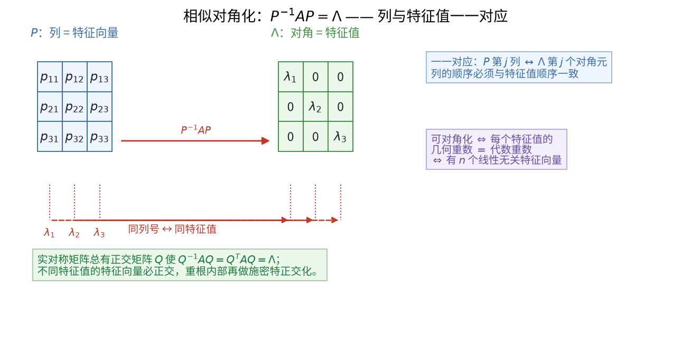
A * P = P * Lambda
+-------+ +-------+ +-------+-------+ +-------+-------+
| | | | | | | | | | | l1 | 0 |
| n | * | a1| a2| = | a1| a2| a1| a2| * | 0 | l2 |
| | | | | | | | | | | | |
+-------+ +-------+ +-------+-------+ +-------+-------+
| ^
| columns are the n |
| independent eigenvectors +-- lambda_i matches
| column alpha_i
v
A * alpha_i = lambda_i * alpha_i for each column
+-----------------------------------------------+
| tr(A) = l1 + l2 + ... + ln |
| det(A) = l1 * l2 * ... * ln |
+-----------------------------------------------+
图中 $P$ 的每一列是一个特征向量，$A\alpha_i=\lambda_i\alpha_i$ 逐个成立；对角阵 $\Lambda$ 的第 $i$ 个对角元必须与 $P$ 的第 $i$ 列对应，顺序可以调换但不能错配。
查看该图源码
flowchart TD
A["n 阶方阵 A"] --> B["解特征方程 |A - lambda E| = 0"]
B --> C["得全部特征值及其代数重数"]
C --> D{"是否有 n 个互异特征值"}
D -->|"是"| E["必可对角化, P^-1 A P = Lambda"]
D -->|"否"| F["对每个重根 lambda 求 n - r(lambda E - A)"]
F --> G{"几何重数 = 代数重数"}
G -->|"是"| E
G -->|"否"| H["不可对角化"]
A --> I{"A 是否为实对称矩阵"}
I -->|"是"| J["必可正交对角化, Q^T A Q = Lambda"]
易错点
错在哪 · 正确是什么- 把特征向量只写成「$(\lambda E-A)x=0$ 的解」而漏掉非零要求。 错在把零向量也算作特征向量。正确的是特征向量必须非零；$(A-\lambda E)x=0$ 的零解不算，我们要的是它的基础解系中的非零向量。
- 认为「有重特征值就一定不能对角化」。 错在把「有重根」与「不可对角化」等同。正确做法是再看几何重数：例如 $J=\begin{pmatrix}1&1\0&1\end{pmatrix}$ 的二重特征值 $1$ 只对应一个线性无关特征向量（$2-r(E-J)=2-1=1$），故不可对角化；而 $E=\begin{pmatrix}1&0\0&1\end{pmatrix}$ 的二重特征值 $1$ 却对应两个线性无关特征向量，它本身已是对角阵。真正的判据是几何重数是否等于代数重数。
- 认为「可对角化」等价于「特征值互异」。 错在把充分条件当充要条件。正确说法：互异特征值只是可对角化的充分条件；有重根时只要每个重根的几何重数补足，仍可对角化，例如单位矩阵 $E$ 只有特征值 $1$，但它本身已是对角阵。
- 写出 $P^{-1}AP=\Lambda$ 后不核对列与对角元的对应关系。 错在把特征向量的顺序与特征值的顺序随意调换。正确做法：$P$ 的第 $i$ 列必须是对角阵第 $i$ 个对角元对应的特征向量；另外要注意 $P^{-1}AP$ 与 $PAP^{-1}$ 是两个不同的式子，前者才是相似变换。
真题示例
题干 · 解析2024 年数二第 10 题（单项选择题，5 分）
设 $A,B$ 均为 2 阶矩阵，且 $AB=BA$，则「$A$ 有两个不相等的特征值」是「$B$ 可对角化」的（ ）
A. 充要条件 B. 充分非必要条件 C. 必要非充分条件 D. 既非充分又非必要条件
解析：先证充分性。
设 $A$ 的两个特征值 $\lambda_1\neq\lambda_2$。
对应特征向量 $\alpha_1,\alpha_2$ 线性无关，构成 $\mathbb{R}^2$ 的一组基。
由 $AB=BA$ 得
$$A(B\alpha_i)=B(A\alpha_i)=\lambda_i(B\alpha_i)$$
即 $B\alpha_i$ 仍是属于 $\lambda_i$ 的特征向量，而属于不同特征值的特征向量空间都是一维的。
故 $B\alpha_i=\mu_i\alpha_i$（$i=1,2$）。
这说明 $\alpha_1,\alpha_2$ 也是 $B$ 的特征向量，$B$ 有 2 个线性无关的特征向量，可对角化。
充分性成立。
再看必要性。取 $A=B=E$。
sympy 复算：$AE-EA=O$，且 $A$ 的特征值为 $\{1,1\}$（不互异）。
而 $B=E$ 本身是对角阵、可对角化，说明「$B$ 可对角化」推不出「$A$ 有两个不相等的特征值」。
再用 sympy 验证一遍正面情形：取
$$A=\operatorname{diag}(1,2)$$
$$B=\operatorname{diag}(1,5)$$
则 $AB-BA=O$、$A$ 特征值为 $\{1,2\}$ 互异。
且 $B$ 可对角化，与充分性结论一致。
故该条件是充分非必要条件，选 B。
二次型 高频
考频统计
历年命题分布考察次数 3 次；涉及年份：2023、2024（2023—2024 年数二真题逐题定章统计）；分数占比约 12%；主要题型：选择、解答（正交变换化标准形、正定性、惯性指数）。
核心讲解
定义 · 公式 · 适用条件【二次型与矩阵表示】
- 二次型定义：含 $n$ 个变量的二次齐次多项式 $f(x_1,\dots,x_n)=\sum_{i=1}^{n}\sum_{j=1}^{n}a_{ij}x_ix_j$。
- 对称约定：约定 $a_{ij}=a_{ji}$，于是交叉项的系数必须 对半分 给对称位置。
- 矩阵形式：$f=x^{T}Ax$，其中 $A$ 是 对称 矩阵，称为该二次型的矩阵。
- 二次型的秩：$r(A)$ 称为二次型的秩。
- 写矩阵的关键：$a_{ii}$ 是 $x_i^{2}$ 的系数，$a_{ij}=a_{ji}$ 是 $x_ix_j$ 系数的一半。
- 合同关系：$A$ 与 $C^{T}AC$（$C$ 可逆）合同，合同保持秩与惯性指数。
【核心公式】
$$ f(x_1,\dots,x_n)=\sum_{i=1}^{n}\sum_{j=1}^{n}a_{ij}x_ix_j=x^{T}Ax,\qquad A^{T}=A $$
【适用条件】
- $A$ 必须写成 对称 矩阵，即 $A^{T}=A$；
- $x_ix_j$ 的系数必须拆成 $a_{ij}=a_{ji}=\frac{c}{2}$ 两半；
- $C^{T}AC$ 中的 $C$ 必须 可逆，否则秩与惯性指数都可能改变；
- 二次型研究的等价关系是合同，不是相似。
⚠️ 易错点：把交叉项系数直接填进 $a_{ij}$。写成非对称矩阵后特征值全错，正交变换也就无从谈起。
【标准形与规范形】
- 标准形：只含平方项、不含交叉项的二次型，形如 $d_1y_1^{2}+\cdots+d_ny_n^{2}$。
- 规范形：系数只取 $1,-1,0$ 的标准形。
- 配方法：对应一般的 可逆 线性变换 $x=Cy$，只要求 $C$ 可逆。
- 正交变换法：取 $C=Q$ 为 正交矩阵，即 $x=Qy$，其步骤与实对称矩阵正交对角化完全一致。
- 正交变换法的系数：标准形的系数恰为 $A$ 的 全部特征值，且 $Q$ 的列与系数一一对应。
- 重根处理：不同特征值的特征向量自动正交，只需在重根内部做施密特正交化。
【核心公式】
$$ x=Qy\ \Longrightarrow\ f=x^{T}Ax=\lambda_1y_1^{2}+\lambda_2y_2^{2}+\cdots+\lambda_ny_n^{2},\qquad Q^{T}AQ=\Lambda $$
正交变换法与配方法对照：
| 对比项 | 正交变换法 | 配方法 |
|---|---|---|
| 所用变换 | $x=Qy$，$Q$ 为 正交矩阵 | $x=Cy$，$C$ 只要求 可逆 |
| 标准形系数 | 恰为 $A$ 的 特征值 | 由配方过程决定，一般不是特征值 |
| 是否需要求特征值 | 必须先解 $\lvert A-\lambda E\rvert=0$ | 不需要 |
| 是否需要正交化、单位化 | 重根内部需要，且必须 单位化 | 完全不需要 |
| 变换的唯一性 | 系数顺序可调，系数集合唯一 | 结果不唯一，与配方顺序有关 |
| 计算量 | 较大，但结论规范 | 较小，适合只求标准形 |
| 典型用途 | 要求写出 $Q$、或需要标准形系数 | 只需判惯性指数或求标准形 |
【适用条件】
- 配方法中的 $C$ 必须 可逆，配完后要做可逆性检验；
- 正交变换法要求先求出 $A$ 的全部特征值；
- 重根内部必须做施密特正交化，不同特征值之间不必再做；
- 单位正交特征向量按列拼成 $Q$，$Q^{T}AQ=\Lambda$ 才成立。
⚠️ 秒杀技：只要求标准形、不要求写出变换矩阵时，用配方法最快，完全绕过特征值；一旦题目要求正交矩阵 $Q$，就必须走特征值这条路。
【惯性定理与正定性】
- 惯性定理：无论用哪种可逆线性变换，标准形中正平方项的个数 $p$（正惯性指数）与负平方项的个数 $q$（负惯性指数）都 唯一确定。
- 指数关系：$p+q=r(A)$，$p-q$ 称为符号差。
- 规范形唯一：$y_1^{2}+\cdots+y_p^{2}-y_{p+1}^{2}-\cdots-y_{p+q}^{2}$ 是唯一确定的规范形。
- 正定定义：对任意 $x\neq 0$ 都有 $x^{T}Ax>0$。
- 正定的判据群：特征值全为正、正惯性指数 $p=n$、各阶顺序主子式全大于零（Sylvester 判据）。
- 负定与不定：负定的判定是 $-f$ 正定；若 $f$ 既能取到正值又能取到负值，则是不定的。
【核心公式】
$$ p+q=r(A),\qquad \text{规范形}=y_1^{2}+\cdots+y_p^{2}-y_{p+1}^{2}-\cdots-y_{p+q}^{2} $$
$$ f\ \text{正定}\iff x^{T}Ax>0\ (\forall x\neq 0)\iff \lambda_i>0\iff p=n\iff \text{各阶顺序主子式全}>0 $$
正定、半正定、负定、不定判定对照（$A$ 为 实对称 矩阵）：
| 类型 | 定义（对任意 $x\neq 0$） | 特征值符号 | 惯性指数 | 顺序主子式 | 典型例子 |
|---|---|---|---|---|---|
| 正定 | $x^{T}Ax>0$ | 全 $>0$ | $p=n,\ q=0$ | 各阶全 $>0$ | $\begin{pmatrix}2&0\\0&3\end{pmatrix}$ |
| 半正定 | $x^{T}Ax\ge 0$，且存在 $x\neq 0$ 使等号成立 | 全 $\ge 0$，含 $0$ | $p=r| 各阶 $\ge 0$ |
$\begin{pmatrix}1&0\\0&0\end{pmatrix}$ |
|
| 负定 | $x^{T}Ax<0$ | 全 $<0$ | $p=0,\ q=n$ | 奇数阶 $<0$、偶数阶 $>0$ | $\begin{pmatrix}-1&0\\0&-2\end{pmatrix}$ |
| 不定 | 既有 $x$ 使 $>0$，又有 $x$ 使 $<0$ | 有正有负 | $p>0,\ q>0$ | 无固定规律 | $\begin{pmatrix}1&0\\0&-1\end{pmatrix}$ |
正定的等价说法：
| 等价说法 | 表达形式 | 最适用的题型 |
|---|---|---|
| 定义式 | 对任意 $x\neq 0$ 有 $x^{T}Ax>0$ | 证明题 |
| 特征值判据 | $\lambda_i>0\ (i=1,\dots,n)$ | 已知特征值或易求特征值 |
| 惯性指数判据 | $p=n$，即 $p+q=n$ | 已知规范形或标准形 |
| 顺序主子式判据 | 各阶顺序主子式全 $>0$ | 含参数的矩阵求参数范围 |
| 合同于单位阵 | $A$ 合同于 $E$ | 抽象合同讨论 |
【适用条件】
- 判定正定前必须先确认 $A$ 是 实对称 矩阵；
- Sylvester 判据要求「各阶 顺序 主子式」全大于零，不能只验一部分；
- $r(A)
- 负定的顺序主子式是 奇数阶为负、偶数阶为正，与正定的全正不同。
⚠️ 易错点：把「特征值非负」当成正定，那是半正定。反例 $\begin{pmatrix}1&0\\0&0\end{pmatrix}$ 半正定但不正定。
关键结论速记
考前最后扫一眼- $f=x^{T}Ax$，$A=A^{T}$，$a_{ii}$ 是 $x_i^{2}$ 的系数，$a_{ij}=a_{ji}$ 是 $x_ix_j$ 系数的一半 —— 写二次型矩阵时最易错的一步
- 正交变换 $x=Qy$ $\Rightarrow$ $f=\lambda_1y_1^{2}+\cdots+\lambda_ny_n^{2}$ —— 标准形系数就是 $A$ 的全部特征值
- $p+q=r(A)$，规范形唯一 —— 惯性定理，正负惯性指数与所用变换无关
- 正定 $\iff$ 特征值全正 $\iff$ 正惯性指数 $p=n \iff$ 各阶顺序主子式全大于零 —— 正定判定的四条等价说法
- $A$ 与 $C^{T}AC$ 合同（$C$ 可逆），合同的矩阵秩与惯性指数相同 —— 二次型研究的等价关系是合同而非相似
- 实对称矩阵必存在正交阵 $Q$ 使 $Q^{T}AQ=\Lambda$ —— 正交变换法的全部依据
- $r(A)
示意图
几何直观与判定流程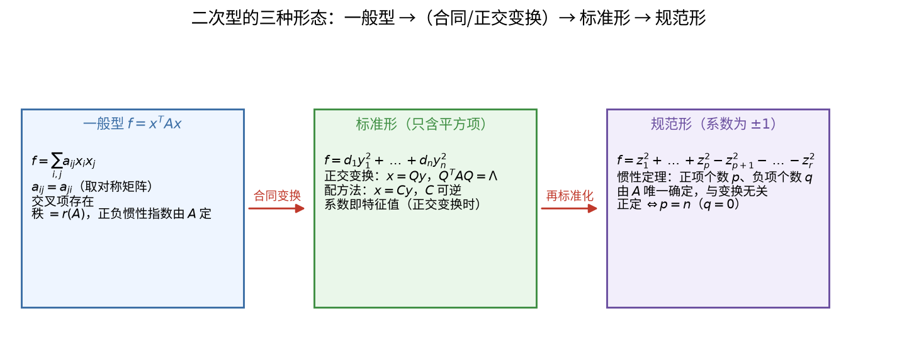
general form congruence standard form
+-----------------+ +-------------+ +-----------------+
| x^T A x | --> | x = C y | --> | d1 y1^2 + ... |
| A symmetric | | C invertible| | + dn yn^2 |
+-----------------+ +-------------+ +-----------------+
| |
| orthogonal case: x = Q y, Q^T Q = E |
v v
+-----------------+ +-----------------+
| Q^T A Q = Lambda| ---------------------> | l1 y1^2 + ... |
| Lambda diagonal | | + ln yn^2 |
+-----------------+ +-----------------+
| |
+---- eigenvalues of A are the coefficients ----+
normal form: coefficients are only 1, -1, 0
+--------------------------------------------------+
| y1^2 + ... + yp^2 - y(p+1)^2 - ... - y(p+q)^2 |
| p = positive index, q = negative index, p+q = r(A)|
+--------------------------------------------------+
图中横向是「一般二次型 $\to$ 可逆线性变换 $\to$ 标准形」的合同路线，纵向是正交变换这一特殊情形；正交变换下标准形的系数就是 $A$ 的特征值，而规范形的系数只有 $1,-1,0$，由惯性指数 $p,q$ 唯一决定。
查看该图源码
flowchart TD
A["二次型 f = x^T A x"] --> B["写出对称矩阵 A"]
B --> C["解 |A - lambda E| = 0 求全部特征值"]
C --> D["对每个特征向量正交化并单位化"]
D --> E["按列排成正交矩阵 Q"]
E --> F["标准形 f = lambda1 y1^2 + ... + lambda_n yn^2"]
B --> G{"判定正定性"}
G --> H["算各阶顺序主子式"]
H --> I{"全部大于零"}
I -->|"是"| J["正定, 正惯性指数 p = n"]
I -->|"否"| K["再看特征值符号定惯性指数"]
易错点
错在哪 · 正确是什么- 写二次型矩阵时把交叉项系数直接填进 $a_{ij}$。 错在忘记对称位置要各分一半。正确做法：$x_ix_j$ 的系数 $c$ 要拆成 $a_{ij}=a_{ji}=\frac{c}{2}$，例如 $f=2x_1x_2$ 的矩阵是 $\begin{pmatrix}0&1\1&0\end{pmatrix}$ 而不是 $\begin{pmatrix}0&2\2&0\end{pmatrix}$。写成非对称矩阵后特征值全错，正交变换也就无从谈起。
- 把正交变换下的标准形系数写成任意数，或与特征值顺序错配。 错在脱离特征值去配系数。正确做法：正交变换 $x=Qy$ 下标准形的系数只能是 $A$ 的特征值，且 $Q$ 的第 $i$ 列必须对应第 $i$ 个系数；若只要求写出标准形（不要求写出 $Q$），系数顺序可以任意排列。
- 判定正定时只看部分主子式、或把「特征值非负」当成正定。 错在把半正定与正定混淆，也错把「顺序主子式」偷换成「一般主子式」。正确做法：正定必须验证各阶顺序主子式全大于零，或等价地验证特征值全为正。反例：$\begin{pmatrix}1&0\0&0\end{pmatrix}$ 的一阶主子式为 $1,0$，它半正定但不正定；再看 $\begin{pmatrix}-1&0\0&-2\end{pmatrix}$ 这种特征值全负的矩阵，它是负定而非正定。
- 把合同的矩阵当成相似矩阵来处理。 错在混用两种等价关系。正确做法：二次型化标准形用的是合同变换 $C^{T}AC$（保持秩与惯性指数），不保持特征值；只有正交变换这一特殊情形才同时是相似变换，此时系数才等于特征值。
真题示例
题干 · 解析2024 年数二第 22 题（解答题，12 分）
设矩阵 $A=\begin{pmatrix} 0 & 1 & a \\ 1 & 0 & 1 \end{pmatrix}$，$B=\begin{pmatrix} 1 & 1 \\ 1 & 1 \\ b & 2 \end{pmatrix}$，二次型 $f(x_1,x_2,x_3)=x^{T}BAx$，已知方程组 $Ax=0$ 的解是 $B^{T}x=0$ 的解，但两个方程组不同解。
（1）求 $a,b$ 的值；（2）求正交矩阵 $Q$，使变换 $x=Qy$ 将 $f(x_1,x_2,x_3)$ 化为标准形。
解析（本例只解第（2）问，$a=1,b=2$ 由第（1）问得到，见「线性方程组」一章）：
第一步，代入 $a=1,b=2$ 算出二次型矩阵。
$$BA=\begin{pmatrix}1&1&2\\1&1&2\\2&2&4\end{pmatrix}$$
它本身已经是对称矩阵，故 $f=x^{T}(BA)x$ 的矩阵就是
$$S=\begin{pmatrix}1&1&2\\1&1&2\\2&2&4\end{pmatrix}$$
第二步，求 $S$ 的特征值：
$$|S-\lambda E|=\lambda^{2}(\lambda-6)$$
sympy 复算特征值为 $6,0,0$，于是二次型的标准形只含一个平方项，系数为 $6$。
第三步，求正交矩阵。
$\lambda=6$ 对应特征向量 $(1,1,2)^{T}$，单位化得
$$q_1=\frac{1}{\sqrt6}(1,1,2)^{T}$$
$\lambda=0$ 的特征子空间由 $(-1,1,0)^{T}$、$(-2,0,1)^{T}$ 张成，对其做施密特正交化并单位化得
$$q_2=\frac{1}{\sqrt2}(1,-1,0)^{T}$$
$$q_3=\frac{1}{\sqrt3}(-1,-1,1)^{T}$$
sympy 复算 $Q^{T}Q=E$ 且 $Q^{T}SQ=\operatorname{diag}(6,0,0)$。
第四步，写出结论：取
$$Q=\begin{pmatrix}\frac{1}{\sqrt6}&\frac{1}{\sqrt2}&-\frac{1}{\sqrt3}\\ \frac{1}{\sqrt6}&-\frac{1}{\sqrt2}&-\frac{1}{\sqrt3}\\ \frac{2}{\sqrt6}&0&\frac{1}{\sqrt3}\end{pmatrix}$$
则正交变换 $x=Qy$ 把 $f$ 化为标准形 $f=6y_1^{2}$。